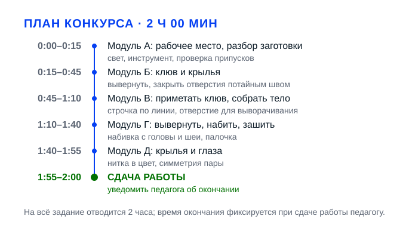
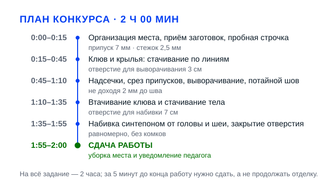
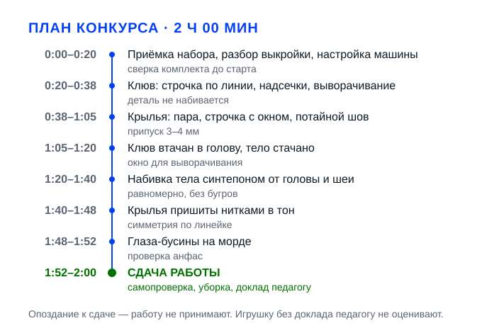

Изготовление мягкой игрушки (ФВ)
Задания ниже — официальные файлы «Абилимпикс» (источник: abilympics-russia.ru), разложенные по категориям. Решения написаны по тексту задания, регламенту и критериям оценки; в них указано, что именно проверяет эксперт.
Школьник
14–16 лет, базовый уровень заданияВ официальном файле категории не разделены отдельными разделами — приводим задание целиком; различия по категориям смотрите в таблице модулей.
Пошаговое решение
Конкурсное задание для школьников выглядит скромно: за два часа нужно изготовить простую игрушку гуся из заранее подготовленной заготовки — пришить клюв и крылья, набить тело синтепоном и закрыть отверстия потайным швом. За этой простотой стоит плотная последовательность из шести операций, где каждая следующая опирается на предыдущую: неверно вложенный клюв обнаруживается только после выворачивания, а отверстие в пять сантиметров превращает набивку в мучение. Оценивают работу по трём критериям — ровные швы, равномерная набивка и эстетика, — и все три проверяются руками: игрушку сжимают, разворачивают, смотрят на просвет. Поэтому решение построено не вокруг «сделать быстро», а вокруг «сделать так, чтобы проверять было нечего». Пять задач идут в том же порядке, в каком их выполняют за столом, начиная с организации места и заканчивая докладом педагогу.

Задача 1. Организовать рабочее место и разобрать заготовкуМодуль А · подготовка · 15 минут из 2 часов
По конкурсному заданию школьник получает заранее подготовленную заготовку гуся и должен пришить клюв и крылья, набить тело синтепоном и закрыть отверстия потайным швом. Прежде чем брать иглу, надо устроить стол так, чтобы всё нужное лежало под рукой, разложить детали и убедиться, что линии шва видны, а припуски на месте. Эти пятнадцать минут не входят в оценку отдельным пунктом, но именно они решают, будет ли дальше время работать на вас: потерянная деталь крыла или нитки не в цвет обнаруживаются обычно в самом конце, когда исправлять уже нечем.
Действие 1.1. Поставить свет и устроить стол
Шаг 1.1.1
Садимся за стол и первым делом проверяем свет: он должен падать на работу слева, если вы правша, и справа, если левша, чтобы ваша же рука не бросала тень на линии шва. Настольную лампу ставим так, чтобы она не светила в глаза и не грела ткань, а сама работа оказалась в самом светлом пятне. Машинку отодвигаем вправо на расстояние вытянутой руки, чтобы её корпус не мешал раскладывать детали, но чтобы до лапки можно было дотянуться, не вставая.
Линии шва на заготовке нанесены тонко, а ткань у гуся светлая, и при плохом свете строчка уходит в сторону на два-три миллиметра — глазу это незаметно, а на готовой игрушке видно сразу. Критерий «ровные швы» относится ко всей работе, и первое, что его разрушает, — это работа в тени собственной руки, когда участник ведёт ткань на ощупь, а не по линии.
Положите под лампу лоскут ткани и посмотрите на него с рабочего расстояния: линия шва должна читаться без напряжения глаз, блик от лампы не должен попадать в поле зрения. На столе не должно оставаться посторонних предметов — телефона, сумки, бутылки: всё лишнее убираем под стол или на отдельный край.
Самая частая ошибка — сесть спиной к окну: кажется, что света много, а на деле работа в контражуре, и через полчаса глаза устают так, что стежок становится неровным. Вторая ошибка — поставить машинку прямо перед собой и работать на пятачке двадцать на тридцать сантиметров, где детали некуда разложить.
Эксперт обходит рабочие места в первые минуты и отмечает, есть ли свет и порядок на столе: это часть общего впечатления от организации работы, которое потом подкрепляется или разрушается ходом дела.
Шаг 1.1.2
Садимся так, чтобы локти свободно лежали на столе, спина была прямой, а ноги стояли на полу всей ступнёй. Высоту стула подбираем под себя: если столешница оказывается на уровне локтей, руки работают без напряжения, и стежок идёт ровно. Машинку ставим лапкой к себе, корпус на 25–30 сантиметров от края стола, а педаль — под правую ногу, не под левую.
Два часа работы за столом — это не пять минут, и посадка влияет на результат напрямую: при зажатых плечах амплитуда движения руки падает, потайной шов получается с крупными стежками, а к концу второго часа пальцы начинают дрожать именно там, где надо пришивать бусины. Ровная посадка ещё и защищает от случайного прокола: игла идёт туда, куда её направляет кисть, а не туда, куда её тянет затекшая рука.
Проверьте себя просто: положите обе руки на стол — предплечья должны лежать целиком, а не висеть. Педаль достаётся без наклона корпуса, обзор лапки открыт, линия шва видна целиком. Если приходится тянуться — поднимите стул или подложите что-то под столешницу, пока не станет удобно.
Типичная ошибка — сесть «как получилось», на низкий стул, согнувшись над машинкой: через сорок минут поясница начинает болеть, и участник начинает торопиться, чтобы закончить. Вторая — работать на весу, когда ткань держат над столом: стежок получается неровным, а игла уходит вкось.
Эксперт смотрит на посадку и на то, насколько участник бережёт руки: при аккуратной работе на пальцах нет следов от иглы. Отдельно отмечается, останавливает ли участник машинку перед тем, как поправить ткань, — это привычка, которая отличает уверенную работу от суетливой.
Действие 1.2. Разобрать и проверить комплект деталей
Шаг 1.2.1
Вынимаем все детали из набора и раскладываем их на столе в том порядке, в каком они будут нужны: сначала две детали тела, потом две детали крыльев, потом клюв, затем палочка для набивки и синтепон. Пересчитываем по памяти вслух: тело два, крыло два, клюв один — если чего-то не хватает, это выясняется сейчас, а не через час, когда тело уже набито. Детали кладём лицевой стороной вниз, чтобы сразу видеть линии шва и припуски.
Заготовка у школьников приходит уже выкроенной, но это не значит, что в наборе всё идеально: детали бывают вложены липкой стороной друг к другу, замяты или перепутаны по размеру. Разложенный комплект — это ваша страховка: пока детали лежат отдельно, любую можно заменить или выровнять, а когда они уже сколоты и прострочены, замена стоит времени, которого на конкурсе нет.
Все позиции перечня на месте: две симметричные детали тела, две одинаковые детали крыльев, клюв, синтепон и палочка. Детали не перекошены, не имеют заломов по линии шва и лежат лицевой стороной вниз — то есть так, как их надо будет складывать.
Начать пришивать клюв, не разложив комплект: потом выясняется, что второе крыло поменьше первого, и игрушка выходит асимметричной. Вторая ошибка — держать детали в куче и брать их наугад, путая лицевую и изнаночную сторону.
Эксперт подходит к столу в самом начале и смотрит, разложен ли комплект: работа «из кучи» обычно заканчивается переделкой, и это видно по темпу. Если рядом с деталями лежит раскрытая схема или листок с планом, это читается как признак осознанной работы, а не случайной.
Шаг 1.2.2
Определяем лицевую и изнаночную сторону ткани: лицевая обычно ярче, рисунок на ней чётче, а изнанка матовая и с узелками. Определяем направление долевой нити — она идёт вдоль кромки, ткань по ней почти не тянется, а поперёк тянется заметно. На деталях тела долевая должна идти вдоль спинки, иначе после набивки игрушка перекосится набок и одно крыло окажется выше другого.
Мягкая игрушка живёт не на полке в витрине, а в руках: её мнут, сажают, стирают. Деталь, выкроенная с перекосом по долевой, после набивки синтепоном вытягивается вкось, и гусь получается с перекошенной шеей. Критерий «эстетика» оценивает именно общее впечатление от силуэта, а перекошенный силуэт не спрячешь ни аккуратным швом, ни красивым клювом.
Возьмите деталь двумя руками и потяните сначала вдоль, потом поперёк: вдоль ткань почти не поддаётся, поперёк идёт с заметным растяжением. Проверьте, что линии шва нанесены с изнаночной стороны и видны на всей длине, включая скругления головы и шеи.
Ошибка — считать, что раз деталь уже выкроена, то и долевая соблюдена: на заготовках, которые готовят заранее, перекос бывает от спешки. Вторая ошибка — работать, не различая лицо и изнанку, и получить игрушку, у которой часть тела вывернута наизнанку.
Эксперт проверяет посадку деталей на просвет и на ощупь, а перекошенная долевая выдаёт себя уже на этапе набивки: тело ведёт в сторону. На этом шаге он обычно просит участника показать, где у детали долевая, — вопрос задаётся вслух и вслух же проверяется ответ.
Шаг 1.2.3
Смотрим на припуски: по всей линии шва должно оставаться 7–10 миллиметров ткани за линией. Проверяем, есть ли на деталях тела незашитый участок для выворачивания — обычно это 6–8 сантиметров по нижнему срезу или по спинке, и именно через него потом пойдёт набивка. Если припуск где-то сузился до трёх миллиметров или отверстие не размечено, останавливаемся и зовём педагога: дальше эту деталь строчить нельзя.
Припуск меньше семи миллиметров при строчке на машинке выкрашивается: ткань уходит из-под лапки, шов расходится по нитям, и деталь приходится выбрасывать. Незамеченное отверстие для выворачивания означает, что после строчки тело окажется зашитым наглухо, и его придётся вспарывать — а это уже потерянные двадцать минут и следы от распоротого шва, которые видны на лицевой стороне.
Припуск замеряем линейкой в четырёх точках по контуру — у головы, на шее, на боках и у нижнего среза. Отверстие для выворачивания размечено контрастной линией или отмечено булавками с двух сторон, его длина не меньше шести сантиметров: через более узкое отверстие синтепон проходит туго.
Строчить деталь с припуском три миллиметра в надежде «как-нибудь пройдёт»: шов получается, но при выворачивании он расходится у скруглений. Вторая ошибка — зашить отверстие вместе с остальным контуром и потом вспарывать шов ножницами, разрезая ткань.
Эксперт проверяет припуски до начала работы и после сдачи: неровный, выкрошившийся припуск виден по осыпавшимся нитям вокруг шва. Особое внимание — к отверстию для выворачивания: если его длина меньше шести сантиметров, набивка пойдёт с трудом и это заметно уже по готовому телу.
Действие 1.3. Подготовить иглу, нитки и машинку
Шаг 1.3.1
Подбираем нитки в цвет ткани: для светлой ткани тела — белые или молочные, для клюва и крыльев — под цвет этих деталей. Нитки берём номер 40, хлопковые или лавсановые, отрезаем кусок длиной в локоть, примерно 40–50 сантиметров: длиннее — будет путаться и перетираться, короче — придётся постоянно заправлять новую. Вдеваем в иглу, на конце делаем узелок, лишний хвост обрезаем под самый узел.
Цвет нитки — это половина оценки «эстетика»: белая нитка на цветном крыле читается как шов грубым пунктиром, даже если стежки идеальны. Длина нити в локоть — правило из практики: длинная нитка при каждом протягивании трётся о ткань, теряет прочность и путается, а короткая заставляет делать лишние закрепки, и на изнанке образуется бугор из узелков.
Приложите нитку к детали с расстояния вытянутой руки: её не должно быть видно. Узелок на конце затянут и обрезан, игла проходит через ткань без скрипа и рыхления. Нитка не перекручена и не имеет узлов на всем протяжении.
Взять нитки «какие есть» и потом удивляться, что шов виден на лицевой стороне. Вторая ошибка — отрезать нитку длиной в метр: она путается в петли, и половину времени участник распутывает, а не шьёт; на потайном шве это особенно заметно, потому что распутывание рвёт тонкую нить.
Эксперт смотрит на изнанку изделия в конце работы: там сразу видно, какими нитками и с какими узелками шили, обрезаны ли хвосты под корень. На категории «Школьники» изнанка — один из самых честных показателей: её невозможно поправить в последние пять минут.
Шаг 1.3.2
Раскладываем ножницы по назначению: большие портновские — только для ткани, маленькие — для обрезки ниток у шва. Кладём их справа от себя, кольцами к краю стола, лезвиями от себя. Сразу договоримся с собой о железном правиле: портновскими ножницами не режем бумагу, выкройки и синтепон — они тупятся от этого за один раз и начинают «жевать» ткань вместо того, чтобы резать.
Тупые ножницы — главная причина рваных срезов: вместо чистого разреза по нити они раздвигают ткань, край осыпается, и припуск теряет прочность. На конкурсе замена инструмента не предусмотрена, поэтому заточку ножниц надо беречь с первой минуты. Маленькие ножницы нужны, чтобы обрезать нитку у самого шва, не задевая стежков, — большими это делать неудобно и опасно для шва.
Проверьте ножницы на обрезке: лезвия закрываются без зазора, разрез идёт легко по всей длине, край лоскута чистый, без вытянутых нитей. Ножницы лежат кольцами к краю стола, а не поперёк рабочей зоны, и маленькие не перепутаны с большими по месту на столе.
Ошибка — резать синтепон или бумажную выкройку большими ножницами: уже к середине работы они начнут мять ткань, и срез пойдёт «волнистой» линией. Вторая — оставить ножницы лезвиями к себе, что при неловком движении заканчивается порезом.
Эксперт обращает внимание на безопасное обращение с инструментом: ножницы, лежащие открытыми лезвиями в рабочую зону, — это замечание по охране труда.
Шаг 1.3.3
Готовим к работе остальное: булавки втыкаем в подушечку, палочку для набивки кладём рядом с синтепоном, а сам синтепон разрыхляем — разделяем на небольшие кусочки размером с грецкий орех. Если работаем на машинке, заправляем её по схеме на корпусе, поднимаем и опускаем иглу вхолостую и обязательно шьём пробную строчку на двойном лоскуте той же ткани, что и заготовка.
Разрыхлённый синтепон набивается равномерно, а спрессованный комок ложится одним бугром, и потом его невозможно распределить по телу — игрушка выходит с плотным шаром на животе и пустой шеей. Пробная строчка нужна потому, что у каждой машинки своя регулировка натяжения и длины стежка: настроенная на другой ткани, она даёт петляние снизу, и распускать такой шов на заготовке придётся уже в цейтноте.
Пробная строчка ровная с двух сторон, нитки не петляют, стежок 2,5–3 миллиметра, ткань не стянута. Синтепон разделён на кусочки размером с грецкий орех, палочка под рукой, булавки в подушечке и не рассыпаны по столу, а машинка заправлена по схеме без перекосов нити.
Шить сразу на заготовке, пропустив пробную строчку: разница в натяжении обнаруживается на середине шва, когда распускать уже дорого. Вторая ошибка — набивать нераздёрганным куском синтепона: тело получается бугристым, а критерий «равномерная набивка» снимается целиком.
Эксперт смотрит на пробный лоскут и на аккуратность подготовки: наличие пробной строчки сразу показывает уровень владения оборудованием. Ему также видно, как участник заправляет нить — по памяти или подглядывая в схему, и не путает ли он верхнюю нить с челночной.
Действие 1.4. Снять риски и распределить время
Шаг 1.4.1
Проговариваем про себя правила безопасности, которые действуют все два часа: игла всегда в игольнице или воткнута в подушечку, а не лежит на столе и не воткнута в ткань рядом с работой; ножницы передаём кольцами вперёд и кладём закрытыми; у машинки следим, чтобы пальцы были в стороне от лапки, а не под ней; при заправке нитки в машинку игла должна быть поднята, а машинка выключена. Волосы убираем назад, длинные рукава подворачиваем.
Колоть пальцы иглой на конкурсе — не редкость, и одна капля крови на светлой ткани ставит крест на критерии «эстетика»: отстирать её за оставшееся время нельзя, а заменить деталь нечем. Пальцы под лапкой — самая опасная зона: игла машинки входит в ткань с усилием, и прокол получается глубоким. Эти правила входят в требования охраны труда, с которыми участников знакомят до старта, и их нарушение фиксируется отдельно от оценки изделия.
Игла и булавки — в игольнице и подушечке, на столе нет открытых лезвий, пальцы при работе у машинки в десяти сантиметрах от иглы. Рукава не свисают, волосы убраны, рабочая зона свободна от посторонних предметов.
Ошибка — держать несколько игл воткнутыми в край стола или в салфетку: они теряются, а потом находятся ладонью. Вторая — поправлять ткань у движущейся иглы пальцами, вместо того чтобы остановить машинку.
Эксперт наблюдает за работой всё время и фиксирует нарушения безопасности отдельно; грубое нарушение может остановить работу участника. Отдельно отмечается, убраны ли игла и булавки в игольницу, когда ими не работают: это простая привычка, видимая на любом рабочем месте.
Шаг 1.4.2
Раскладываем время: пятнадцать минут на подготовку, тридцать — на клюв и крылья, двадцать пять — на сборку тела, тридцать — на набивку и закрытие отверстия, двадцать — на крылья, глаза и сдачу. Проще всего написать эти промежутки на листке и положить его на край стола, чтобы в любой момент видеть, идёте вы по плану или отстаёте. Заготовка уже готова, поэтому основное время уходит не на крой, а на ручные швы — их надо беречь.
На всё задание по конкурсному заданию отводится два часа, и это время включает уборку и доклад педагогу. Участник, который спохватывается за пятнадцать минут до конца, обычно доделывает крылья на скорую руку — а именно кривые крылья и неровно посаженные глаза первыми бросаются в глаза при оценке эстетики. План на листке работает как внешний контроль: он показывает отставание раньше, чем оно станет критичным.
К середине второго часа у вас должно быть набито и зашито тело, а крылья и глаза — в работе. Если на отметке «половина времени» тело ещё не собрано, упрощайте: сокращайте декоративные детали, но не экономьте на ровности шва и равномерности набивки.
Ошибка — планировать «успею, тут немного»: ручные потайные швы отнимают времени больше, чем кажется, особенно на скруглениях у головы. Вторая — потратить первый час на мелкие детали и оставить набивку на последние двадцать минут, когда синтепон уже не распределить спокойно.
Эксперт оценивает организацию работы: участник, у которого есть план и который сдаёт изделие без спешки, виден с первых минут. Он сравнивает заявленный порядок операций с фактическим и отмечает, умеет ли участник перестраиваться, если какая-то операция пошла не так.
Задача 2. Вывернуть клюв и крылья и закрыть отверстияМодуль Б · мелкие детали · 30 минут из 2 часов
По заданию школьников мелкие детали приходят уже простроченными, но вывернутыми наизнанку, и набивать их не нужно. Задача этого этапа — аккуратно вывернуть клюв и оба крыла на лицевую сторону, расправить скругления и закрыть оставленные отверстия потайным швом, подгибая припуски внутрь. Именно здесь закладывается то, что потом видно на готовой игрушке: симметрия крыльев, чистый край и отсутствие морщин у шва. На этот этап уходит примерно тридцать минут, и торопиться на нём нельзя: переделывать закрытое крыло придётся с распарыванием.
Действие 2.1. Вывернуть клюв и крылья на лицевую сторону
Шаг 2.1.1
Берём клюв и находим незашитое отверстие: оно оставлено по нижнему срезу, обычно шириной два-три сантиметра. Вводим в отверстие палочку для набивки тупым концом и, не торопясь, проталкиваем сначала кончик клюва, потом середину, постепенно вытягивая деталь на лицевую сторону. Тянем не за ткань у самого шва, а за выходящую часть, чтобы не разорвать стежки на скруглении.
Клюв — самая узкая деталь, и его скругление выворачивается тяжелее всего: если тянуть за край с усилием, нитки шва лопаются или ткань расползается по нитям основы. Аккуратное выворачивание палочкой сохраняет форму клюва, а форма клюва напрямую видна в оценке «эстетика»: смятый, скошенный клюв портит силуэт всей птицы, даже если тело набито идеально.
Деталь вывернута полностью, шов ушёл внутрь и не виден с лицевой стороны, кончик клюва острый и не смят. Проведите пальцем по шву: он должен нащупываться как ровный валик, без бугров и заломов. Посмотрите на клюв сбоку — линия низа должна быть прямой, без ступеньки у отверстия.
Тянуть за ткань рядом со швом: стежки растягиваются, и на лицевой стороне остаются мелкие дырочки от проколов. Вторая ошибка — оставить клюв вывернутым наполовину и потом обнаружить его смятым уже на пришитом месте.
Эксперт смотрит на лицевую сторону клюва: дырочки от проколов и растянутый край видны на светлой ткани сразу. Он также просит повернуть деталь швом к себе и оценивает, ровно ли лежит валик шва по всей длине.
Шаг 2.1.2
Переходим к крыльям. Каждое крыло выворачиваем через отверстие, оставленное на прямом срезе, — сначала проталкиваем палочкой дальний заострённый конец, потом расправляем остальную деталь и вытягиваем её целиком. Дойдя до скруглений, помогаем палочкой изнутри: вводим её в уголок и осторожно выталкиваем ткань наружу, поворачивая деталь на ладони, а не растягивая её.
Крыло по конкурсному заданию не набивается, поэтому вся его форма держится на шве и на том, насколько ровно вывернуты углы. Плоское невывернутое скругление образует внутри складку, и крыло садится на тело с перекосом. Выворачивание с помощью палочки изнутри даёт ровный контур без натянутых участков — а именно контур крыла сравнивают между собой при оценке симметрии.
Край крыла ровный по всему периметру, уголки выведены полностью, шов лежит по изнанке ровным валиком. Приложите крыло к ладони: оно лежит плоско, без вздутий и заломов, ткань не блестит от растяжения.
Выворачивать крыло, натянув его на палец: ткань растягивается в ширину, и крыло получается шире, чем второе. Вторая ошибка — оставить невывернутым внутренний уголок, который потом торчит бугром; на плоской детали такой бугор невозможно ни пригладить, ни спрятать под шов.
Эксперт сравнивает оба крыла между собой и с эталоном: растянутое крыло видно по блеску ткани и по разнице в размере. Он обращает внимание и на то, с какой стороны участник выворачивал деталь: работа от шва сохраняет контур, работа от середины его расплющивает.
Шаг 2.1.3
Убеждаемся, что детали не набиты: по заданию клюв и крылья остаются плоскими, без синтепона. Если внутри случайно оказался комочек наполнителя, вынимаем его пинцетом или палочкой через отверстие. Затем расправляем детали руками: проглаживаем сгибы пальцами от шва к середине, чтобы ткань легла ровно и припуски распределились по обе стороны шва равномерно.
Набитые мелкие детали теряют силуэт: клюв становится похож на шарик, а крылья перестают лежать на теле и топорщатся в стороны. В конкурсном задании для школьников набивка мелких деталей прямо исключена, и лишний синтепон внутри — это отступление от технологии, которое эксперт замечает на ощупь. Ровно распределённые припуски, наоборот, дают тонкий аккуратный край.
Клюв и оба крыла на ощупь плоские, без уплотнений внутри. Шов на всех деталях стоит ровно, припуски не собраны в одну сторону, ткань у шва не топорщится. Положите детали на стол и посмотрите под углом: плоскость должна быть без вздутий у шва.
Оставить внутри кусочек синтепона, выпавший из общего набора: деталь вспухает именно у шва, и это место потом невозможно расправить. Вторая ошибка — сминать припуски в одну сторону, отчего край становится толстым и жёстким.
Эксперт прощупывает детали пальцами: уплотнение внутри клюва обнаруживается сразу, и это читается как невнимательное отношение к заданию. Он же проверяет, не осталось ли внутри булавки, — забытая булавка в детали считается грубой ошибкой.
Действие 2.2. Закрыть отверстия потайным швом
Шаг 2.2.1
Берём нитку в цвет ткани, вдеваем в иглу и завязываем узелок. Подгибаем припуск у отверстия внутрь на пять-семь миллиметров так, чтобы сгибы обеих сторон совпали, и скалываем их булавкой поперёк, а не вдоль — вдоль булавка мешает игле. Первый стежок делаем с изнанки, выводя иглу в сгиб, и сразу закрепляем нитку двумя короткими стежками на одном месте, чтобы шов не распустился.
Потайной шов держится не на длине стежка, а на том, насколько точно игла попадает в сгиб ткани. Если подогнуть припуск неровно, на лицевой стороне появится ступенька — и именно этот край потом виден на крыле. Предварительное скалывание булавками фиксирует совпадение сгибов до того, как вы начнёте шить, и экономит время: без него приходится несколько раз перекалывать.
Сгибы подогнуты на одинаковую ширину по всей длине отверстия, булавки стоят поперёк сгиба через каждые два-три сантиметра, нитка закреплена и не вытягивается при натяжении. Проверьте ширину подгиба линейкой в двух-трёх местах: расхождение больше миллиметра уже даёт волнистый край.
Подогнуть припуск на ширину «как получится»: край выходит волнистым, и на крыле это видно как неровная линия. Вторая ошибка — закрепить нитку одним узелком без закрепки: шов расходится при первом же натяжении ткани.
Эксперт смотрит на линию закрытия отверстия с расстояния вытянутой руки: волнистый край читается как небрежность. На этом шаге видно и то, умеет ли участник пользоваться булавками: работа без скалывания почти всегда даёт сдвиг сгибов.
Шаг 2.2.2
Шьём потайным швом: иглу вводим внутрь сгиба с одной стороны, проводим внутри подгиба на три-пять миллиметров и выводим наружу, затем вводим в сгиб противоположной стороны тем же приёмом. Нитку затягиваем ровно, без усилия: сгибы должны сомкнуться, но ткань не должна собираться в мелкие складочки. Идём от одного края отверстия к другому, всё время подтягивая подгиб пальцами левой руки.
Смысл потайного шва в том, что нить проходит внутри подогнутой ткани, и с лицевой стороны не видно ни одного стежка — только чистая линия сгиба. Критерий «ровные швы» проверяется на просвет и на глаз именно по таким местам: ровная линия без стянутых участков говорит о владении ручным швом. Затянутая нить собирает край в сборку, и деталь стягивается по длине.
С лицевой стороны видна только линия сгиба, стежков нет. Потяните деталь в стороны вдоль шва: край не должен расходиться, а ткань — собираться в складки. Длина закрытого участка совпадает с длиной отверстия плюс два-три миллиметра.
Шить через край, захватывая обе стороны насквозь: получается обычный шов вперёд иголку, и он виден с лица. Вторая ошибка — тянуть нитку изо всех сил, чтобы край «держался»: ткань собирается, и крыло укорачивается на несколько миллиметров.
Эксперт раздвигает край пальцами и смотрит на просвет: сквозные стежки видны сразу, и балл за ровность шва снижается. Он оценивает и плотность стежка: слишком редкий шов расходится, слишком частый собирает ткань в мелкую рябь по краю.
Шаг 2.2.3
Закрепляем шов: делаем два коротких стежка на одном месте, выводим иглу на изнанку и обрезаем нитку, оставив хвост два-три миллиметра, а не длиннее. Точно так же закрываем отверстия на втором крыле: порядок тот же — подгиб, скалывание, потайной шов. Ведём работу от середины отверстия к краям, если отверстие длинное, чтобы ткань не уходила в сторону.
Обрезанный под корень хвост нитки не путается и не вылезает потом через ткань на лицевую сторону. Закрепка — это то, что держит шов, когда игрушку сжимают: без неё потайной шов расходится от любого натяжения, и через день эксплуатации крыло разойдётся по краю. Симметрия исполнения тоже важна: если на одном крыле отверстие закрыто аккуратно, а на другом видна стянутая сборка, пара читается как разная работа.
На обоих крыльях закрытый край ровный, одинаковый по длине и натяжению, хвосты ниток обрезаны. Наложите крылья друг на друга — линии закрытия должны совпасть по форме и положению, а сами крылья лечь без перекоса относительно друг друга.
Оставить хвост нитки в сантиметр: он вылезает через ткань и цепляется за всё вокруг. Вторая ошибка — закрыть отверстие на одном крыле и забыть про второе, обнаружив это уже при пришивании; тогда крыло приходится снимать с тела и закрывать заново, теряя время на распарывание.
Эксперт осматривает изнанку крыльев и обрезанные хвосты: это самый быстрый способ понять, насколько аккуратно участник работает с ниткой. По закрепке он проверяет и прочность: край не должен расходиться при лёгком натяжении двумя пальцами.
Действие 2.3. Приутюжить детали и проверить пару
Шаг 2.3.1
Приутюживаем клюв и крылья через проутюжильник — влажную хлопковую ткань или марлю в два слоя. Утюг ставим на режим «хлопок», примерно 150–170 градусов, без пара или с минимальным паром, и не держим на одном месте дольше двух-трёх секунд: ведём медленно, прижимая, от середины детали к краям. Детали кладём швом вниз на мягкую подложку, чтобы шов не отпечатался на лицевой стороне.
Любая мягкая игрушка на конкурсе оценивается и по аккуратности, и по общему впечатлению: приутюженная деталь выглядит ровной и «магазинной», а неприутюженная топорщится по шву и кажется мятой. Кроме того, тепло расправляет припуски и высушивает следы влажных пальцев — на светлой ткани они иначе остаются тёмными пятнами до самого конца работы.
Детали лежат плоско, шов не отпечатался, ткань сухая и без заломов. Проведите ладонью: не должно быть ощущения жёсткого валика по краю. Пятен и подпалин нет, цвет ткани не изменился, а при боковом свете на поверхности не видно блестящих полос от подошвы утюга.
Гладить без проутюжильника горячим утюгом: на синтетической ткани остаётся блеск, а на светлой — жёлтый след, который уже не убрать. Вторая ошибка — растягивать деталь утюгом, из-за чего она теряет форму и становится шире.
Эксперт смотрит на поверхность деталей при боковом свете: блеск и заломы видны именно так, а не фронтально. Он отмечает, пользуется ли участник проутюжильником: подпалины на светлой ткани — неисправимы.
Шаг 2.3.2
Раскладываем клюв и оба крыла рядом и проверяем пару: накладываем крылья друг на друга лицевой стороной вверх и сдвигаем так, чтобы совпали кончики. Разница по контуру не должна превышать двух-трёх миллиметров. Клюв проверяем отдельно: складываем его пополам по средней линии и смотрим, совпадают ли половинки — перекошенный клюв потом сидит на голове косо.
Симметрия пары — первое, что бросается в глаза на готовой игрушке, потому что крылья лежат на виду и сравниваются друг с другом без всяких измерений. Если разница уже на этом этапе больше трёх миллиметров, исправить её после пришивания нельзя: крыло пришито намертво. Заметить перекос сейчас — единственный шанс сделать пару ровной, и это прямо влияет на критерий «эстетика».
Крылья при наложении совпадают по контуру с точностью до двух-трёх миллиметров, половинки клюва симметричны относительно средней линии. Отложите детали на светлый лист бумаги и посмотрите сверху — на контрастном фоне перекос заметнее.
Проверять «на глаз» и на весу, держа детали в руках: так перекос не виден, потому что рука сама компенсирует наклон. Вторая ошибка — увидеть разницу и решить, что «на игрушке не заметят»: на готовом изделии крылья сравнивают первым делом.
Эксперт накладывает крылья друг на друга при оценке готовой работы; разница в размере — типичное замечание по этой компетенции. Симметрия проверяется и по посадке клюва относительно средней линии головы: косой клюв сводит на нет аккуратность всего изделия.
Задача 3. Приметать клюв и собрать тело гусяМодуль В · сборка тела · 25 минут из 2 часов
Ключевой этап: клюв надо поставить на лицевую часть головы так, чтобы после выворачивания он оказался снаружи и точно по средней линии, а затем сложить две детали тела лицом к лицу и проложить строчку по нанесённой линии, оставив отверстие для выворачивания. Здесь одна ошибка стоит дороже всего: неправильно вложенный клюв или зашитое отверстие обнаруживаются только после выворачивания, когда распарывать шов на готовой детали — значит терять время и портить ткань. На этап отводится около двадцати пяти минут.
Действие 3.1. Поставить клюв на лицевую часть головы
Шаг 3.1.1
Берём одну деталь тела и кладём её лицевой стороной вверх. Находим на голове среднюю линию — она либо нанесена, либо определяется по симметрии скругления. Прикладываем клюв так, чтобы его необработанный край совпал со срезом головы, а сам клюв смотрел внутрь детали, на шею, а не наружу. Следим, чтобы кончик клюва лежал точно на средней линии, а припуск клюва не выглядывал за срез больше чем на миллиметр. Придерживаем клюв пальцем левой руки, чтобы он не съехал, пока подбираем положение.
Клюв вшивается между двумя деталями тела, поэтому его надо приложить к лицевой стороне заранее и срезом в срез: после выворачивания он окажется снаружи, а припуск спрячется внутри шва. Если кончик уйдёт в сторону от средней линии даже на пять миллиметров, гусь получится с косым носом, и это видно на готовой игрушке без линейки. Критерий «эстетика» оценивает именно такие вещи — посадку деталей относительно оси симметрии.
Край клюва совпадает со срезом головы по всей ширине, кончик лежит на средней линии, припуск клюва не выходит за линию шва тела больше чем на миллиметр. Проверьте, приложив линейку от кончика клюва к середине затылка.
Приложить клюв лицевой стороной к лицевой стороне, но кончиком наружу: после выворачивания он окажется внутри игрушки, и исправить это можно только распарыванием. Вторая ошибка — сдвинуть клюв на два-три миллиметра в сторону и не заметить этого.
Эксперт подходит и смотрит на положение клюва относительно оси головы до скалывания деталей: именно в этот момент ошибку ещё можно исправить без потерь.
Шаг 3.1.2
Примётываем клюв швом вперёд иголку: берём контрастную нитку, чтобы её было видно, завязываем узелок и прокладываем стежки длиной пять-семь миллиметров точно по линии шва тела, захватывая и клюв, и ткань головы. Идём от одного края ключа к другому, каждый стежок укладываем ровно, нитку не затягиваем — она должна лежать свободно, без сборки. Начало и конец примётки закрепляем двойным стежком на одном месте, чтобы клюв не оторвался при складывании.
По конкурсному заданию клюв фиксируется временно, швом вперёд иголку — это приёмывание, а не постоянный шов. Оно держит клюв на месте, пока вы складываете детали и скалываете их булавками, и не даёт ему сдвинуться внутрь припуска. Контрастная нитка нужна для того, чтобы примётку было легко найти и удалить после машинной строчки: оставленная примётка внутри шва портит вид изнанки.
Клюв держится по всей ширине, не сдвигается при лёгком натяжении, стежки лежат по линии и не стягивают ткань. Проверьте пальцем: под примёткой не должно быть сборки, а клюв не должен проворачиваться вокруг своей оси.
Примётывать редкими стежками через край: клюв провисает и уходит в сторону при скалывании. Вторая ошибка — затянуть нитку примётки так, что ткань головы собирается в мелкие складки: после строчки эти складки останутся на лицевой стороне у основания клюва.
Эксперт смотрит на примётку как на показатель владения ручными приёмами: ровные стежки по линии говорят о том, что участник понимает, зачем нужна временная фиксация.
Шаг 3.1.3
Проверяем положение клюва ещё раз, теперь с примёткой: складываем деталь тела пополам по средней линии головы, совместив затылочные срезы, и смотрим на просвет, симметричен ли клюв относительно сгиба. Если он смещён, примётку распарываем, ставим клюв заново и повторяем приёмывание — это две минуты работы против переделки всей головы. Разницу в два-три миллиметра на глаз видно только на сложенной детали.
Проверка на симметрию со сгибом — самый быстрый и точный способ увидеть перекос: глаз на плоской детали ошибается, а сложенная пополам ткань показывает разницу сразу. Стоит это полминуты, а спасает от главной ошибки этапа. Пока клюв держится только на примётке, любую правку можно сделать без следа — после машинной строчки на ткани останутся проколы от распоротого шва.
При сложении детали пополам половинки клюва совпадают, кончик лежит на линии сгиба, основание не выходит за срез. После разворота клюв стоит ровно по центру головы, примётка не стягивает ткань, а срез головы остаётся ровным и не сборит под пальцем.
Пропустить эту проверку, положившись на «и так видно»: перекос на пять миллиметров на плоской детали незаметен, а на набитой голове читается как выраженная кривизна. Вторая ошибка — проверять симметрию, держа деталь на весу.
Эксперт оценивает посадку клюва на готовом изделии, но видит её и раньше — по тому, проверял ли участник симметрию вообще. Он же смотрит на аккуратность примётки: длинные косые стежки через край читаются как работа без предварительной разметки.
Действие 3.2. Сложить детали тела лицом к лицу
Шаг 3.2.1
Берём вторую деталь тела и накладываем её на первую лицевой стороной вниз, лицом к лицу. Выравниваем срезы по всему контуру: сначала совмещаем нижние срезы, потом затылок, потом бока. Клюв при этом оказывается между деталями, его припуск уходит внутрь, а сам клюв лежит на лицевой стороне первой детали. Следим, чтобы клюв не попал под срез и не вылез наружу.
Складывание лицом к лицу — обязательное условие: только так после выворачивания шов окажется внутри, а лицевая сторона останется чистой. Если сложить деталь лицом наружу, шов ляжет на видное место, и весь смысл работы пропадёт. Выравнивание срезов до скалывания нужно потому, что сдвиг в два миллиметра превращается в перекошенный силуэт после набивки: одна сторона тела окажется шире другой, и гусь будет заваливаться набок.
Срезы совпадают по всему контуру, разница не больше одного миллиметра; клюв лежит внутри между деталями, его кончик не выходит за срез головы. Припуски снизу и сверху одинаковой ширины, детали не перекошены относительно друг друга, а ткань не натянута в одну сторону.
Сложить детали так, чтобы клюв остался снаружи: он окажется пришитым к лицевой стороне, а не внутри шва. Вторая ошибка — выровнять только нижний срез и оставить перекос на затылке, где его не видно до набивки.
Эксперт проверяет, лежат ли детали ровно и не выглядывает ли клюв из-под среза: это одна из контрольных точек этапа сборки. Он поднимает деталь за угол и смотрит, не разъезжаются ли слои, — так проверяется качество складывания до скалывания.
Шаг 3.2.2
Скалываем детали булавками поперёк линии шва: ставим их через каждые три-четыре сантиметра, на скруглениях — чаще, через полтора-два сантиметра, потому что именно там ткань уходит в сторону. Булавки вводим внутри припуска, между линией шва и срезом, и направляем поперёк линии, а не вдоль: вдоль стоящие булавки мешают лапке и игле, и их приходится вынимать на ходу.
Булавки удерживают срезы от сдвига, пока деталь идёт под лапку, — а сдвиг на скруглениях головы и шеи происходит всегда, потому что слои ткани тянутся по-разному. Частые булавки на скруглениях дают ровный шов без «ступенек» на готовом изделии. Правильно поставленная булавка не мешает строчке: её можно вынуть за секунду до того, как игла дойдёт до неё, и шов получится непрерывным.
Булавки стоят поперёк линии через три-четыре сантиметра, на скруглениях — чаще, все внутри припуска и не заходят за линию шва. Контур детали при подъёме за край не расходится: слои держатся вместе, перекос не появляется ни на голове, ни у нижнего среза.
Ставить булавки вдоль линии шва: игла машинки упирается в металл, шов сбивается, а булавка может отлететь. Вторая ошибка — приколоть детали всего в трёх местах: на скруглениях головы слои разъезжаются, и шов уходит внутрь припуска.
Эксперт наблюдает за скалыванием: густота булавок на скруглениях — прямой признак того, что участник уже шил такие детали раньше. Отмечается и то, вкалывает ли он булавки в подушечку: разбросанные по столу булавки — нарушение безопасности.
Шаг 3.2.3
Намечаем границы отверстия для выворачивания: если метки уже есть, обводим их булавками с двух сторон, чтобы они были видны при строчке; если нет — отмеряем от нижнего среза шесть-восемь сантиметров и ставим две булавки поперёк линии. Дальше проверяем, что линии шва на обеих деталях совпадают: на светлой ткани они просвечивают, и их видно насквозь.
Отверстие для выворачивания — единственный путь, по которому потом пойдёт синтепон, и его длина определяет, насколько легко будет набивать. Через отверстие в три-четыре сантиметра синтепон проходит туго, набивка получается неравномерной, а края отверстия растягиваются от давления палочкой. Совпадение линий шва на двух слоях — условие ровного шва: если линии расходятся, строчка ляжет по одной из них, и деталь перекосится.
Границы отверстия помечены с двух сторон, его длина не меньше шести сантиметров, линии шва на двух деталях совпадают по всему контуру. Проверьте на просвет: линия должна читаться как одна, а не как две параллельные.
Начать строчить, не проверив совпадение линий: шов уходит в сторону на два-три миллиметра, и после набивки одна сторона тела выходит шире. Вторая ошибка — оставить отверстие в пять сантиметров «чтобы меньше зашивать»: набивка идёт медленно, и время теряется больше, чем экономится.
Эксперт проверяет длину отверстия после сдачи: края, растянутые палочкой при набивке, видны сразу и говорят о слишком узком отверстии. Он смотрит и на то, помечены ли границы отверстия: работа без меток почти всегда заканчивается зашитым наглухо телом.
Действие 3.3. Проложить машинную строчку по линии
Шаг 3.3.1
Ставим деталь под лапку так, чтобы игла стояла точно на линии шва у одной из меток отверстия, и начинаем строчку с закрепки: три-четыре стежка вперёд и столько же назад на одном месте. Ведём ткань ровно, ориентируясь на линию, а не на край детали, и помогаем себе пальцами по обе стороны от лапки, не натягивая ткань, а лишь направляя её. Правую руку держим на маховом колесе для тонкой подстройки, левой придерживаем деталь так, чтобы слои не разъезжались.
Закрепка на концах шва — это то, что не даёт строчке распуститься при выворачивании и набивке: именно на этих операциях ткань тянется сильнее всего. Ориентир по линии, а не по краю нужен потому, что припуск на разных участках разной ширины, и шов «по краю» уйдёт из контура. Критерий «ровные швы» проверяется на готовом изделии с обеих сторон: шов должен идти по нанесённой линии с отклонением не больше одного миллиметра.
Строчка идёт точно по линии, стежки одинаковой длины 2,5–3 миллиметра, закрепки на обоих концах выполнены. Проверьте первую треть шва сразу, не дожидаясь конца: если повело, лучше распороть сейчас, пока не истрачена нитка и не испорчено больше ткани.
Начать строчку без закрепки, «потом завяжу»: при выворачивании конец шва расходится, и у отверстия появляется дырка. Вторая ошибка — тянуть ткань руками вперёд, отчего стежок удлиняется, а шов стягивается.
Эксперт смотрит на строчку с лицевой стороны после выворачивания: она видна как ровная линия вдоль контура, и любое отклонение читается сразу. Он же проверяет натяжение нити: петляние снизу выдаёт машинку, настроенную на другую ткань, а не на эту.
Шаг 3.3.2
Проходим прямые участки — бока и нижний срез — на средней скорости машины, не ускоряясь: на прямых соблазн нажать на педаль, но именно там стежок и уходит вкось. Подходя к каждой булавке, останавливаемся с поднятой иглой, вынимаем булавку и вкалываем её в подушечку, а не в край стола. Продолжаем строчку без рывков, сохраняя тот же темп: ровный звук машины сам по себе помогает держать линию. Если слышно, что игла начала стучать громче, значит пошло утолщение на шве, и скорость надо сбавить до самого малого.
Средняя скорость даёт контроль над линией: на высокой машина проходит скругления раньше, чем вы успеваете повернуть ткань, и шов срезает угол. Булавки вынимаем заранее, потому что игла, попавшая в металл, гнётся или ломается, а осколок может попасть в глаз — это уже вопрос безопасности, который на конкурсе фиксируется отдельно. Сложенные в подушечку булавки не теряются и не попадают под ткань.
Строчка на прямых участках ровная, без ускоренных участков с удлинённым стежком, булавок в детали не осталось. Проведите пальцем по шву: утолщений от невынутых булавок быть не должно, а подушечка с булавками стоит на своём месте у края стола.
Гнать на максимальной скорости: на прямых шов ещё держится, а на скруглениях срезает угол, и голова выходит угловатой. Вторая ошибка — оставлять булавки в детали до конца строчки и снимать их потом, рискуя сломать иглу.
Эксперт прислушивается к работе машины: ровный звук без рывков говорит о контроле, а рывки и остановки — о спешке. Он смотрит и на руки: пальцы, подходящие близко к игле, фиксируются как нарушение требований охраны труда.
Шаг 3.3.3
На скруглениях головы и шеи снижаем скорость до минимума и поворачиваем ткань мелкими шагами: игла опущена в ткань, лапка поднята, деталь поворачивается на несколько градусов, лапка опускается, делается один-два стежка. Так проходим всю дугу, повторяя поворот шесть-восемь раз. У метки отверстия ставим закрепку и обрезаем нитки, оставив хвосты три-четыре сантиметра.
Скругление — самый сложный участок: если поворачивать ткань на ходу, не поднимая лапку, шов на дуге собирается в мелкую гармошку, и после выворачивания на голове появляются морщины. Пошаговый поворот с поднятой лапкой даёт ровную дугу без посадки ткани. Закрепка у метки отверстия держит край, который будет испытывать нагрузку при набивке: именно отсюда палочка раздвигает ткань.
Дуга головы и шеи прошита ровно, без сборок и заломов, шаг стежка на повороте не сбит. Закрепка у метки отверстия выполнена, хвосты ниток обрезаны до трёх-четырёх сантиметров, а не под корень — их потом удобно спрятать.
Поворачивать деталь, не поднимая лапку: на дуге шов садится, и после выворачивания у головы остаётся рубчик. Вторая ошибка — пройти скругление по хорде, срезав дугу: голова получается угловатой, а линия шва не совпадает с нанесённой.
Эксперт осматривает голову и шею на готовом изделии: рубчики и угловатости на дуге — типичное замечание по критерию «ровные швы». На этапе строчки он отмечает, снижает ли участник скорость перед дугой, — это видно по ритму работы машины.
Действие 3.4. Проверить шов до выворачивания
Шаг 3.4.1
Не выворачивая деталь, осматриваем шов с той стороны, которая станет изнанкой: проверяем, что линия непрерывная, без пропусков и «ступенек», стежки одинаковой длины, закрепки на месте. Отдельно проверяем два ответственных места — основание ключа и метку отверстия для выворачивания: там шов должен быть особенно аккуратным. Булавки к этому моменту должны быть все вынуты.
Проверка до выворачивания — последняя возможность исправить шов без потерь: после выворачивания распарывание оставляет на ткани проколы, которые на светлой поверхности видны как пунктир. Пропуск в строчке у основания клюва означает, что после набивки клюв отделится от головы — а это уже брак, который нельзя замаскировать. Осмотр занимает две минуты и защищает от переделки всей детали.
Шов непрерывный по всему контуру, отклонений от линии больше миллиметра нет, закрепки на обоих концах, булавок в детали не осталось. Отверстие для выворачивания не зашито и его длина не меньше шести сантиметров.
Проверять шов, растягивая деталь: кажется, что всё видно, а на самом деле растянутая ткань скрывает пропуски. Вторая ошибка — начать выворачивать, не посмотрев на шов, и обнаружить пропуск уже на набитой игрушке.
Эксперт подходит к этому моменту специально: проверка шва до выворачивания — признак технологической грамотности, и её видно по тому, смотрит ли участник на изнанку вообще.
Шаг 3.4.2
Смотрим припуски: они должны быть ровными по всей длине, шириной семь-десять миллиметров, без заломов и без участков, где ткань ушла из-под лапки и осыпалась. Если где-то припуск сузился до трёх-четырёх миллиметров, ставим в этом месте короткую дополнительную строчку с отступом в один миллиметр внутрь, чтобы шов не разошёлся при набивке. Узкие места отмечаем для себя и не тянем их при выворачивании.
Узкий припуск — слабое звено: при набивке ткань натягивается, и именно там шов расходится, образуя дырку, через которую лезет синтепон. Дополнительная строчка в один миллиметр — простой способ укрепить место, не переделывая деталь. Кроме того, ровный припуск нужен для равномерной набивки: там, где он шире, ткань держится жёстче, и наполнитель распределяется неравномерно.
Припуск ровный, нигде не уже шести миллиметров, осыпавшихся участков нет. Проверьте линейкой в четырёх точках: у головы, на шее, на боку и у нижнего среза. Укреплённые места отмечены и не тянутся при выворачивании.
Оставить припуск в три миллиметра без укрепления: при набивке он расходится, и игрушка получает дырку прямо по шву. Вторая ошибка — обрезать припуск «чтобы не толстил»: на школьной категории это прямо запрещено технологией, припуск обеспечивает прочность.
Эксперт осматривает припуски на изнанке и проверяет прочность шва у скруглений: осыпавшиеся нити видны как бахрома по краю. Он же смотрит, не срезан ли припуск у скруглений — на школьной категории детали приходят уже подготовленными, и лишние разрезы считаются отступлением от технологии.
Задача 4. Вывернуть тело, набить синтепоном и закрыть отверстиеМодуль Г · набивка · 30 минут из 2 часов
Этот этап определяет, как игрушка выглядит и держит форму: по конкурсному заданию тело набивают синтепоном, начиная с головы и шеи, с помощью палочки, а затем закрывают отверстие потайным швом. Здесь оценивается критерий «равномерная набивка» — самый «осязаемый» из всех, потому что эксперт проверяет его руками. Голова не должна быть пустой, живот не должен быть каменным, а шов по краю отверстия — расходиться при сжатии. На этап уходит около тридцати минут, и почти всё это время вы работаете стоя или пересев на край стула.
Действие 4.1. Вывернуть тело на лицевую сторону
Шаг 4.1.1
Выворачиваем тело через отверстие в нижнем срезе: сначала проталкиваем палочкой дальний от отверстия участок — затылок, потом голову и шею, постепенно вытягивая деталь на лицевую сторону. Тянем за выходящую часть ткани, а не за срез у самого шва, и поворачиваем деталь в руках, чтобы шов не натягивался в одном месте. Для удобства можно поддеть ткань тупым концом палочки изнутри.
Выворачивание распределяет припуски внутри и делает видимой лицевую сторону — только после него видно, как лёг шов и ровно ли сидит клюв. Тянуть за срез у шва нельзя: ткань в этом месте уже ослаблена проколами иглы, и она рвётся по нитям основы, образуя дырку прямо у строчки. Поворот детали в руках вместо сильного натяжения — приём, который сохраняет и шов, и форму головы.
Деталь вывернута полностью, шов ушёл внутрь и виден только как ровный валик, клюв оказался снаружи и смотрит в нужную сторону. Отверстие для набивки раскрывается свободно, его края не растянуты и не имеют белесых полос от натяжения, а сам шов по контуру нигде не разошёлся.
Тянуть деталь за угол одним рывком: шов на скруглении расходится, и появляется разрыв, который придётся зашивать вручную. Вторая ошибка — не проверить, вышел ли клюв наружу: он остаётся внутри, и обнаруживается это только после набивки, когда исправить уже невозможно.
Эксперт осматривает лицевую сторону сразу после выворачивания: разрывы у шва и растянутые участки видны на светлой ткани как белесые полосы. Он же проверяет, не вывернута ли деталь с перекосом, — у гуся это заметно по посадке головы относительно шеи.
Шаг 4.1.2
Расправляем шов изнутри пальцами и палочкой: проводим по контуру, разводя припуски в разные стороны, особенно тщательно у головы и на скруглениях. Затем приутюживаем тело через проутюжильник с изнанки, аккуратно обходя клюв, — утюг держим не дольше двух-трёх секунд на одном месте и не растягиваем деталь. Складки у шва разглаживаем пальцами от шва к середине детали.
Расправленные припуски дают ровный контур: там, где они собраны в одну сторону, после набивки появляется утолщение, и силуэт становится асимметричным. Приутюживание убирает заломы от выворачивания — без него на светлой ткани остаются мягкие морщины, которые синтепон только подчёркивает. Все эти детали относятся к критерию «эстетика», а он складывается именно из таких мелочей.
Контур тела ровный, припуски лежат по обе стороны шва, заломов и морщин на лицевой стороне нет. Проведите ладонью по детали: поверхность должна быть гладкой, без ощутимых валиков по краю, а у головы припуски разведены в обе стороны, а не собраны в один рубец.
Гладить прямо по лицевой стороне горячим утюгом: на ткани остаётся блеск и отпечаток шва, а клюв можно расплющить. Вторая ошибка — не расправить припуски у головы: после набивки там образуется жёсткий рубец, который виден на силуэте.
Эксперт оценивает ровность контура на готовом изделии, но замечает нерасправленные припуски уже на этапе набивки: они проступают буграми. Ему также видно, приутюжена ли деталь: мятая ткань на светлом фоне остаётся мятой до самого конца работы.
Действие 4.2. Набить тело синтепоном от головы и шеи
Шаг 4.2.1
Начинаем с головы: берём кусочек синтепона размером с грецкий орех, распушиваем его пальцами, чтобы не было плотных комков, и палочкой проталкиваем через отверстие вверх, к голове. У основания клюва набиваем особенно тщательно, маленькими кусочками, придерживая клюв пальцами снаружи, чтобы он не втянулся внутрь. Каждый кусочек распределяем палочкой к краям, а не сбиваем в центр.
По конкурсному заданию набивка начинается именно с головы и шеи, и это не формальность: голова — самый узкий участок, и добраться до неё потом, через уже набитое тело, почти невозможно. Пустая или недонабитая голова сразу выдаёт игрушку: она выглядит сплюснутой, клюв висит, а шея прогибается. Уплотнение у основания клюва нужно ещё и для того, чтобы клюв держал направление — иначе он заваливается вниз.
Голова на ощупь плотная по всей окружности, клюв держит положение и не проваливается при нажатии, ткань у основания клюва не собрана в складки. Пустот под пальцами нет: при нажатии слышен мягкий хруст синтепона по всей голове, а не только в центре.
Набить голову одним крупным куском: он ложится бугром, и голова выходит неровной, а края остаются пустыми. Вторая ошибка — протолкнуть синтепон, не придерживая клюв, и получить клюв, втянутый внутрь головы.
Эксперт прощупывает голову пальцами в самом начале оценки: пустоты по краям и бугры читаются мгновенно, это один из первых признаков неравномерной набивки.
Шаг 4.2.2
Переходим к шее: она узкая, поэтому синтепон подаём небольшими порциями, по кусочку размером с грецкий орех, и каждый проталкиваем палочкой до упора, поворачивая палочку вокруг оси, чтобы наполнитель распределялся по всей ширине. Шею набиваем плотнее тела, но не до каменного состояния: при нажатии пальцем она должна пружинить, а не проминаться. На этом участке удобно работать, придерживая тело обеими руками и поворачивая его к свету.
Шея держит голову: если она набита слабо, голова провисает и гусь получается «поникшим», а если слишком туго — шея становится жёсткой палкой и не даёт посадить голову естественно. Плотность, при которой ткань пружинит под пальцем, — это то состояние, которое на оценке описывают как «равномерную набивку». Порционные кусочки нужны потому, что крупный ком в узкой шее не развернуть.
Шея набита равномерно по всей длине, без провалов, голова держится прямо и не заваливается. Проверьте, повернув игрушку к свету: тень по шее должна быть ровной, без впадин. Прощупайте шею по всей длине — она не должна продавливаться до ткани и не должна быть твёрдой на ощупь.
Набить шею одним движением и потом утрамбовывать: синтепон сбивается в одном месте, а с другой стороны остаётся пустота, которая после нескольких нажатий превращается в залом. Вторая ошибка — набивать шею так же плотно, как голову, из-за чего она становится твердой и некрасиво выпирает.
Эксперт сжимает шею двумя пальцами: излишняя жёсткость и провалы одинаково снижают оценку за равномерность набивки. Он смотрит и на линию перехода от головы к шее: там, где набивка рвётся, ткань образует складку.
Шаг 4.2.3
Набиваем тело: добавляем синтепон порциями по кусочку, каждый распределяем палочкой от центра к бокам и к нижнему срезу, а не оставляем лежать комом у отверстия. После каждой порции сжимаем тело ладонями с боков и по высоте, разравнивая наполнитель, и проверяем на ощупь, нет ли пустых зон. Наполняем до состояния, при котором тело держит форму само, но ткань не натянута до блеска.
Равномерность — это не количество синтепона, а его распределение: одинаково плотные бока, живот и спинка. Именно этот критерий прямо назван в конкурсном задании, и проверяется он руками: игрушку сжимают в разных местах и смотрят, возвращается ли она в форму. Переполненное тело тоже считается ошибкой: ткань натягивается, шов расходится, а силуэт теряет округлость и становится «раздутым».
Тело пружинит равномерно при сжатии в любом месте — на боках, на животе, у нижнего среза. Игрушка стоит на столе самостоятельно, не заваливаясь набок, силуэт симметричный. Ткань не блестит от натяжения, шов нигде не расходится.
Набивать, пока синтепон не полезет из отверстия: ткань натягивается, шов у скруглений расходится, и игрушка получается твёрдой, как мяч. Вторая ошибка — оставить пустой живот, набив только верх: при сжатии там образуется вмятина, которая не расправляется.
Эксперт сжимает игрушку в нескольких местах и слушает, как она возвращает форму: пустоты и комки обнаруживаются без всяких инструментов. Переполненную игрушку он определяет по натянутой, блестящей ткани и по тому, что шов у скруглений начал расходиться.
Действие 4.3. Закрыть отверстие потайным швом
Шаг 4.3.1
Подгибаем припуски отверстия внутрь на пять-семь миллиметров и скалываем сгибы булавками поперёк, через каждые полтора-два сантиметра: отверстие короткое, но ткань у него натянута синтепоном и норовит разойтись. Если наполнитель вылезает наружу, аккуратно подталкиваем его палочкой внутрь. Нитку берём в цвет ткани, вдеваем в иглу и закрепляем узелком, оставив хвост два-три миллиметра.
Подогнутые и сколотые припуски дают ровную линию закрытия: без фиксации края расходятся в стороны от натяжения синтепона, и шов получается волнистым. Скалывание булавками — единственный способ удержать сгибы одинаковыми по ширине, пока вы шьёте: отверстие находится на виду, и любая ступенька на нём читается как небрежность. Нитка в цвет обязательна — контрастная подчеркнёт шов на лицевой стороне игрушки.
Сгибы подогнуты на одинаковую ширину по всей длине отверстия, булавки стоят поперёк сгиба, синтепон внутрь убран, наружу не выбивается. Ширина подгиба проверяется линейкой в двух местах: расхождение больше миллиметра уже даст волнистый край.
Подогнуть припуск неаккуратно, «как ляжет»: край выходит волнистым, а на светлой ткани это особенно заметно. Вторая ошибка — начать шить, не убрав вылезающий синтепон: он попадёт под стежки, и шов получится бугристым.
Эксперт осматривает место закрытия отверстия в первую очередь: это последняя операция, и она у всех на виду. Он раздвигает край и смотрит, не показался ли синтепон между стежками, — для светлой игрушки это заметный дефект.
Шаг 4.3.2
Шьём потайным швом: иглу вводим внутрь сгиба с одной стороны, проводим внутри подгиба на три-пять миллиметров и выводим в сгиб противоположной стороны, затягивая нитку ровно, без усилия. Идём от одного конца отверстия к другому, подтягивая подгиб пальцами левой руки, чтобы края смыкались без натяжения. Стежки укладываем один за другим, не пропуская участков.
Потайной шов — единственный ручной шов, который остаётся на виду у готовой игрушки, и по нему судят о владении иглой: нитка проходит внутри ткани, и с лицевой стороны видна только чистая линия смыкания. Критерий «ровные швы» распространяется и на этот участок. Равномерное затягивание нитки важно потому, что при натянутом затягивании ткань вокруг отверстия собирается в мелкие складки, и они остаются навсегда.
С лицевой стороны стежков не видно, линия смыкания ровная, ткань вокруг отверстия не собрана в складки. Потяните игрушку в стороны вдоль шва: края не должны расходиться, синтепон не должен показываться.
Шить через край насквозь: стежки видны с лицевой стороны, и вместо аккуратной линии получается грубая строчка. Вторая ошибка — затягивать нитку изо всех сил, отчего вокруг отверстия появляются глубокие вмятины, которые не расправляются.
Эксперт раздвигает края пальцами и смотрит на просвет: сквозные стежки видны сразу, и балл за ровность шва снижается. Он оценивает и длину стежка: стежки в сантиметр выглядят грубо, а слишком частые собирают ткань по краю.
Шаг 4.3.3
Заканчиваем шов двойной закрепкой на одном месте, выводим иглу на изнанку через толщу подгиба и обрезаем нитку, оставив два-три миллиметра. Кончик прячем внутрь игрушки, подтолкнув его палочкой через ткань, а не оставляем торчать. Затем слегка сжимаем тело вокруг закрытого места ладонями, чтобы ткань легла равномерно, и расправляем место закрытия пальцами.
Закрепка — это то, что удерживает шов при эксплуатации: игрушку будут сжимать, сажать и стирать, и без закрепки край расходится уже через несколько дней. Спрятанный внутрь хвост нитки не цепляется за одежду и не вылезает через ткань. Сжатие тела после закрытия распределяет наполнитель под швом, иначе у отверстия остаётся полоса пустой ткани, которая видна как вмятина.
Шов закреплён, хвост нитки спрятан, место закрытия ровное и не выделяется на общем фоне. Проведите пальцем: не должно быть ни узелка, ни торчащей нитки, ни вмятины вдоль линии. Сожмите игрушку у закрытого места — край должен остаться сомкнутым и не разойтись.
Обрезать нитку под корень без закрепки: шов распускается от первого натяжения, и игрушка «раскрывается» по нижнему срезу. Вторая ошибка — оставить хвост снаружи: он заметен на светлой ткани и цепляется.
Эксперт проверяет прочность шва лёгким натяжением и осматривает хвосты ниток на изнанке — это завершающая точка в оценке аккуратности. Он учитывает и то, спрятан ли хвост: торчащая нитка на светлой игрушке считается дефектом отделки.
Действие 4.4. Проверить набивку и посадку до пришивания крыльев
Шаг 4.4.1
Берём игрушку двумя руками и проверяем набивку по зонам: сжимаем голову, шею, бока, живот и нижний срез, каждый раз отпуская и наблюдая, возвращает ли тело форму. Затем кладём на стол и смотрим на силуэт с расстояния вытянутой руки: игрушка должна стоять, а контур — читаться симметрично. Пустоты и комки, найденные сейчас, ещё можно исправить: распороть небольшой участок и добавить наполнителя.
Проверка на ощупь и на глаз — это и есть та самая экспертиза, которую проведут при оценке: критерий «равномерная набивка» проверяется сжатием в разных точках, а «эстетика» — общим видом силуэта. Пока крылья не пришиты, доступ к телу свободен, и любую пустоту можно устранить. После пришивания крыльев и глаз любая правка потребует снимать декор, а это почти всегда портит ткань.
При сжатии в любой точке тело возвращает форму без заломов, силуэт симметричен, игрушка стоит на столе. Клюв на месте, не втянут, голова не провисает. Ткань нигде не блестит от натяжения, а на свету по контуру не видно провалов, которые дают пустоты внутри.
Проверять только глазами, не сжимая: пустоты на глаз не видны, а на ощупь обнаруживаются сразу. Вторая ошибка — оставить мелкие неровности «на потом» и вспомнить о них, когда крылья уже пришиты: тогда правка стоит вдвое дороже, потому что надо снимать декор.
Эксперт делает ровно то же самое, только внимательнее: он сжимает игрушку в шести-семи точках и смотрит на реакцию ткани. Особое внимание — нижнему срезу: там набивка чаще всего недоделана, и игрушка «садится» на стол плоско.
Шаг 4.4.2
Намечаем места для крыльев, пока игрушка в руках: прикладываем каждое крыло к боку тела, находим положение по высоте — примерно на уровне середины тела, чуть выше нижнего среза, — и скалываем булавкой в одной точке, чтобы проверить симметрию. Смотрим на игрушку спереди и сзади: крылья должны стоять на одной высоте и под одинаковым углом. Только после этого можно переходить к пришиванию.
Разметка до пришивания нужна потому, что крыло, пришитое «на глаз», почти всегда оказывается выше или ниже второго, и снять его без следа уже нельзя: на ткани останутся проколы. Симметричное положение крыльев — самая заметная часть оценки «эстетика», потому что крылья лежат на виду и сравниваются друг с другом механически. Проверка спереди и сзади ловит перекос, который не виден с одной стороны.
Крылья стоят на одной высоте с точностью до двух-трёх миллиметров, углы наклона совпадают, при взгляде спереди игрушка выглядит симметричной. Булавки держат крылья в намеченных точках и не дают им съехать.
Скалывать крыло сразу двумя-тремя булавками и потом шить, не проверив симметрию: перекос обнаруживается на готовой игрушке, когда исправлять поздно. Вторая ошибка — прикалывать крылья слишком низко, у самого дна, отчего силуэт становится приземистым.
Эксперт смотрит на игрушку строго спереди: разница в высоте крыльев больше пяти миллиметров читается как перекос. Он же оценивает угол наклона крыльев: у правильно посаженного гуся они лежат вдоль тела, а не топорщатся в стороны.
Задача 5. Пришить крылья и глаза, сдать работуМодуль Д · отделка и сдача · 20 минут из 2 часов
Финальная часть задания: наметить и пришить крылья нитками нужного цвета, наметить и пришить бусинки-глаза, а затем привести рабочее место в порядок и сообщить педагогу об окончании работы. Здесь уже ничего нельзя переделать без следа, поэтому каждая примерка делается до того, как игла войдёт в ткань. Двадцать минут на этом этапе — это ровно столько, сколько нужно, чтобы пришить крылья потайным швом, поставить глаза симметрично и убрать стол, не спеша.
Действие 5.1. Пришить крылья к телу
Шаг 5.1.1
Берём нитку в цвет крыла — не в цвет тела, а именно в цвет детали, — вдеваем в иглу, завязываем узелок и прячем его между слоями ткани, введя иглу через край крыла. Прикладываем крыло к намеченной булавкой точке на боку тела и прикалываем его второй булавкой у основания, чтобы оно не съехало. Проверяем положение, глядя на игрушку спереди и сзади. Крыло не должно быть перекручено: его лицевая сторона смотрит наружу, а не внутрь тела.
Цвет нитки определяет, будет ли шов виден: белая нитка на цветном крыле читается как грубый пунктир, а нитка в цвет делает крепление почти незаметным — именно этого требует критерий «эстетика». Узелок, спрятанный между слоями ткани, не проступает на лицевой стороне бугорком. Прикалывание второй булавкой нужно потому, что крыло плоское и при первом же стежке норовит провернуться вокруг точки крепления.
Крыло стоит на намеченном месте, не проворачивается под пальцем, нитка совпадает с цветом крыла. Узелок не виден с лицевой стороны, а игла проходит через ткань без усилия, не раздвигая нити. При взгляде сбоку крыло лежит по телу, а не оттопыривается.
Взять нитку в цвет тела и пришить ею крыло: шов выделяется светлой линией по краю детали. Вторая ошибка — завязать узелок снаружи, у самого края: он виден как точка и портит вид крыла; на светлой ткани такой узелок заметен с расстояния в метр.
Эксперт осматривает место крепления крыла при боковом свете: узелок и контрастная нитка видны именно так. Он же смотрит на направление ворса и на то, не перекручено ли крыло лицевой стороной внутрь.
Шаг 5.1.2
Пришиваем крыло потайным швом по краю: вводим иглу в ткань тела у самого края крыла, проводим внутри тела на три-четыре миллиметра и выводим в край крыла, подхватывая только его поверхностный слой. Идём по контуру крыла от основания к кончику и обратно, стараясь не захватывать тело насквозь: игла не должна выходить на противоположной стороне игрушки. На конце делаем две-три закрепки и уводим нитку внутрь тела.
Потайной шов по краю держит крыло по всей длине, а не в одной точке, и при этом не виден с лицевой стороны. Захват только поверхностного слоя тела нужен для того, чтобы нитка не проступила на другом боку игрушки: на светлой ткани такой прокол виден как тёмная точка. Закрепки в конце — страховка от того, что ребёнок оторвёт крыло при первой же игре: прочность входит в требования к качеству.
Крыло держится по всему контуру, при лёгком натяжении не отходит от тела, нитка на другом боку игрушки не видна. Протяжённость стежков одинаковая, контур крыла не стянут и не пошёл волной, а между крылом и телом нет зияющей щели.
Пришить крыло двумя-тремя стежками у основания: кончик отходит от тела, и крыло стоит торчком. Вторая ошибка — прошивать тело насквозь: нитка выходит на противоположной стороне, и её видно на просвет.
Эксперт проверяет крепление, слегка отгибая крыло: отходящий кончик и проступающая с другой стороны нитка — типичные замечания по этой работе. Он смотрит и на шов с изнанки: закрепка без узлов и обрезанные хвосты говорят о завершённости операции.
Шаг 5.1.3
Второе крыло пришиваем тем же порядком, предварительно проверив его положение на одной высоте с первым: отмеряем расстояние от нижнего среза до основания крыла с обеих сторон и сравниваем. Если разница больше трёх миллиметров, перекалываем булавку и только потом шьём. В конце снова смотрим на игрушку спереди, держа её на расстоянии вытянутой руки, и при необходимости подправляем положение второго крыла до первого стежка.
Симметрия пары — первое, что оценивают в готовой работе: крылья лежат на виду и сравниваются друг с другом механически, без линейки. Разница в высоте больше пяти миллиметров читается как перекос всего изделия, даже если каждое крыло пришито идеально. Проверка с расстояния вытянутой руки нужна потому, что вблизи глаз адаптируется к положению деталей и перестаёт замечать разницу.
Оба крыла на одной высоте с точностью до двух-трёх миллиметров, углы наклона совпадают, игрушка выглядит симметричной спереди и сзади. Нитки на обоих крыльях в цвет деталей, закрепки выполнены, расстояние от нижнего среза до основания крыла одинаковое с двух сторон.
Пришить второе крыло «по памяти», не измерив расстояние: разница в сантиметр видна сразу. Вторая ошибка — пришить крыло выше первого, чтобы «казалось ровнее», и получить перекос в другую сторону; исправлять его придётся отпарыванием.
Эксперт накладывает на игрушку линейку или просто смотрит строго спереди: разница в высоте крыльев — один из первых пунктов оценки эстетики. Он поворачивает игрушку и смотрит сзади: с этой стороны перекос крыльев заметен не хуже.
Действие 5.2. Наметить и пришить глаза
Шаг 5.2.1
Намечаем места для глаз: отмеряем от основания клюва вверх два-три миллиметра и в сторону по три-четыре миллиметра с каждой стороны, ставим точки булавками или мелком. Проверяем симметрию, приложив линейку или сложив игрушку мысленно по оси клюва: расстояние от клюва до каждой точки должно быть одинаковым. Смотрим на голову спереди и чуть сверху — так видно, не «съехали» ли глаза вниз.
Глаза задают выражение игрушки: даже смещение на три миллиметра делает взгляд косым, и это самая заметная ошибка в готовой работе. Разметка до пришивания обязательна, потому что бусину, пришитую не на месте, приходится отпарывать, а на ткани остаются проколы, которые у головы не спрятать. Позиция чуть выше основания клюва — та, при которой гусь выглядит живым, а не смотрящим в пол.
Точки стоят симметрично относительно оси клюва, расстояние от клюва одинаковое с двух сторон, уровень — на два-три миллиметра выше основания клюва. Глаза расположены так, что при взгляде спереди линия между ними горизонтальна.
Наметить глаза «на глаз», без общей оси: на плоской голове смещение незаметно, а после пришивания бусин разница бросается в глаза. Вторая ошибка — поставить глаза слишком высоко, к затылку: взгляд уходит вверх, и гусь выглядит нелепо.
Эксперт смотрит на голову строго спереди и сравнивает расстояния от клюва до бусин: симметричность глаз — часть оценки эстетики. Он же смотрит на уровень глаз относительно основания клюва: слишком высоко посаженные глаза меняют выражение игрушки.
Шаг 5.2.2
Пришиваем бусины прочной ниткой в два сложения, в цвет бусины или в тон ткани: делаем два-три стежка через отверстие бусины, каждый раз подтягивая её к ткани, и заканчиваем двойной закрепкой под самой бусиной. Иглу выводим рядом с бусиной, а не через её отверстие в последний раз, чтобы узел спрятался под ней. Вторую бусину пришиваем так же, проверяя симметрию после каждого стежка.
Бусина — единственная жёсткая деталь на мягкой игрушке, и держится она только на нитке: при одном стежке она болтается и проворачивается, а ребёнок отрывает её при первой же игре. Два-три стежка через отверстие и закрепка под бусиной дают крепление, которое выдерживает натяжение. Нитка в два сложения нужна потому, что тонкая рвётся у самого отверстия бусины, где она перетирается о край стекла.
Бусины сидят плотно, не проворачиваются под пальцем и не болтаются. При лёгком потягивании за бусину она не отходит от ткани, узел не виден, нитка между бусиной и тканью не просвечивает. Обе бусины одинакового размера и цвета, посажены на одном уровне.
Пришить бусину одним стежком: она держится на честном слове и отваливается вместе с кусочком ткани. Вторая ошибка — завязать узел снаружи у края бусины: он виден как светлая точка и портит вид головы.
Эксперт проверяет крепление глаз, слегка потянув бусину: незакреплённая бусина сразу выдаёт себя наклоном. Для игрушки, которую будет брать ребёнок, прочность крепления глаз — вопрос безопасности, а не только аккуратности.
Действие 5.3. Осмотреть работу, убрать место и сдать её
Шаг 5.3.1
Осматриваем готовую игрушку так, как её будет осматривать эксперт: кладём на стол и смотрим спереди, сзади, с боков и сверху. Проверяем по списку — ровность швов по контуру, равномерность набивки нажатием, симметрию крыльев и глаз, чистоту ткани, отсутствие торчащих ниток и булавок. Все хвосты ниток обрезаем под корень, пылинки и обрезки снимаем мягкой щёткой или скотчем.
Финальный осмотр по списку — это то, что отличает сданную работу от почти готовой: три названных в конкурсном задании критерия (ровные швы, равномерная набивка, эстетика) проверяются именно так, по очереди, а не «в целом». Оставленная внутри булавка или торчащая нитка на светлой ткани способны перевесить хорошее впечатление от всей работы. Осмотр занимает три минуты и иногда спасает целый балл.
Все пункты списка выполнены, хвостов ниток и обрезков нет, булавок в игрушке не осталось. Игрушка выглядит одинаково аккуратно со всех сторон, а не только спереди, откуда вы на неё смотрели во время работы.
Осмотреть только спереди: сзади остаётся незамеченным расходящийся шов или вылезший синтепон. Вторая ошибка — оставить булавку в теле: она обнаруживается при нажатии и считается грубым дефектом, из-за которого снижают оценку за всю работу.
Эксперт осматривает изделие со всех сторон и обязательно прощупывает его: оставленная булавка — самое неприятное, что можно найти в сданной работе. Отдельно он смотрит на линию закрытия отверстия и на места крепления крыльев, где чаще всего остаются нитки.
Шаг 5.3.2
Убираем рабочее место: обрезки ткани и ниток собираем в отведённую ёмкость, инструмент раскладываем по местам — ножницы закрытыми, иглу в игольницу, булавки в подушечку, палочку рядом с набором. Синтепон, оставшийся в работе, складываем в пакет и убираем туда, откуда взяли. Стол протираем, машинку оставляем в том состоянии, в каком её приняли: игла опущена, нитка заправлена, лапка поднята.
Уборка прямо прописана в последовательности выполнения задания: рабочее место приводят в порядок и только потом сообщают педагогу об окончании работы. Разбросанные иглы и обрезки на полу относятся к нарушениям требований охраны труда, которые фиксируются отдельно от оценки изделия. Чистое место ещё и показывает, что участник довёл дело до конца, а не бросил его на середине.
Стол чистый и сухой, инструмент на своих местах, обрезки убраны в ёмкость, пол под столом свободен. На столе не осталось ни одной иглы или булавки, а машинка находится в исходном положении, крышка закрыта, педаль на месте.
Оставить обрезки и нитки на столе «пусть уберут»: это видно эксперту и переносится в замечания по организации работы. Вторая ошибка — оставить иглу воткнутой в стол или в ткань: самая частая причина травмы на таких конкурсах.
Эксперт проходит по рабочим местам после сдачи: чистота стола и разложенный инструмент учитываются в общей оценке организации работы. Он отмечает и то, выключена ли машинка и убраны ли колющие предметы, — это требования охраны труда.
Шаг 5.3.3
Сдаём работу: кладём игрушку на стол перед педагогом, называем компетенцию и категорию, коротко говорим, что сделано — пришиты клюв и крылья, тело набито синтепоном, отверстия закрыты потайным швом, глаза закреплены. Держимся спокойно и не оправдываемся заранее: если в работе есть слабое место, о нём лучше сказать самому одной фразой, чем ждать вопроса. После сдачи отходим от стола и не трогаем изделие.
Уведомление педагога об окончании работы — последний пункт последовательности выполнения задания, и без него работа формально не считается сданной, даже если игрушка готова. Короткий внятный доклад показывает, что участник понимает, что именно он сделал: это часть оценки организации работы и коммуникации. Сказать о слабом месте самому всегда лучше — эксперт его всё равно увидит, а честность засчитывается в вашу пользу.
Работа сдана лично педагогу или эксперту, доклад сделан, изделие лежит на столе и не трогается. Время сдачи уложилось в отведённые два часа, рабочее место осталось чистым, а инструмент и материалы сданы или убраны по указанию педагога.
Досидеть до конца времени и не позвать педагога: работа не фиксируется как сданная. Вторая ошибка — начать объяснять, что «не успел» и «ткань плохая»: оправдания вместо короткого доклада читаются как отсутствие ответственности за результат.
Эксперт принимает работу и отмечает время сдачи: сдача в пределах отведённых двух часов и спокойный, точный доклад добавляют завершённости всей работе.
Студент
учащиеся колледжей и техникумовВ официальном файле категории не разделены отдельными разделами — приводим задание целиком; различия по категориям смотрите в таблице модулей.
Пошаговое решение
Перед вами разбор конкурсного задания регионального чемпионата «Абилимпикс» по компетенции «Изготовление мягкой игрушки» для категории «Студенты». На всё задание отводится два часа, и за это время нужно собрать усложнённую игрушку Гусь: не просто стачать две половинки тела, а изготовить объёмный клюв и две крыла, вывернуть их, втачать клюв в голову, проложить строчку по телу, набить синтепоном от головы и шеи, закрыть отверстие потайным швом и поставить на место крылья и глаза. Отличие от школьной категории именно в машинной обработке деталей: клюв и крылья здесь не готовые, их прострачивают по намеченным линиям, делают надсечки и срезают припуски, поэтому почти половина времени уходит на мелкую работу. Оценивают три вещи — ровные швы, равномерную набивку и эстетику, — и все три набираются постепенно, по ходу дела, а не в последние пять минут перед сдачей.

Задача 1. Организовать рабочее место и принять заготовкиОрганизация · 0:00–0:15
Первые пятнадцать минут из ста двадцати уходят не на шитьё, а на подготовку, и это правильно: пока не проверена машинка, не разложены по конвертам детали кроя и не понятно, где у деталей лицо и изнанка, любая строчка делается наугад. На этом этапе вы получаете заготовки изделия, синтепон, нитки и инструмент по перечню конкурсного задания, проверяете освещённость и устойчивость машинки и обязательно делаете пробную строчку на лоскуте. Сюда же относится безопасность: ножницы, булавки и иглы должны лежать на своих местах, потому что игрушка маленькая, а рук у вас всего две.
Действие 1.1. Развернуть рабочее место и проверить оборудование
Шаг 1.1.1
Ставим машинку на стол так, чтобы платформа была на уровне локтей, а педаль лежала под правой ногой без наклона и не скользила по столешнице. Слева откладываем ножницы, подушечку с булавками и коробку с нитками, справа — конверт с деталями кроя и комок синтепона, по центру перед собой — палочку для набивки и мелок. Проверяем свет: лампа должна стоять слева и чуть впереди, чтобы тень от рук не падала на иглу, а освещённость на рабочей поверхности была не меньше 300 люкс — этого требует раздел конкурсного задания о рабочих местах.
Раскладка по зонам экономит не секунды, а целые минуты: за два часа вы протянете руки к ножницам не меньше пятидесяти раз, и каждый раз, когда их нет на месте, работа встаёт. Свет слева и не менее 300 люкс — не формальность: на тёмной ткани линия шва в 2 мм видна только при хорошем боковом освещении, а сбитая строчка сразу уводит балл из критерия «ровные швы».
Сядьте, положите руки на платформу: локти на уровне стола, спина не завалена, плечи опущены. Правой ногой нажмите педаль — машинка должна стоять неподвижно, не подпрыгивать и не ползти. Посмотрите на иглу: она не должна качаться, а тень от рук не должна закрывать место прокола.
Типичная ошибка — поставить машинку на край стола и сесть вполоборота: через двадцать минут начинает тянуть шею, а строчка уходит в сторону, потому что вы ведёте ткань не прямо перед собой. Вторая ошибка — оставить педаль на глянцевом столе: она уезжает под ногой, и вместо ровной подачи получается рывок с затяжкой нити.
Эксперт проходит по площадке в первые минуты и смотрит, готова ли зона к работе: лежит ли инструмент на местах, свободен ли проход шириной 1,5 метра, не свисают ли провода. Это часть оценки организации, и её ставят по первому впечатлению, а не пересматривают в конце.
Шаг 1.1.2
Проверяем безопасность до первого стежка. Ножницы кладём кольцами к себе, булавки втыкаем в подушечку, а не в ткань на столе, сломанную иглу сразу убираем в отдельную баночку. Руки перед работой моем и вытираем насухо, длинные волосы убираем назад, свободные рукава подворачиваем: рукав, попавший под лапку, тянет ткань и рвёт строчку. Уточняем у тьютора или волонтёра, где находится аптечка, и проверяем, что в помещении работает термометр — по конкурсному заданию температура для лёгкой работы должна держаться в пределах 21–24 °C.
Иголка и булавка в мягкой игрушке опаснее, чем кажется: синтепон рыхлый, булавка уходит в него с головой, а искать её потом приходится на ощупь. Вынутая из игрушки игла, забытая на столе, к концу конкурса обязательно найдётся — рукой. Требования охраны труда из раздела 5 конкурсного задания проверяются на площадке, и их нарушение фиксируется отдельно от качества изделия.
Проведите ладонью по столу — ни булавок, ни игл, ни обрезков не должно остаться. Подушечка на месте, кольца ножниц смотрят на вас, провода лежат вдоль стола и не пересекают проход. Все эти признаки видны за пять секунд, и их достаточно, чтобы начинать.
Самая частая ошибка — держать булавки во рту или вкалывать их в край стола: через полчаса они оказываются в ткани и на полу. Вторая — работать в свисающем рукаве и с распущенными волосами: волос попадает под строчку и остаётся внутри набитой игрушки, а распустить шов уже невозможно.
Эксперт следит за безопасностью весь конкурс, а не только на входе, и отдельно отмечает, убирает ли участник обрезки и иглы по ходу работы. Замечание по технике безопасности заносится в протокол независимо от внешнего вида готовой игрушки.
Шаг 1.1.3
Сверяем комплект с перечнем конкурсного задания: ножницы, иголки, нитки, синтепон, набор заготовок изделия, швейная машинка, стол и стул. Отдельно проверяем то, что в перечне не перечислено, но без чего не обойтись: портновские булавки, палочка для набивки, мелок или мыло для разметки, вспарыватель. Если чего-то нет — сразу поднимаем руку и говорим эксперту, что именно отсутствует и в каком количестве, не начиная работу.
Замена материалов после старта идёт только через главного эксперта и считается потерей времени участника. Проверка на входе стоит две минуты, а поиск палочки для набивки в середине работы — десять, причём в самый неудобный момент, когда тело уже набито наполовину. Кроме того, точная формулировка «нет палочки для набивки» читается как владение ситуацией, а не как паника.
Разложите всё перечисленное перед собой в один ряд и пересчитайте вслух. Ножницы режут лоскуток, игла входит в ткань без усилия, катушка полная, синтепона достаточно на объём всей игрушки — на тело гуся уходит примерно два литра рыхлого наполнителя.
Ошибка новичка — начать шить, обнаружив, что нет запасной иглы или ниток нужного цвета. Второй вариант — молча «обойтись» и потом пришивать крылья контрастной ниткой: в критерии «эстетика» это видно сразу. Недостаток синтепона ещё хуже — недобитая игрушка не держит форму.
Первый обход площадки эксперт делает до старта и фиксирует, с каким набором участник начинает. Всё, что появилось позже, считается нарушением регламента, поэтому лучше пересчитать сейчас.
Действие 1.2. Разобрать детали кроя и понять, где лицо
Шаг 1.2.1
Раскладываем детали по кучкам: тело (две симметричные половинки или четыре клина, в зависимости от комплекта), клюв (две детали, сложенные пополам дают объёмную деталь), крылья (четыре детали — по две на каждое). Каждую деталь кладём лицевой стороной вверх и проверяем направление долевой нити: она идёт вдоль длинной стороны тела и вдоль длины крыла. Если на ткани есть рисунок или ворс, укладываем все детали в одном направлении — иначе на готовой игрушке половинки будут отличаться по оттенку.
Долевая нить держит форму: выкроенная по косой деталь при набивке вытягивается и игрушка перекашивается набок. Это прямо бьёт по критерию «эстетика», который в конкурсном задании стоит отдельной строкой. Одинаковое направление ворса и рисунка — такое же требование: на светлой ткани разница в оттенке между половинками видна при первом же взгляде эксперта.
Возьмите деталь за короткие срезы и потяните в двух направлениях: вдоль долевой ткань тянется слабо, поперёк — заметно сильнее. Разложите половинки тела рядом зеркально: контуры должны совпадать, а направление рисунка — быть одинаковым.
Частая ошибка — перепутать парные детали крыла и стачать два левых: при пришивании одно крыло встанет правильно, а второе выгнется в другую сторону. Вторая ошибка — не заметить, что одна деталь выкроена по косой: после набивки бок игрушки «поплывёт».
Эксперт смотрит на симметрию готового изделия и на посадку деталей, а причину видит сразу — перекошенную долевую нить на мягкой игрушке не спрятать никакой отделкой.
Шаг 1.2.2
Проверяем, что на деталях нанесены все линии, по которым пойдёт строчка: контур тела, контур крыла с меткой отверстия для выворачивания, линия стачивания клюва. Если линии бледные, обводим их мелком или тонким мылом по линейке, отступая от края 7 мм — это и есть припуск на шов. Напротив самых крутых мест ставим контрольные метки: короткие поперечные штрихи через 3–4 см, чтобы при стачивании совмещать не весь контур сразу, а участки между метками.
Строчка по намеченной линии — единственный способ получить ровный шов на детали, которую потом вывернут и набьют: с изнанки все отклонения станут видимыми, а распарывать набитую игрушку уже нельзя. Контрольные метки особенно нужны на голове и шее, где деталь изгибается и ткань стремится сместиться на два-три миллиметра — как раз столько, чтобы клюв встал косо.
Пройдите контур пальцем: линия должна быть непрерывной, одинаково удалённой от среза. Приложите линейку к контрольным меткам — расстояние между ними по обеим половинам детали должно совпадать. Если линия прерывается у закруглений, обведите её заново.
Ошибка — вести строчку «рядом с краем», не размечая: на прямых участках это проходит, а на закруглении головы припуск сужается до двух миллиметров и шов расходится при набивке. Вторая ошибка — рисовать мелком по лицевой стороне толстой линией: след останется на готовой игрушке.
Эксперт проверяет ровность шва на вывернутой детали и на готовом изделии. Неровный припуск он видит по «гуляющей» линии перехода от детали к детали и по перекошенной посадке клюва.
Шаг 1.2.3
Осматриваем ткань на дефекты до раскроя: пятна, затяжки, перекос рисунка, осыпающиеся срезы. Осыпаемость проверяем просто — трижды проводим ногтем поперёк среза и смотрим, много ли нитей вытянулось. Сильно осыпающуюся ткань обрабатываем по срезу обмёткой или зигзагом до стачивания, а не после. Синтепон разминаем и разрыхляем на куски размером с ладонь, убрав плотные комки.
Критерий отбора из конкурсного задания прямо говорит об экологической безопасности и небольшом расходе материалов: хлопок, лён и бязь подходят именно потому, что не электризуются и не выделяют ничего лишнего рядом с лицом ребёнка. Осыпающийся срез в набитой игрушке даёт «лысину» по шву — это видимый дефект, который снимает баллы и за швы, и за эстетику.
Проведите по срезу подушечкой пальца: если на ней остался ворс из длинных нитей, ткань нужно обметать. Синтепон после разрыхления должен быть воздушным и однородным, без плотных пластов, которые потом дадут бугры под тканью.
Типичная ошибка — начать стачивание, не посмотрев на срез, и получить осыпавшийся шов, который к набивке расходится. Вторая — набивать неразмятым синтепоном прямо из рулона: получаются комки, и критерий «равномерная набивка» проваливается целиком.
Эксперт ощупывает готовую игрушку и смотрит швы на просвет. Разошедшийся или осыпавшийся шов виден и без увеличительного стекла, настолько, что объяснять его уже нечем.
Действие 1.3. Заправить машинку и сделать пробную строчку
Шаг 1.3.1
Заправляем верхнюю нить по схеме на корпусе: катушка на шток, нить в нитенаправитель, затем в регулятор натяжения, в нитепритягиватель и в ушко иглы с длинной стороны. Шпульку вставляем в челнок так, чтобы нить выходила против часовой стрелки, и подтягиваем нижнюю нить наверх, повернув маховик на себя. Ставим иглу № 90 для хлопковой ткани средней плотности, длину стежка 2,5 мм, натяжение верхней нити на среднее деление — обычно это 4 по шкале.
Правильная заправка — условие ровного шва, а шов в этом задании оценивается отдельным критерием. При длине стежка 2,5 мм строчка держит набивку и не морщит ткань, а при 4 мм на закруглении головы появляются пропуски. Игла № 90 не рвёт плотную бязь и оставляет аккуратный прокол, который после выворачивания закрывается.
Прокрутите маховик вручную на один оборот: игла должна войти в отверстие пластины точно по центру, не задевая края. Потяните за верхнюю нить — нижняя должна выйти следом. Если нить идёт туго и рвётся, заправка неверна, начинать строчку нельзя.
Классическая ошибка — забыть опустить лапку: строчка получается с петлями снизу, ткань «жуётся», и приходится всё распарывать. Вторая — поставить катушку так, что нить цепляется за щель корпуса: натяжение скачет, и шов идёт волной.
Эксперт смотрит на машинную строчку с изнанки: переплетение нитей должно быть внутри ткани, а не выходить петлями на одну из сторон. Петляние — признак неверного натяжения, и это заметно сразу.
Шаг 1.3.2
Берём лоскут той же ткани, что и детали, складываем вдвое и прокладываем пробную строчку длиной 10–12 см по намеченной мелом линии, точно повторяя то, что будете делать на деталях: с закрепкой в начале, поворотом и закрепкой в конце. Смотрим на обе стороны: сверху стежки ровные и одинаковые, снизу переплетение не тянет. Если сверху видны петли — подтягиваем верхнюю нить на полделения, если снизу — ослабляем.
Пробная строчка стоит сорок секунд и спасает целую деталь: на конкурсе нет запаса ткани, чтобы перекроить голову заново. Кроме того, на лоскуте видно, как ведёт себя именно этот хлопок — плотный лён требует ослабленного натяжения, тонкая бязь, наоборот, легко собирается в сборку.
Растяните лоскуток поперёк шва: строчка не должна трещать и расходиться. Посчитайте стежки на сантиметр — при длине 2,5 мм их должно быть около четырёх. Выдерните нить из шва: если она идёт легко, натяжение в норме.
Ошибка — начать сразу с деталей «чтобы не терять время»: первые сантиметры всегда идут с другим натяжением, и именно они портят голову гуся. Вторая — не проверить нижнюю сторону: петли снизу обнаруживаются только после выворачивания, когда переделывать уже поздно.
Пробная строчка — маркер профессионализма: эксперт видит, что участник не бросается шить, а настраивает оборудование. Это же он проверяет и потом, оценивая ровность швов на изделии.
Шаг 1.3.3
Определяем ориентир для припуска: наклеиваем полоску малярного скотча или ставим магнит на платформе так, чтобы правый край лапки шёл ровно в 7 мм от иглы. Ведём ткань не руками вперёд, а слегка придерживая и направляя срез по этому ориентиру, скорость — средняя, педаль нажата наполовину. На закруглениях останавливаемся с иглой в ткани, поднимаем лапку, поворачиваем деталь и продолжаем.
Припуск 7 мм нужен, чтобы после стачивания шов не разошёлся на набивке и остался запас для надсечек: надрезаем, не доходя 2 мм до линии шва, как сказано в конкурсном задании. Постоянный ориентир убирает главную причину неровных швов — попытку вести срез «на глаз».
Прошейте 15 см по прямой и измерьте ширину шва в трёх местах: разница не должна превышать 1 мм. Если на закруглении ширина ушла, значит, вы вели ткань быстрее, чем поворачивали, — снизьте скорость педали.
Частая ошибка — тянуть ткань руками: игла гнётся, припуск скачет, а на плотной ткани ломается кончик иглы. Вторая — поворачивать деталь, не подняв лапку: на повороте срезается уголок и остаётся дырка, которая после набивки превращается в дефект.
Эксперт смотрит на шов с изнанки при вывернутой детали: одинаковая ширина припуска по всему контуру — первое, что бросается в глаза, и первое, что он отмечает в критерии «ровные швы».
Задача 2. Изготовить клюв и крыльяКлюв и крылья · 0:15–0:45
Это самая насыщенная часть задания и главное отличие студенческой категории: клюв и крыло не пришиваются готовыми, а стачиваются из деталей кроя. Сначала клюв складывают пополам и прошивают по линии, потом стачивают крылья, оставляя место для выворачивания, делают надсечки в круглых местах и углах, не доходя 2 мм до шва, срезают припуски, выворачивают палочкой и закрывают отверстия потайным швом. Набивать эти детали не нужно — они остаются плоскими, и именно поэтому здесь так важно аккуратно вывернуть уголки.
Действие 2.1. Стачать клюв
Шаг 2.1.1
Берём две детали клюва, складываем лицевыми сторонами внутрь и скалываем по контуру тремя булавками: одну ставим у основания, одну на изгибе, одну у кончика. Булавки вкалываем поперёк линии шва, головками наружу, чтобы успеть вынуть их до подхода лапки. Срезы выравниваем по всей длине — выступающий край в два миллиметра даст перекошенный клюв.
Клюв — самая заметная деталь игрушки: он определяет, узнаётся ли в изделии гусь. Сколотые срезы не дают ткани разъехаться под лапкой, а это главная причина того, что деталь после выворачивания оказывается уже или шире, чем нужно. В критериях конкурсного задания аккуратность относится к эстетике, и клюв оценивают первым.
Проведите пальцем по сколотому краю: ступенек быть не должно, срезы совпадают по всей длине. Посмотрите на деталь на просвет — контуры симметричны, линия шва видна по обеим сторонам одинаково.
Ошибка — скалывать одной булавкой у основания: на изгибе деталь расходится, и строчка уходит от линии на 3–4 мм. Вторая — сложить детали лицом к лицу с изнанкой одной из них: после выворачивания клюв будет из двух разных сторон ткани.
Эксперт смотрит на клюв в первую очередь — по нему читается вся посадка игрушки. Косой или разъехавшийся клюв он замечает до того, как возьмёт изделие в руки.
Шаг 2.1.2
Прострачиваем по намеченной линии от основания к кончику, начиная с закрепки в три-четыре стежка. У самого кончика не пытаемся развернуть деталь на ходу: останавливаемся, когда игла войдёт в ткань в 2–3 мм от края, поднимаем лапку, поворачиваем клюв вокруг иглы, опускаем лапку и делаем 2–3 стежка по второй стороне. В конце ставим закрепку и обрезаем нить, оставив хвостик 5 см.
Закрепки на концах шва обязательны: клюв выворачивают через основание и тянут за кончик, и без закрепки шов расходится именно там, где сходятся нити. Поворот с поднятой лапкой нужен потому, что при повороте на опущенной лапке ткань собирается и на острие образуется грубый комок.
Выверните деталь на палец и посмотрите на кончик: он должен быть острым, без «пузыря» и без дырки. Строчка с обеих сторон детали идёт на одинаковом расстоянии от края. Потяните шов в стороны — закрепки держат.
Самая частая ошибка — прострочить кончик насквозь, не оставив припуска: при выворачивании там появляется дырка, и клюв приходится переделывать, а ткани на новую деталь уже нет. Вторая — забыть закрепку у основания: шов расходится при первой же попытке вывернуть.
Эксперт проверяет кончик клюва на ощупь и смотрит, нет ли на нём распущенных нитей. Остриё — место, где видно, умеет ли участник работать с мелкими деталями.
Шаг 2.1.3
Снимаем деталь с машинки, обрезаем нити, оставляя хвостики, и проверяем шов с изнанки по всей длине: нет ли пропусков, не прихвачена ли лишняя ткань, не ушла ли строчка с линии. Если на каком-то участке строчка вышла за линию больше чем на 1,5 мм, аккуратно распарываем только этот участок и прострачиваем заново, начиная с двух стежков до места распуска.
Проверять шов до выворачивания дешевле, чем после: на вывернутой детали исправление занимает втрое больше времени, а на уже вшитом в голову клюве невозможно вовсе. Переделка одного участка в 1,5 мм — это тридцать секунд, а перекошенный клюв останется в изделии навсегда.
Переверните деталь и проведите ногтем по шву: он должен быть плоским, без утолщений и защипов ткани. Нить не стягивает край, ткань по обе стороны линии лежит ровно.
Ошибка — оставить на изнанке защип: при выворачивании он даёт бугор на лицевой стороне, и клюв выглядит мятым. Вторая — распустить весь шов из-за одного участка и потерять пять минут там, где хватило бы тридцати секунд.
Эксперт осматривает клюв на лицевой стороне, но причину дефекта понимает по рельефу: защипы и утолщения видны как неровная линия перехода от клюва к голове.
Действие 2.2. Стачать крылья с отверстием для выворачивания
Шаг 2.2.1
Разбираем четыре детали крыла на две пары: две левых и две правых. Каждую пару складываем лицевыми сторонами внутрь и скалываем по контуру булавками через каждые 3–4 см, начиная от основания. На деталях заранее мелом отмечено отверстие для выворачивания длиной 3 см — на прямом участке у основания крыла; эту метку обводим ещё раз, чтобы она не потерялась под булавками.
Отверстие для выворачивания должно быть на прямом участке: если вывернуть крыло через закругление, там останется растянутая ткань, и форма крыла «поплывёт». Три сантиметра — минимум, при котором палочка проходит свободно и можно расправить уголок; при двух сантиметрах ткань рвётся у шва.
Сколотые детали совпадают по контуру, булавки не выступают за линию шва, метка отверстия видна с обеих сторон. Приложите левое и правое крыло друг к другу лицевыми сторонами — контуры должны быть зеркальны.
Ошибка — стачать две одинаковые детали, получив два левых крыла: второе крыло при пришивании вывернется не в ту сторону. Вторая — сколоть слишком редко: между булавками ткань сдвигается, и крыло выходит уже на 3–4 мм.
Эксперт проверяет пару крыльев на симметричность и на одинаковый размер. Разница больше 5 мм видна сразу и относится к критерию «эстетика».
Шаг 2.2.2
Прострачиваем по намеченному контуру, начиная от одного края отверстия: закрепка, затем по контуру с поворотами на закруглениях (игла в ткани, лапка поднята), и заканчиваем закрепкой у второго края отверстия. Отверстие оставляем незашитым полностью, его края укрепляем двойной закрепкой. Ведём строчку на средней скорости, не растягивая ткань.
Закрепки у краёв отверстия — то, что удерживает шов, когда крыло выворачивают и расправляют палочкой: без них именно здесь появляется распущенный участок. Полностью незашитое отверстие нужно потому, что зашить его потом потайным швом проще, чем оставить узкую щель, в которую не проходит палочка.
Отверстие ровно 3 см, его края закреплены, строчка по контуру непрерывная, на закруглениях нет «ступенек». Проверьте, что кончик крыла прострочен полностью и не осталось незашитого участка, кроме отверстия.
Порванная закрепка — самая обидная ошибка: крыло выворачивают, шов расходится, и деталь приходится переделывать. Вторая — начать строчку не от края отверстия, а с середины контура: тогда у отверстия остаётся незакреплённый хвост нити и срез осыпается.
Эксперт смотрит на крыло с лица: строчка должна читаться как ровная линия, повторяющая форму. Он же проверяет, нет ли на крыле незашитых участков, кроме отверстия.
Шаг 2.2.3
Проверяем строчку до надсечек: с изнанки по всей длине не должно быть пропусков и защипов, припуск одинаковый, отверстие не зашито случайно. Отдельно смотрим угол в основании крыла: там ткань часто собирается в мелкую складку. Если складка есть, распарываем участок в 2 см и прострачиваем заново, припосадив ткань пальцем перед лапкой.
Надсечки и срез припусков делают только после проверки: если сначала надрезать, а потом обнаружить пропуск, исправлять уже нечего — припуск срезан, и шов держится на честном слове. Проверка занимает полминуты и сохраняет целую деталь.
Припуск по всему контуру одинаковый, складок нет, отверстие свободно открывается. Потяните деталь за противоположные края — шов не расходится и не тянет.
Ошибка — надрезать припуск, не проверив шов: пропуск в строчке после надсечки превращается в дырку, которую видно на лицевой стороне. Вторая — оставить складку у основания: после выворачивания там образуется острый бугор.
Эксперт не видит изнанку, но видит её следствия: бугры, перекосы и распущенные участки на лицевой стороне крыла он относит к грубым дефектам шва.
Действие 2.3. Сделать надсечки и срезать припуски
Шаг 2.3.1
На вывернутых наизнанку крыле и клюве делаем надсечки в круглых местах и углах: берём маленькие ножницы, вводим кончики перпендикулярно шву и режем припуск, не доходя 2 мм до линии строчки — это требование конкурсного задания. На выпуклых закруглениях делаем частые надсечки через 5–7 мм, на вогнутых углах — одну надсечку строго в вершине угла, у основания крыла — треугольную выемку.
Без надсечек припуск на закруглении не ляжет: при выворачивании он собирается в складки, и на лицевой стороне появляются заломы, которые невозможно расправить. Два миллиметра до шва — тот запас, при котором надсечка снимает натяжение, но не подрезает нити строчки; надсечёшь глубже — и шов разойдётся при набивке соседней детали.
Разложите деталь на столе и посмотрите на припуск: он должен свободно расходиться «веером» на закруглениях. Проверьте пальцем каждую надсечку — ни одна не должна доходить до нитей строчки. Потяните деталь в стороны: шов целый.
Самая частая и самая дорогая ошибка — надсечь припуск насквозь: достаточно одного миллиметра, чтобы после выворачивания появилась дырка, а зашивать её на готовом клюве почти невозможно. Вторая — резать тупыми или большими ножницами: вместо надсечки получается рваный разрез, который осыпается.
Эксперт оценивает форму крыла и клюва: заломы и «уголки» на закруглениях он видит сразу и относит к дефектам обработки, а не к свойствам ткани.
Шаг 2.3.2
Срезаем припуски на крыльях до 3–4 мм по всему контуру, кроме участка у отверстия для выворачивания — там оставляем 6–7 мм, чтобы было за что держать и что подгибать при потайном шве. Ножницы держим параллельно шву, режем одним движением, не «выгрызая» отдельные кусочки. У кончика крыла припуск сводим к 2 мм, иначе после выворачивания он не даст острого угла.
Толстый припуск в узкой детали не выворачивается: он комкается внутри и распирает крыло, из-за чего оно выглядит толстым и неаккуратным. Срез до 3–4 мм даёт тонкий ровный край, а сохранённые 6–7 мм у отверстия нужны для потайного шва, которым его закроют.
Припуск по контуру одинаковый, шириной примерно 3–4 мм, край ровный, без «лесенок». У отверстия припуск заметно шире. Кончик крыла сведён к 2 мм и не утолщён.
Ошибка — срезать припуск у самого шва «чтобы край был тоньше»: строчка остаётся без опоры и расходится при первом же выворачивании. Вторая — оставить у кончика 1 см: угол получается тупым, и крыло теряет форму.
Эксперт смотрит на толщину края крыла: ровный тонкий край читается как аккуратная работа, а рыхлый и толстый — как небрежная.
Шаг 2.3.3
Ещё раз осматриваем обработанный припуск на просвет и на ощупь: убеждаемся, что нигде не перерезаны нити строчки, нет участков, где надсечка вышла за 2 мм, и нет мест, где припуск остался толстым. Сметаем обрезки с ладони в мусорную коробку сразу, а не сдуваем на пол.
Мелкие обрезки ткани — главный источник «сора» на рабочем месте: они прилипают к синтепону, попадают внутрь игрушки и остаются там навсегда. Кроме того, осмотр после среза — последняя возможность исправить дефект до выворачивания, после которого исправлять нечего.
Разложите деталь на светлой поверхности: ни одна надсечка не доходит до строчки, припуск ровный, на столе нет обрезков. Нить строчки нигде не перерезана — потяните деталь по шву, он держит.
Ошибка — оставить обрезки на столе: они набиваются в синтепон и потом торчат из швов готовой игрушки. Вторая — не заметить перерезанную нить: дырка открывается уже после набивки тела, когда переделывать крыло нет времени.
Эксперт обращает внимание на чистоту рабочего места по ходу работы: гора обрезков под машинкой и на полу читается как небрежность, даже если само изделие аккуратное.
Действие 2.4. Вывернуть детали и закрыть отверстия
Шаг 2.4.1
Выворачиваем клюв и крылья, беря палочку для набивки: вводим её тупым концом в отверстие, упираем в кончик детали и выталкиваем ткань наружу, продвигаясь от кончика к отверстию. Затем расправляем шов большим и указательным пальцем, проводя по нему с двух сторон, и формируем уголок, подталкивая его палочкой изнутри. Набивать детали не нужно — по конкурсному заданию они остаются плоскими.
Аккуратно вывернутый уголок — то, что отличает крыло «как на образце» от крыла «как получилось»: именно по кончикам крыльев и клюву эксперт оценивает эстетику. Шов после выворачивания нужно расправить изнутри, иначе он лежит на ребро и деталь выглядит перекошенной.
Кончик крыла острый и ровный, шов идёт по самому краю и не заваливается на лицевую сторону. Деталь плоская, без внутренних комков. Отверстие свободное, его края подогнуты внутрь.
Ошибка — выворачивать пальцами, растягивая отверстие: край деформируется, и потайной шов потом ложится волной. Вторая — выворачивать мокрыми руками или тянуть за ткань: на светлой ткани остаются пятна, а на плотной — заломы по сгибу.
Эксперт трогает кончики крыльев и клюв: острый расправленный уголок он отличает от вывернутого «как попало» мгновенно. Это один из первых признаков уровня работы.
Шаг 2.4.2
Зашиваем отверстия на крыльях потайным швом, подгибая припуски внутрь на 5 мм. Берём нить в тон ткани, складываем вдвое, завязываем узелок и прячем его между подогнутыми слоями. Иглу вводим в сгиб одной стороны, выводим в сгиб другой, затягиваем так, чтобы нить уходила внутрь, а снаружи оставался шаг 3–4 мм — стежки должны быть невидимыми.
Потайной шов — обязательный элемент задания: он же понадобится при закрытии отверстия на теле, и тренироваться лучше на крыле, где ошибку не видно. При подгибе 5 мм край не осыпается и не даёт утолщения, а шаг 3–4 мм держит шов при отрыве крыла во время игры — игрушку ведь будут тискать.
Отверстие закрыто, на лицевой стороне видна только ровная линия без стежков. Потяните края в стороны — шов держит, нить не просвечивает. Узелок спрятан внутри, снаружи его нет.
Частая ошибка — зашить отверстие швом «вперёд иголку»: стежки видны, и на крыле остаётся грубый рубец. Вторая — подогнуть припуск на 1 см: край получается толстым, и на тонком крыле появляется валик.
Эксперт осматривает крыло с обеих сторон: сквозные стежки и видимые узлы он относит к дефектам обработки. Потайной шов должен читаться только как линия сгиба.
Шаг 2.4.3
Проверяем готовые клюв и крылья как детали, а не как заготовки: кладём их на стол рядом, сравниваем размер и форму, смотрим на чистоту края, отсутствие морщин и заломов. Проводим по шву ногтем — он должен быть плоским. Если на крыле осталась морщина, слегка оттягиваем ткань пальцами от шва к центру и приглаживаем пальцем, не утюгом.
Дальше эти детали пришиваются к уже набитому телу, и снять их будет нельзя: всё, что не исправлено сейчас, останется в готовом изделии. Сравнение двух крыльев между собой — самый быстрый способ поймать перекос: глаз замечает разницу в 3–4 мм, когда детали лежат рядом.
Крылья одинакового размера и формы, клюв симметричен, швы плоские, края чистые, нитки обрезаны. На светлой ткани нет следов мела — если есть, смахиваем их щёткой, а не водой.
Ошибка — пришивать крылья, не сравнив их: разница в 5 мм на теле превращается в заметную асимметрию. Вторая — тереть мел мокрой тряпкой: на ткани остаётся развод, который к сдаче выглядит как пятно.
Эксперт оценивает пару деталей до пришивания, если подходит в этот момент, и обязательно — на готовом изделии. Симметрия пары — прямой путь к баллам за эстетику.
Задача 3. Втачать клюв и стачать телоСборка · 0:45–1:10
Клюв вшивается между половинками тела, и это самый ответственный момент всей сборки: если он встанет криво, игрушка получится с перекошенной головой, и никакая аккуратная набивка этого не исправит. Порядок задан конкурсным заданием: сначала клюв прикладывают к лицевой части головы, совмещая с краем детали тела, и временно фиксируют швом «вперёд иголку», и только потом складывают детали тела лицом к лицу и прокладывают машинную строчку по линии, оставляя отверстие для выворачивания. Ошибка на любом из этих двух шагов стоит дорого, потому что распарывать придётся по уже вшитой детали.
Действие 3.1. Приложить и зафиксировать клюв
Шаг 3.1.1
Кладём одну половинку тела лицевой стороной вверх, находим на голове осевую линию — она намечена мелком от макушки вниз — и прикладываем клюв лицевой стороной к лицевой стороне тела. Основание клюва совмещаем с краем детали тела строго по линии шва, а остриё направляем внутрь детали, к центру головы. Середину основания клюва совмещаем с осевой меткой и фиксируем булавкой поперёк линии шва.
Клюв вшивается внутрь шва, поэтому до стачивания он лежит на лицевой стороне остриём к центру: после выворачивания он окажется снаружи именно в том месте, где был приколот. Если сместить основание на 3–4 мм в сторону, клюв встанет косо, и голова гуся будет смотреть вбок — это сразу видно и снимает баллы за эстетику.
Основание клюва лежит точно по линии шва, не выглядывая за срез и не отступая от него. Остриё смотрит вниз, к шее, симметрично относительно осевой линии: расстояние от острия до правого и левого среза головы одинаковое.
Частая ошибка — приколоть клюв остриём наружу: после выворачивания он окажется внутри игрушки, и вытащить его оттуда уже нельзя. Вторая — положить клюв между деталями сразу, не зафиксировав: при стачивании он сдвинется на несколько миллиметров, и клюв выйдет из шва с одной стороны.
Эксперт подходит к этому моменту специально: положение клюва относительно осевой линии — главный признак того, будет ли игрушка симметричной. Косо вшитый клюв он фиксирует как дефект посадки.
Шаг 3.1.2
Фиксируем клюв швом «вперёд иголку» мелкими стежками 3–4 мм, прокладывая его по самому краю основания, в 2–3 мм от среза, чтобы строчка потом перекрыла эту нитку. Начинаем с узелка, спрятанного между слоями, ведём по всей ширине основания и заканчиваем закрепкой. Нить берём в тон ткани или чуть темнее, но не контрастную.
Временная фиксация — единственный способ удержать мелкую деталь, пока её не прихватила машинка: булавки в этом месте вынимать неудобно, они попадают под лапку и ломают иглу. Шов «вперёд иголку» выбран потому, что он быстро снимается и не оставляет утолщения, а его нить полностью уходит в припуск.
Клюв не сдвигается, если потянуть его в сторону: он держится по всей ширине основания. Нитка идёт ровно, не стягивая край, ткань под ней не собрана в мелкие складки. С лицевой стороны клюва стежков не видно.
Ошибка — прихватить клюв двумя-тремя крупными стежками через всю деталь: он проворачивается вокруг них, и при стачивании уходит в сторону. Вторая — вести фиксирующую строчку в 6–7 мм от среза: она окажется внутри шва и создаст утолщение, которое после выворачивания видно как рубец на шее.
Эксперт смотрит, насколько ровно и мелко проложена вспомогательная строчка: аккуратная фиксация говорит о том, что участник понимает технологию, а не просто старается успеть.
Шаг 3.1.3
Проверяем посадку клюва до стачивания тела: складываем вторую половинку тела лицевой стороной вниз поверх первой и смотрим, попадает ли остриё ключа между деталями симметрично. Затем отгибаем верхнюю деталь и оцениваем положение основания относительно линии шва по всей ширине: оно должно идти параллельно срезу, без перекоса.
Это последняя возможность поправить клюв без распарывания: после машинной строчки любое смещение придётся исправлять через вывернутое тело, а на набитой игрушке — вообще никак. Проверка занимает минуту и сохраняет до десяти минут переделки.
Обе половинки тела лежат ровно, клюв смотрит вниз по осевой, его основание параллельно срезу. Зажмите детали рукой и посмотрите на просвет: клюв не должен выступать за контур тела ни с одной стороны.
Ошибка — пропустить эту проверку, потому что «и так видно»: перекос в 2 мм на маленькой голове читается как явная асимметрия. Вторая — поправить клюв, не перестегнув фиксирующую строчку: он вернётся в прежнее положение при первом же движении ткани.
Эксперт проверяет положение клюва на уже готовой игрушке, глядя на неё строго спереди. Симметрия головы — один из первых критериев, по которым он отличает аккуратную работу.
Действие 3.2. Стачать тело и оставить отверстие
Шаг 3.2.1
Складываем детали тела лицевыми сторонами внутрь, расправляем клюв между ними остриём вниз и скалываем по контуру булавками через каждые 3–4 см, вкалывая их поперёк линии шва. Особенно плотно скалываем голову и шею — там деталь изгибается сильнее всего. Внизу, на брюшке или боку, отмечаем мелом отверстие для выворачивания длиной 7 см.
Отверстие в 7 см нужно, чтобы прошла рука с палочкой и можно было равномерно набить шею: при отверстии в 4 см синтепон заталкивается с трудом и распределяется комками, а критерий «равномерная набивка» проваливается целиком. Частые булавки на голове удерживают ткань от сдвига на закруглении, где чаще всего и появляется перекос.
Детали совпадают по всему контуру, срезы не выступают один над другим, клюв внутри и не попал под булавки. Метка отверстия видна с обеих сторон и находится на прямом участке, а не на закруглении.
Ошибка — отметить отверстие на закруглении: после набивки там останется растянутая ткань и неровный край, который не закрыть потайным швом. Вторая — сколоть детали редко и начать строчить: на шее ткань уходит, и голова получается уже туловища.
Эксперт оценивает пропорции готовой игрушки: если голова вышла уже или шире туловища, причина всегда в сдвиге ткани при стачивании, и это видно без измерений.
Шаг 3.2.2
Прострачиваем по намеченной линии от одного края отверстия до другого, без разрыва: закрепка в начале, затем по контуру с поворотами на закруглениях (игла в ткани, лапка поднята), закрепка в конце. На голове скорость снижаем до минимума, на прямых участках туловища можно вести средне. Клюв и его фиксирующую строчку прихватываем в шов, не оставляя зазора между клювом и тканью.
Непрерывная строчка по всему контуру, кроме отверстия, — требование технологии: разрыв шва означает лишнюю закрепку, лишнее утолщение и риск расхождения при набивке. Клюв должен попасть в шов полностью, иначе у его основания образуется щель, через которую при набивке полезет синтепон.
Строчка непрерывная, отверстие не зашито, длина его 7 см. Клюв прихвачен по всей ширине, без зазоров. Выверните на уголок и посмотрите: клюв сидит в шве, ткань вокруг него не собрана.
Самая частая ошибка — застрочить отверстие наглухо или оставить его в 2 см: в первом случае вывернуть тело можно только через распоротый шов, во втором набивка идёт комками. Вторая — не прихватить край клюва: после набивки у основания появляется дырка, и синтепон выходит наружу.
Эксперт осматривает шов на вывернутом теле и на готовой игрушке: утолщения, разрывы и «ступеньки» он относит к дефектам шва, а торчащий у клюва синтепон — к грубым дефектам.
Шаг 3.2.3
Снимаем деталь с машинки, обрезаем нити и проверяем шов с изнанки по всему контуру: пропусков нет, припуск одинаковый, клюв не прихвачен лишней тканью. Отдельно проверяем участок вокруг отверстия — его края должны быть закреплены, а не оборваны. Если обнаружен пропуск у клюва, распарываем участок в 2–3 см, подкладываем ткань и прострачиваем заново.
Пропуск у основания клюва — место, где шов рвётся при набивке: именно туда уходит давление синтепона, когда вы добиваете голову. Исправление на ненабитом теле занимает минуту, на набитом — требует распарывания потайного шва и полной переделки закрытия.
Шов плоский, припуск ровный, закрепки на месте. Потяните деталь за голову и за туловище в разные стороны — шов не расходится, клюв держится. Отверстие открывается свободно, его края целые.
Ошибка — оставить пропуск «он маленький, затянется»: на набивке он превращается в дырку в 5 мм, через которую видно синтепон. Вторая — распороть весь шов из-за одного сантиметра и потерять время, которого потом не хватит на отделку.
Эксперт проводит пальцем по швам готовой игрушки и смотрит на просвет. Пропуск в строчке он находит сразу, а на набитом изделии это уже неисправимо.
Действие 3.3. Вывернуть тело и оценить посадку
Шаг 3.3.1
Выворачиваем тело через оставленное отверстие: сначала проталкиваем палочкой голову и шею, потом туловище, затем расправляем шов пальцами по всему контуру. Клюв вытаскиваем наружу через отверстие для выворачивания аккуратно, помогая палочкой, а не вытягивая за кончик силой. Отверстие расправляем, чтобы его края были ровными.
Голова и шея — самые узкие места, и именно там ткань застревает: если тянуть за клюв, он оторвётся от шва или растянет ткань вокруг себя. Расправлять шов нужно изнутри, палочкой и пальцами: шов, лежащий на ребро, при набивке даст острый гребень по спине.
Тело вывернуто полностью, клюв снаружи, все уголки расправлены. Шов идёт по самому краю, не заваливаясь на лицевую сторону. Отверстие ровное, его края не растянуты и не осыпаются.
Ошибка — выворачивать, потянув за клюв: он отходит от шва, и голова получается с разрывом. Вторая — не расправить шов: после набивки по спине и бокам идёт жёсткий рубец, а на светлой ткани он виден как тёмная полоса.
Эксперт смотрит на силуэт вывернутого тела: гребни и заломы по шву он сразу относит к дефектам обработки, а не к свойствам ткани или набивки.
Шаг 3.3.2
Оцениваем посадку до набивки: прикладываем тело к образцу или к иллюстрации из задания, сравниваем пропорции головы, шеи и туловища, проверяем симметрию относительно осевой линии. Смотрим, насколько ровно стоит клюв и не смещён ли он в сторону. Если перекос больше 3 мм, лучше исправить сейчас, распоров участок у головы.
Ненабитое тело — единственный момент, когда перекос можно исправить малой кровью: ткань ещё плоская, шов доступен, и распарывание занимает пару минут. После набивки симметрию уже не вернуть, а именно она определяет, узнаётся ли в игрушке гусь.
Сложите тело пополам по осевой линии: половинки должны совпадать. Клюв смотрит вниз, его кончик на осевой. Голова и шея по ширине соответствуют заданию, без неожиданных сужений.
Ошибка — начать набивку, увидев перекос, в надежде «набивка выправит»: она его только подчеркнёт, потому что синтепон распределяется по имеющейся форме. Вторая — исправлять перекос, растягивая ткань руками: на хлопке остаются заломы, которые не расправляются.
Эксперт смотрит на игрушку спереди и в профиль. Асимметрия головы и косой клюв — то, что он отмечает в первую очередь, ещё до оценки швов и набивки.
Задача 4. Набить игрушку и закрыть отверстиеНабивка · 1:10–1:35
Набивка — тот этап, на котором игрушка либо приобретает форму, либо теряет её навсегда. По конкурсному заданию набивают синтепоном, начиная с головы и шеи, с помощью палочки, а затем закрывают отверстие потайным швом. Критерий «равномерная набивка» оценивают на ощупь: игрушка должна быть упругой по всему объёму, без пустот и бугров, держать форму головы и не иметь «талии» в области шеи. На всё отводится около двадцати пяти минут, и торопиться здесь нельзя: недобитую игрушку исправить можно, перебитую — почти нет.
Действие 4.1. Подготовить синтепон и набить голову с шеей
Шаг 4.1.1
Разрыхляем синтепон руками на небольшие куски размером с ладонь, разделяя плотные пласты на волокна. Не режем ножницами: разрезанный синтепон даёт жёсткие срезы, которые потом прощупываются под тканью. Откладываем подготовленные куски в чистую коробку, чтобы не собирать их с пола по одному.
Рыхлый синтепон набивается ровно и равномерно, а плотный пласт ложится комком и даёт бугор. Именно по этому критерию — «равномерная набивка» — эксперт проводит рукой по всей игрушке, и любой комок размером с грецкий орех он находит без труда. Кроме того, разрыхлённого материала уходит меньше, а расход материалов в конкурсном задании отмечен отдельно.
Кусок должен легко сжиматься в кулаке и так же легко расправляться обратно. В коробке нет плотных пластов и комков, все куски примерно одного размера, на столе и на полу нет обрывков.
Ошибка — набивать прямо из рулона, отрывая крупные пласты: внутри образуются пустоты, а снаружи бугры. Вторая — резать синтепон ножницами: жёсткие срезанные волокна потом колются через ткань и портят ощущение от игрушки.
Эксперт ощупывает игрушку ладонью и слегка сжимает её в разных местах. Комки и пустоты он находит на ощупь, и это прямой минус по критерию набивки.
Шаг 4.1.2
Начинаем набивать с головы: проталкиваем палочкой небольшой кусок синтепона в голову через отверстие, упирая его в самый кончик головы и распределяя по сторонам. Затем переходим к шее — самому узкому месту, куда синтепон идёт маленькими порциями по одному куску, каждый раз уплотняя его палочкой. Только после плотной головы и шеи переходим к туловищу.
Порядок «от головы и шеи» задан в конкурсном задании и объясняется просто: если сначала набить туловище, оно распирает ткань и перекрывает проход к голове, и добраться туда палочкой уже невозможно. Шея — самое узкое место, и без уплотнения она остаётся пустой, из-за чего голова болтается на тряпичной «шее».
Голова набита плотно по всему объёму, при нажатии пружинит и не проминается до пустоты. Шея держит форму и не складывается пополам, когда вы берёте игрушку за голову. Синтепон не выходит через шов.
Главная ошибка — набить сначала туловище: проход к голове закрывается, и голова остаётся полупустой, а игрушка «клюёт носом». Вторая — затолкать в шею сразу крупный кусок: он встаёт пробкой, ниже образуется пустота, и шея выглядит раздутой с одной стороны.
Эксперт берёт игрушку за голову и смотрит, держит ли шея: провисшая шея — классический дефект набивки, и он виден сразу, даже без прощупывания.
Шаг 4.1.3
Набиваем туловище, добавляя синтепон порциями по 3–4 куска и распределяя его палочкой в стороны — к грудке, спинке и хвосту. Каждую порцию слегка уплотняем, но не утрамбовываем до каменного состояния: ткань должна оставаться мягкой. Заканчиваем, когда игрушка держит форму, но при сжатии всё ещё немного пружинит.
Перебитая игрушка тяжелее, ткань натягивается по швам, и шов начинает расходиться — а это уже дефект и по критерию швов, и по эстетике. Недобитая теряет форму и «садится» через день. Оптимальное состояние — плотно, но с ощутимой упругостью, при которой нажатие пальцем оставляет ямку, исчезающую за секунду.
Нажмите пальцем в грудь, спину и хвост: ямка появляется и сразу выравнивается, пустот нет. Игрушка стоит на ровной поверхности, не заваливается набок. Швы не расходятся и не натянуты до побеления ткани.
Ошибка — утрамбовать синтепон «чтобы было плотно»: шов расходится, ткань покрывается заломами, игрушка становится тяжёлой и жёсткой. Вторая — оставить туловище полупустым ради лёгкости: через день игрушка осядет, а на конкурсе это видно сразу по силуэту.
Эксперт сжимает игрушку двумя руками: слишком плотная набивка оценивается так же плохо, как пустоты, потому что критерий говорит о равномерности, а не о количестве.
Действие 4.2. Выровнять объём и проверить симметрию
Шаг 4.2.1
Прощупываем набитую игрушку по всей поверхности, двигаясь от головы к хвосту и от середины к бокам. Найденные комки разминаем пальцами снаружи, разгоняя синтепон в стороны, а пустоты добиваем через отверстие палочкой, подталкивая небольшой кусок к нужному месту. Действуем по одному участку за раз, не пытаясь поправить всё сразу.
Равномерность — единственный критерий набивки, и достигается он исключительно прощупыванием: визуально игрушка может выглядеть ровной, а под тканью остаётся пустота у хвоста или комок на боку. Разгонять комки лучше снаружи, не вынимая синтепон: вынутый и вставленный заново материал ложится хуже.
Проведите ладонью по всему телу с закрытыми глазами: поверхность должна быть ровной, без бугров и впадин. Сожмите игрушку поперёк туловища — толщина по всей длине одинаковая.
Ошибка — «выправить» комок, сдвинув его в другое место: он всплывает там, и на боку появляется бугор. Вторая — не проверять хвостовую часть: до неё труднее всего добраться, и именно там остаётся пустота, из-за которой хвост висит тряпкой.
Эксперт ощупывает игрушку целиком, включая хвост и бока, и сравнивает половинки между собой. Асимметрия объёма — самый частый минус по этому критерию.
Шаг 4.2.2
Добиваем узкие места: шею, основание хвоста и область вокруг отверстия для выворачивания. В шею добавляем синтепон маленькими порциями, проталкивая его палочкой и поворачивая игрушку, чтобы волокна распределялись по кругу. Область у отверстия набиваем в последнюю очередь, но достаточно плотно, чтобы после закрытия там не осталось впадины.
Впадина у закрытого отверстия — типичный дефект: шов ложится в пустоту, ткань морщится, и на готовой игрушке виден рубец. Шея требует отдельного внимания потому, что она уже туловища, и синтепон там сам не распределяется, а встаёт пробкой под собственным весом.
Шея по всей длине плотная, при сжатии не проваливается. Вокруг отверстия ткань натянута ровно, без впадины. Хвост держит форму, а не свисает.
Ошибка — закрыть отверстие, не добив область под ним: после потайного шва там остаётся ямка, которая читается как «дырка». Вторая — набить шею слишком плотно: она становится толще головы, и силуэт теряет пропорции.
Эксперт смотрит на игрушку в профиль: линия от головы к туловищу должна быть плавной, без утолщений и провисаний. Это одна из видимых характеристик качества набивки.
Шаг 4.2.3
Проверяем игрушку как готовый объект: ставим на стол, смотрим спереди и сбоку, измеряем линейкой высоту и ширину, сравниваем с размерами из задания. Проверяем, что клюв на месте и не завален, крылья (пока не пришиты) прикладываем и оцениваем, как они встанут. Взвешиваем в руке: игрушка должна быть лёгкой.
До пришивания крыльев и глаз ещё можно поправить силуэт: после отделки любая правка будет заметна. Симметрично набитая игрушка стоит ровно, а не заваливается — это признак того, что синтепон распределён равномерно, а не сдвинут на одну сторону.
Игрушка стоит на столе самостоятельно и не падает. Высота и ширина совпадают с заданием в пределах 5 мм. Половинки симметричны, клюв по центру, силуэт читается как гусь.
Ошибка — не проверить, стоит ли игрушка: заваливание набок означает перекос набивки, и его уже не исправить без вскрытия шва. Вторая — перебить игрушку «для солидности»: она тяжелеет и теряет пропорции.
Эксперт ставит игрушку на стол и отходит на шаг: пропорции и устойчивость он оценивает именно так, как её увидит любой покупатель.
Действие 4.3. Закрыть отверстие потайным швом
Шаг 4.3.1
Подгибаем припуски отверстия внутрь на 5–7 мм и скалываем края двумя-тремя булавками поперёк, совмещая сгибы. Берём нить в тон ткани, складываем вдвое, завязываем узелок и вводим иглу с изнанки, пряча узелок между слоями. Дальше ведём потайным швом: иглу вводим в сгиб одной стороны, выводим в сгиб другой, затягиваем так, чтобы нить уходила внутрь.
Потайной шов — прямое требование конкурсного задания, и он же определяет, насколько аккуратно выглядит готовое изделие сзади. При подгибе 5–7 мм край ложится ровно и не осыпается, а затянутая внутрь нить не видна на лицевой стороне даже при близком рассмотрении.
Отверстие закрыто, на лицевой стороне нет ни стежков, ни узлов. Края сходятся без ступеньки, ткань не собрана в сборку. Потяните в стороны — шов держит и не расходится.
Ошибка — вести шов «через край», как при обмётке: стежки выходят на лицевую сторону, и на спинке остаётся заметный рубец. Вторая — подогнуть край на 1,5 см: образуется валик, который виден как шов в другом месте.
Эксперт осматривает игрушку со всех сторон, включая низ и спинку: именно там чаще всего находят грубый шов. Потайной шов должен быть неразличим на фоне ткани.
Шаг 4.3.2
Ведём шов с шагом 3–4 мм, затягивая каждый стежок отдельно, но без фанатизма: слишком сильное натяжение даёт сборку по краю. Через каждые 3–4 см делаем дополнительную закрепку, проходя дважды по одному месту. В конце выводим иглу внутрь игрушки, делаем узел в толще синтепона и обрезаем нить под самое ушко.
Шаг 3–4 мм держит край при натяжении ткани, но не создаёт плотной рубчатой линии. Закрепки через 3–4 см нужны на случай, если нить где-то перетрётся: шов разойдётся только на коротком участке, а не по всей длине. Узел, спрятанный в синтепоне, — единственный способ не оставить узелка на виду.
Проведите ногтем по шву: он плоский, без бугров и без сборки. Потяните край в разные стороны — нить не просвечивает. Узелка снаружи нет, кончик нити не торчит.
Ошибка — затягивать каждый стежок изо всех сил: край собирается гармошкой, и вместо ровной линии получается рубчик. Вторая — обрезать нить, оставив узел снаружи: он вылезает при первой же стирке или игре.
Эксперт оценивает шов на ощупь: рубец под пальцем — верный признак того, что шов не потайной. Это снимает баллы сразу в двух критериях — за швы и за эстетику.
Шаг 4.3.3
После закрытия отверстия слегка приминаем шов пальцами и расправляем ткань вокруг, чтобы край лёг ровно. Проверяем игрушку на свет: не осталось ли наметки мелком, не видно ли следов булавок, нет ли торчащих ниток. Обрезаем все нити, которые остались от предыдущих операций.
После закрытия отверстия доступа внутрь больше нет, поэтому всё, что видно, теперь видно навсегда. Следы булавок на плотной ткани остаются точками, а нитки от закрепок торчат по швам и портят впечатление от аккуратной в остальном работы.
На лицевой стороне нет ниток, мелких точек, следов мела. Шов плоский, край ровный. Игрушка целиком осмотрена с четырёх сторон при хорошем свете.
Ошибка — оставить нитки «потом обрежу»: к отделке про них забывают, и они уходят в сдачу. Вторая — оттереть мел влажной салфеткой: на ткани остаётся развод, который выглядит как пятно.
Эксперт осматривает изделие при боковом свете и находит именно такие мелочи: торчащие нити, точки от булавок, разводы. Аккуратность поверхности — часть эстетики.
Задача 5. Пришить крылья и глаза, выполнить отделкуОтделка · 1:35–1:55
Отделка занимает последние двадцать минут, и здесь игрушка окончательно становится гусем: крылья пришиваются нитками нужного цвета, а на место глаз встают бусинки. По конкурсному заданию места для крыльев и глаз сначала намечают, и только потом пришивают — потому что пришить деталь симметрично на набитое тело можно только по разметке. На этом этапе уже ничего не исправить незаметно: каждая нитка видна, и именно здесь набираются или теряются баллы за эстетику.
Действие 5.1. Наметить и пришить крылья
Шаг 5.1.1
Кладём игрушку на стол спинкой вверх, находим осевую линию и отмеряем от неё одинаковое расстояние до мест крепления крыльев — обычно на 1,5–2 см ниже шейного перехода. Ставим мелком две точки на одинаковой высоте, проверяя её линейкой от поверхности стола, а не на глаз. Прикладываем крыло, совмещая его основание с меткой, и прикалываем одной булавкой; второе крыло ставим зеркально и смотрим на игрушку строго сзади.
Крылья — самая заметная пара деталей, и разница в 5 мм между ними читается как небрежность: глаз человека замечает асимметрию быстрее, чем любую другую ошибку. Разметка от осевой линии и от поверхности стола даёт одинаковую высоту, а зеркальная проверка сзади сразу показывает, совпадают ли углы наклона.
Расстояние от осевой линии до левой и правой метки одинаковое, высота совпадает в пределах 2 мм. Крылья наклонены под одним углом и смотрят в одну сторону — вниз и немного назад. Кончики не выступают за силуэт тела больше чем на 1 см.
Ошибка — пришивать на глаз, «по месту»: сначала кажется ровно, а после пришивания видно, что одно крыло выше другого. Вторая — приколоть крыло лицевой стороной внутрь: после пришивания оно развернётся швом наружу.
Эксперт смотрит на игрушку сзади и в три четверти: симметрия крыльев — первое, что он проверяет после клюва. Перекос он отмечает без линейки.
Шаг 5.1.2
Пришиваем крыло потайным швом по краю основания, нитками в тон ткани, шаг 3–4 мм. Закрепляем тремя проходами: сначала по основанию, затем по переднему краю крыла на 2–3 см вверх, затем возвращаемся к основанию и делаем вторую закрепку. Иглу проводим внутри игрушки, захватывая синтепон, чтобы крыло держалось не только за ткань.
Крыло, пришитое только за ткань, отрывается при первом же активном объятии: ткань тонкая, нить прорезает её насквозь. Захват синтепона распределяет нагрузку и делает крепление долговечным, а три прохода по краю не дают крылу отойти уголком — именно так на мягких игрушках появляются «ушки» из отставшей ткани.
Потяните крыло вверх и в сторону: оно держится, ткань вокруг не морщится и не отходит. Шов не виден с лицевой стороны, нитка не просвечивает. Основание крыла прилегает к телу без зазора.
Ошибка — пришить крыло двумя-тремя стежками по основанию: оно отходит уголком, и в щель видно синтепон. Вторая — использовать контрастные нитки «для декора»: на игрушке в примитивном стиле это выглядит как брак, а не как замысел.
Эксперт проверяет прочность крепления, слегка потянув крыло: детали должны сидеть плотно. Отставшие края и видимые стежки он относит к дефектам отделки.
Шаг 5.1.3
Пришиваем второе крыло тем же способом, после чего обязательно сравниваем пару: ставим игрушку на стол, отходим на шаг и смотрим сзади, спереди и сбоку. Проверяем высоту основания, угол наклона, длину выступающих кончиков. Если разница больше 3 мм, аккуратно отпарываем крыло и переставляем, пока ткань не затянулась следами проколов.
Сравнивать пару нужно сразу после пришивания: на перекошенном крыле следы проколов остаются навсегда, и переставлять его можно только один раз. Отход на шаг — профессиональный приём: вблизи мозг «дорисовывает» симметрию, а с расстояния асимметрия видна сразу.
Сзади крылья образуют симметричную пару, кончики на одной высоте, углы одинаковые. Сбоку крыло лежит вдоль тела, не топорщится. При нажатии на тело крыло не отходит.
Ошибка — оставить перекос «и так никто не заметит»: на конкурсе игрушку смотрят именно на симметрию. Вторая — переставлять крыло трижды: ткань покрывается дырками, и основание приходится маскировать, что ухудшает вид.
Эксперт обходит игрушку кругом и оценивает пару крыльев в одном ракурсе, затем в другом. Он смотрит именно на то, совпадают ли детали между собой.
Действие 5.2. Пришить глаза-бусинки
Шаг 5.2.1
Намечаем места для глаз: отступаем от основания клюва вверх на 8–10 мм и в стороны по 6–8 мм, ставим две точки мелком строго симметрично относительно осевой линии. Проверяем высоту линейкой от поверхности стола и расстояние между точками. Прикладываем бусинки и смотрим, не смещены ли они к клюву или к макушке.
Глаза задают выражение игрушки, и даже 2 мм смещения делают взгляд косым: у гуся это особенно заметно из-за небольшой головы. Разметка по двум координатам — от клюва и от осевой линии — единственный способ поставить бусинки одинаково, потому что на набитой голове поверхность неровная.
Расстояние от клюва до обеих точек одинаковое, как и расстояние между точками. Пальцем проведите от клюва к меткам — путь одинаковый. Глаза не попадают на шов и не выходят на затылок.
Ошибка — намечать глаза, глядя на игрушку сбоку: из-за набивки одна метка уезжает выше. Вторая — ставить бусинки слишком близко к клюву: взгляд получается «сведённым», и гусь выглядит сердитым, что расходится с образом игрушки.
Эксперт смотрит игрушке в лицо: симметричные и правильно посаженные глаза — признак аккуратной работы, а косой взгляд заметен сразу и портит общее впечатление.
Шаг 5.2.2
Пришиваем бусинку нитками в тон, сложенными вдвое: выводим иглу изнутри головы в намеченную точку, нанизываем бусину и уводим иглу обратно рядом с точкой выхода, стараясь попасть в то же отверстие. Повторяем три раза в разных направлениях, каждый раз затягивая так, чтобы бусина плотно прилегала к ткани. Узел прячем внутри головы, в синтепоне.
Три прохода в разных направлениях — требование безопасности: игрушку дают детям, и бусина, пришитая одной ниткой, отрывается при первом же рывке. Плотное прилегание нужно ещё и потому, что под бусиной остаётся зазор, в котором скапливается пыль, а на светлой ткани он выглядит тенью.
Бусина не болтается и не вращается вокруг нити, но при этом не вдавлена в ткань до прогиба. Потяните её вверх — держится. С изнанки, если можно достать, нет узла; снаружи нитки не видно.
Ошибка — пришить бусину одним стежком: она держится на честном слове и отрывается при первой игре. Вторая — пройти иглой насквозь головы: с другой стороны появляется бугор и прокол, который на светлой ткани виден точкой.
Эксперт проверяет крепление глаз и других мелких деталей отдельно, потому что речь о безопасности готового изделия. Плохо закреплённая бусина — серьёзное замечание.
Шаг 5.2.3
Пришиваем второй глаз и сразу проверяем пару: смотрим на игрушку строго спереди с расстояния вытянутой руки, затем наклоняем голову и смотрим сверху. Проверяем, что бусины одинакового размера и оттенка, одинаково утоплены в ткань и не блестят по-разному. Если один глаз сидит глубже, аккуратно подтягиваем нить с изнанки через толщу синтепона.
Пара глаз воспринимается только вместе: разный размер, разный блеск или разная глубина посадки читаются как небрежность, даже если каждый глаз пришит идеально. Проверка сверху нужна потому, что на набитой голове глаза могут оказаться на разной высоте относительно макушки — этого не видно анфас.
Глаза на одной линии, одинаково утоплены, одинаково блестят. Взгляд смотрит вперёд, а не в стороны. Расстояние от клюва до глаз одинаковое слева и справа.
Ошибка — поставить бусины разного размера из набора, не проверив: разница в 1 мм на голове гуся видна. Вторая — пришить второй глаз, не сравнив с первым, и получить косой взгляд, который уже не исправить без новых проколов.
Эксперт смотрит игрушке в лицо и оценивает выражение: симметричные глаза он считает базовым признаком аккуратности и отмечает их в критерии эстетики.
Действие 5.3. Финальная отделка и самопроверка по критериям
Шаг 5.3.1
Убираем следы работы: смахиваем мел мягкой щёткой или сухой тряпкой, снимаем с ткани прилипшие волокна синтепона липкой лентой, обрезаем все торчащие нити под корень. Распушаем игрушку руками, придавая объём крыльям и хвосту, расправляем клюв. Если ткань помялась, отпариваем её утюгом с расстояния 2–3 см, не касаясь подошвой.
Мелочи решают оценку за эстетику: волокна синтепона на тёмной ткани выглядят как седина, а торчащие нити — как незаконченная работа. Отпаривание на весу возвращает ткани вид, не приминая набивку: приутюживание подошвой расплющивает синтепон и оставляет лоснящиеся пятна.
Проведите по игрушке рукой в светлой перчатке или светлой бумагой: на ней не должно остаться ни волокон, ни мела. Нитки обрезаны, ткань матовая, без заломов и лоска. Силуэт объёмный, крылья расправлены.
Ошибка — гладить игрушку утюгом: синтепон спекается, ткань лоснится, а набивка теряет объём. Вторая — оставить мел: на цветной ткани он въедается и выглядит как развод, который не смахнуть.
Эксперт осматривает игрушку на расстоянии и вблизи: чистота поверхности и отсутствие лоска он относит к эстетике, и это заметно даже на фотографии работы.
Шаг 5.3.2
Проверяем изделие по трём критериям конкурсного задания. Ровные швы: ведём пальцем по всем швам, смотрим на просвет, ищем пропуски, сборки и утолщения. Равномерная набивка: прощупываем по всей поверхности, сжимаем в разных местах, проверяем, стоит ли игрушка. Эстетика: смотрим спереди, сзади, сбоку, проверяем симметрию крыльев, глаз и клюва.
Эти три критерия прямо перечислены в конкурсном задании, и самопроверка по ним — последняя возможность поймать дефект до сдачи. Причём проверять надо теми же способами, какими будет проверять эксперт: на ощупь, на просвет и с расстояния, а не только глазами вблизи.
Все три пункта пройдены без замечаний: швы плоские и целые, набивка равномерная, симметрия соблюдена. Если по какому-то пункту есть сомнение, дефект нужно исправить сейчас, пока есть время.
Ошибка — считать, что «и так хорошо»: обычно именно на этом этапе находят расходящийся шов у клюва или пустоту в хвосте. Вторая — проверять только с одной стороны и не заметить перекошенное крыло сзади.
Финальный осмотр эксперт делает уже на сдаче, но частично оценивает работу в процессе. Он смотрит изделие целиком и отмечает те же три критерия, что перечислены в задании.
Задача 6. Убрать рабочее место и сдать работуСдача · 1:55–2:00
По конкурсному заданию работа заканчивается уборкой рабочего места и уведомлением педагога об окончании — это не формальность, а отдельный пункт последовательности выполнения, и он входит в оценку организации. На уборку и сдачу остаётся пять минут, и их нужно планировать заранее: если начать убирать в 1:58, изделие сдадут с обрезками на столе, а инструмент останется разбросанным. Сдаёте вы не только игрушку, но и впечатление о том, как велась работа.
Действие 6.1. Привести место в порядок
Шаг 6.1.1
Собираем обрезки ткани и синтепона в мусорную коробку, снимаем нитки со стола и с пола под машинкой. Убираем ножницы в чехол или на подставку, булавки — в подушечку, иглы — в игольницу, мел и палочку — в коробку с инструментом. Синтепон складываем в пакет и убираем туда, откуда взяли.
Обрезки и булавки на столе — риск травмы и одновременно показатель небрежности: эксперт видит рабочее место в момент сдачи. Кроме того, по требованиям охраны труда участник обязан убрать оборудование и материалы в отведённые места и разложить инструменты в правильном порядке.
Стол чистый, на нём остались только игрушка и то, что нужно для сдачи. Под машинкой и на полу нет обрезков. Все колющие предметы в своих хранилищах, а не на столешнице.
Ошибка — сгрести всё в кучу «чтобы не тратить время»: забытая в обрезках булавка находит руку при уборке или при следующем участнике. Вторая — оставить синтепон на столе: он разлетается и прилипает к готовому изделию.
Эксперт проходит по площадке в конце и оценивает состояние места. Гора обрезков и разбросанный инструмент читаются как незавершённая работа, даже если игрушка хорошая.
Шаг 6.1.2
Протираем стол сухой или слегка влажной тряпкой, вытираем насухо, ставим стул на место. Машинку очищаем от пыли и волокон кисточкой, убираем нить из иглы, опускаем лапку и накрываем чехлом, если он есть. Проверяем, что провода не лежат в проходе и педаль не мешает следующему участнику.
Чистая машинка — это не только вежливость к следующему участнику: волокна синтепона забиваются в челнок и становятся причиной пропусков в строчке. Провода в проходе — прямое нарушение требований безопасности, а ширина прохода между рабочими местами по заданию составляет 1,5 метра, и она должна оставаться свободной.
Стол сухой и чистый, стул на месте, машинка накрыта, провода убраны вдоль стола. Проход свободен, вы можете пройти к выходу, не задевая мебель.
Ошибка — протереть стол мокрой тряпкой и оставить: на ткани и на готовом изделии остаются разводы. Вторая — оставить машинку с заправленной нитью и поднятой лапкой: при следующем включении нить путается в челноке.
Эксперт оценивает и рабочее место, и бережное отношение к оборудованию. Аккуратно закрытая машинка и чистый стол работают на общую оценку организации.
Действие 6.2. Сдать изделие и уведомить эксперта
Шаг 6.2.1
Кладём игрушку на отведённое место для сдачи — на подставку или лист бумаги, лицом к зрителю, расправив крылья и хвост. Не прижимаем её другими предметами и не ставим на край стола. Если предусмотрена бирка с номером участника, закрепляем её рядом, а не на самой игрушке.
Положение изделия на сдаче — часть подачи: игрушка, лежащая на боку или подмятая, теряет в оценке эстетики, хотя сделана правильно. Бирка на самой игрушке оставляет прокол или след клея, поэтому её ставят рядом, если регламент не требует иного.
Игрушка стоит или лежит устойчиво, лицом к смотрящему, без заломов и подмятых деталей. Рядом нет обрезков и инструмента. Бирка, если она нужна, лежит рядом и читается.
Ошибка — бросить игрушку на стол в спешке: крыло подминается, и на сдаче видно залом, который уже не расправить. Вторая — приколоть бирку булавкой к телу: остаётся прокол, а набивка в этом месте проваливается.
Эксперт оценивает изделие в том виде, в каком оно сдано. Мятая или небрежно положенная игрушка создаёт первое впечатление до того, как он начнёт осмотр.
Шаг 6.2.2
Поднимаем руку и сообщаем педагогу или эксперту об окончании работы, называя номер рабочего места и время. Коротко перечисляем, что сделано: клюв и крылья прострочены, надсечки и срез припусков выполнены, тело набито синтепоном от головы и шеи, отверстие закрыто потайным швом, крылья и глаза пришиты, место убрано.
Уведомление педагога — прямой пункт последовательности выполнения задания, и без него работа считается незавершённой. Кроме того, короткий и точный отчёт показывает, что участник понимает технологию, а не просто выполнял движения: это влияет на оценку организации и коммуникации.
Эксперт или педагог зафиксировал время сдачи, ваше рабочее место отмечено в протоколе. Вы назвали все этапы работы и можете ответить на вопрос, почему набивка начиналась с головы.
Ошибка — молча сидеть и ждать, пока подойдут: время сдачи фиксируется по факту уведомления, и опоздание может стоить приёма работы. Вторая — отвечать «всё сделал» без деталей: эксперт делает вывод, что участник не владеет последовательностью.
Эксперт задаёт один-два вопроса по технологии — чаще всего про порядок набивки или про надсечки. Уверенный ответ подкрепляет впечатление от изделия, а молчание его ослабляет.
Специалист
работающие профессионалыВ официальном файле категории не разделены отдельными разделами — приводим задание целиком; различия по категориям смотрите в таблице модулей.
Пошаговое решение
Задание категории «специалисты» — изготовить усложнённую мягкую игрушку Гусь за два часа конкурсного времени. От школьной версии оно отличается тем, что клюв и крылья участник стачивает сам, по намеченным линиям на швейной машине, а не получает готовыми: нужно сложить деталь клюва пополам и прошить её, прострочить обе пары крыльев, оставив окно для выворачивания, сделать надсечки на скруглениях, не доходя двух миллиметров до шва, вывернуть детали палочкой и закрыть отверстия потайным швом. Дальше клюв встаёт на лицевую часть головы и фиксируется швом вперёд иголку, тело стачивается лицом к лицу с окном для выворачивания, набивается синтепоном начиная с головы и шеи, а в финале пришиваются крылья нитками в тон и две бусины-глаза. Оценивают три критерия: ровные швы, равномерная набивка и эстетика, поэтому в решении подробно разобраны ширина припуска, шаг надсечек, посадка клюва по центру и способ проверки симметрии.

Задача 1. Принять заготовку, разобрать выкройку и развернуть рабочее местоЭтап 1 · 0:00–0:20 из 120 минут · критерии «эстетика», «ровные швы»
Первые двадцать минут не дают ни одного балла напрямую, но определяют всё остальное. Участник получает набор заготовок, у которого часть швов уже проложена на машинке, и от того, насколько точно он прочитает линии строчки, метки и припуски, зависит, сядет ли клюв по центру головы и останутся ли крылья одинаковыми. Здесь же проверяется машина, подбирается нить в тон и организуется место так, чтобы до конца работы ничего не приходилось искать под синтепоном.
Действие 1.1. Принять набор заготовок и сверить его с перечнем
Шаг 1.1.1
Раскладываем содержимое набора на столе в один ряд, а не вываливаем кучей: две детали тела — лицо и спинка, отдельная деталь клюва, уже сложенная по сгибу, четыре детали крыльев, то есть две зеркальные пары, пакет синтепона, катушка ниток в тон, две бусины для глаз, игла, палочка для набивки и портновские булавки. Каждую позицию отмечаем в перечне КЗ карандашом, чтобы не проверять одно и то же дважды. Считаем именно парами: крыло левое и крыло правое — это разные детали кроя, и перепутать их легко.
Перечень инструментов и расходных материалов в КЗ закрытый: ножницы, иголки, нитки, синтепон, набор заготовок изделия — по одному на участника. Всё, чего в этом списке нет, появиться на столе не может, а всё, что есть, должно быть на месте до старта. Пропущенная бусина или недокомплект крыльев обнаруживаются в середине работы, когда время уже распределено, и тогда участник либо делает игрушку без глаза, либо теряет минуты на объяснения — и то и другое видно в критерии «эстетика».
Все позиции перечня отмечены, детали разложены по операциям: тело слева, клюв и крылья по центру, отделка справа. Проверьте себя простым вопросом — если сейчас завязать глаза и попросить бусину, вы найдёте её за две секунды? Если нет, раскладку надо менять.
Самая частая ошибка — принять набор, не разбирая, и начать с того, что лежит сверху. Вторая — обнаружить недокомплект уже после первой строчки и просить замену в момент, когда работа идёт: по правилам КЗ претензии принимаются до старта, позже считается, что участник согласился с набором, и деталь не выдадут.
Эксперт проходит по рабочим местам в первые минуты и смотрит, разобрал ли участник набор или просто сдвинул пакет в сторону. Разложенные по операциям детали читаются как понимание технологии, а не как случайный порядок.
Шаг 1.1.2
Осматриваем каждую вырезанную деталь: направление долевой нити, направление ворса у флиса или велюра, ровность среза, целостность линии строчки, которая уже проложена на заготовке. Ворс на всех деталях должен смотреть в одну сторону, иначе при дневном свете игрушка будет выглядеть собранной из разных тканей. Лицевую сторону каждой детали помечаем булавкой, воткнутой в припуск, а не в поле детали: дырка от булавки на лицевой стороне уже не закроется.
Мягкая игрушка оценивается по трём критериям КЗ, и первый из них — эстетика. Разнонаправленный ворс и следы булавок на лице не видны на выкройке, но сразу читаются на готовом изделии. Кроме того, у синтепоновых игрушек лишняя дырка в поле детали превращается в точку, из которой при набивке лезет наполнитель — исправить это потайным швом уже невозможно.
Проведите ладонью по ворсу на каждой детали: он должен ложиться в одном направлении. Переверните детали на изнанку и найдите линию строчки — она должна быть видна полностью, без обрывов и заломов. Все булавки стоят в припусках, ни одной в середине детали.
Ошибка новичка — колоть булавки прямо в центр детали, «чтобы видеть лицо». Другая — не заметить, что одна деталь крыла выкроена ворсом вниз, и стачать пару из разных по фактуре половин: на готовой игрушке одно крыло будет блестеть, второе матоветь, и это снимает оценку за эстетику, хотя швы могут быть идеальными.
Эксперт смотрит на игрушку при боковом свете, где ворс виден лучше всего, и отдельно проверяет, нет ли на лицевых деталях следов булавок и мела.
Шаг 1.1.3
Сверяем набор с тем, что предстоит сделать, и сразу решаем, чего не хватает по факту: если нить тоньше ткани или, наоборот, слишком толстая, если палочка для набивки короткая для длинной шеи гуся, если бусины разного диаметра — это повод подойти к эксперту сейчас. Говорим коротко и предметно: не «у меня проблемы с набором», а «бусины 6 и 8 миллиметров, нужны одинаковые» или «палочка 12 сантиметров, шея 15, буду набивать с изнанки». Такая формулировка экономит и время, и нервы обеим сторонам.
Правило КЗ простое: до старта замена возможна по факту некомплекта, после старта — только через главного эксперта и только при уважительной причине. Пятнадцать минут, оставшихся от этапа, — это единственное окно, когда вопрос решается спокойно. Плюс точная формулировка проблемы сама по себе показывает эксперту уровень участника лучше, чем любая строчка.
Ответ получен: деталь заменили, добавили или объяснили, почему так и должно быть. Если замена невозможна, у вас есть решение — например, набивать шею палочкой с изнанки или поставить бусины, подобрав их по диаметру из выданных. Решение должно быть принято до первой строчки, а не в момент, когда игрушка уже набита.
Тянуть до последней минуты, а потом просить замену на бегу. Вторая ошибка — молчать и «как-нибудь выкрутиться» с разными бусинами: глаза — самая заметная часть морды гуся, и разнокалиберные зрачки видны сразу, а переделать их на набитой игрушке почти нельзя.
Эксперт фиксирует факт обращения и то, насколько участник владеет ситуацией: спокойный точный запрос воспринимается как профессиональная работа, паника и общие слова — нет.
Действие 1.2. Перевести выкройку в числа и в порядок операций
Шаг 1.2.1
Берём сантиметровую ленту и линейку и читаем выкройку цифрами: длину тела от кончика головы до хвоста, высоту головы, длину шеи, размах крыла, длину клюва и ширину припуска по контуру. На заготовке специалиста линия строчки уже обозначена, и все дальнейшие действия привязаны к ней, а не к срезу: отступать от линии на глаз нельзя, потому что именно она определяет, каким получится силуэт после выворачивания. Ширину припуска записываем на листке рядом с рабочим местом.
КЗ требует проложить строчки именно по намеченным линиям — и для клюва, и для крыльев, и для тела. Отклонение на три-четыре миллиметра внутрь уменьшает деталь, наружу — оставляет лохматый припуск, который при выворачивании вылезает на лицо. Понимание геометрии здесь важнее скорости: сорок минут, отведённые на клюв и крылья, уходят именно на эту точность.
У вас на руках пять-шесть чисел, и они совпадают с тем, что вы видите на деталях. Проверка простая: приложите линейку к линии строчки в трёх местах — у основания, на изгибе и у кончика — и убедитесь, что расстояние до среза одинаковое. Если припуск где-то уже, деталь подрезана и работать с ней надо аккуратнее.
Типичная ошибка — мерить по срезу и не заметить, что припуск неровный: строчка тогда ложится по краю, а игрушка после выворачивания получается меньше задуманной. Вторая — провести линию заново «по-своему» поверх заводской и потерять метку, по которой впоследствии выставляется клюв.
Эксперт смотрит, привязан ли участник к линии строчки, когда начинает работу на машинке: ровность шва — отдельный критерий КЗ, и он виден уже на первой детали.
Шаг 1.2.2
Размечаем на теле отверстие для выворачивания: находим на выкройке участок между метками и переносим его на изнаночную сторону одной из деталей мелком или мылом, длина восемь — десять сантиметров. Место выбираем по прямой линии, а не на скруглении шеи или головы: через дугу деталь не вывернется без заломов, а потайной шов на изгибе ляжет волной. Концы отверстия отмечаем короткими поперечными чёрточками, чтобы на машинке было видно, где поднимать иглу.
КЗ прямо требует оставить отверстие для выворачивания при стачивании тела, и от его длины зависит, получится ли аккуратно распределить синтепон в голове и шее. Слишком узкое отверстие не даст пролезть комку наполнителя, слишком широкое потом трудно зашить незаметно. Прямой участок нужен ещё и потому, что потайной шов оценивают снаружи, а шов на скруглении почти всегда читается как небрежность.
Отверстие размечено на изнанке, его длина не меньше восьми сантиметров, оба конца помечены поперечными чёрточками, участок прямой. Проверьте на просвет у окна: мел не должен просвечивать на лицевую сторону, иначе метка останется на готовой игрушке.
Разметить отверстие на самом узком месте шеи — потом набивка идёт с трудом, синтепон рвётся на куски, и равномерности не будет. Вторая ошибка — сделать отверстие на скруглении и при зашивании получить волнистый край, который видно с любого ракурса.
Эксперт обращает внимание на выбор места для отверстия, когда игрушка уже набита: аккуратный, ровный след потайного шва говорит о понимании технологии.
Шаг 1.2.3
Составляем порядок операций на листке и распределяем 120 минут: приёмка и разметка — до двадцатой минуты, клюв — с двадцатой по тридцать восьмую, крылья — с тридцать восьмой по шестьдесят пятую, втачивание клюва и стачивание тела — до восьмидесятой, набивка — до девяносто восьмой, потайной шов на теле — до сто третьей, крылья и глаза — до сто пятьдесят второй, самопроверка и уборка — последние восемь минут. Пишем именно время окончания каждой операции, а не её длительность: по часам на столе сверяться проще.
Два часа на всё задание — жёсткая рамка КЗ, и внутри неё самая дорогая по времени операция не строчка, а набивка: она занимает больше, чем кажется, и её нельзя ускорить без потери критерия «равномерная набивка». План с временем окончания позволяет вовремя заметить, что вы отстаёте на десять минут, и урезать отделку, а не сдавать недоделанную работу.
Листок с планом лежит на столе, все окна проставлены, сумма заканчивается на 2:00. Сверьтесь с реальными часами на площадке — они могут отличаться от ваших на пару минут, и опираться нужно на общие, а не на свои.
Планировать «по ощущениям» и обнаружить в час дня, что готово только тело. Вторая ошибка — заложить на уборку ноль минут: по КЗ рабочее место приводится в порядок и педагог уведомляется об окончании, и на это тоже нужно время.
Эксперт видит дисциплину по темпу: участник, у которого к сороковой минуте готовы клюв и крылья, дальше работает спокойно и не срывается в спешку в конце.
Действие 1.3. Привести в готовность машину, свет и посадку
Шаг 1.3.1
Заправляем машину: нить в тон ткани, челнок полный, игла целая и острая, длина стежка два с половиной — три миллиметра. Проверку делаем на лоскуте той же ткани, что и детали: прошиваем две строчки подряд, смотрим, не петляет ли снизу, не стягивает ли ткань, одинакова ли длина стежка на входе и выходе. Регулятор натяжения подкручиваем на пол-оборота и снова проверяем на лоскуте, а не на детали: распарывать пробный шов на заготовке нечем — ткань уже ослаблена проколами.
Ровные швы — первый критерий оценки по КЗ, и петляние нижней нити убивает его мгновенно: строчка выглядит грязной, при распарывании остаются следы проколов, а на тонком флисе появляются затяжки. Проверка на лоскуте занимает минуту, а переделка одной детали — десять. Кроме того, правильно подобранная нить в тон делает шов почти невидимым, что прямо влияет на эстетику.
На пробном лоскуте строчка ровная, стежки одинаковой длины, снизу нет петель, ткань не собрана в гармошку. Потяните лоскут поперёк шва: если нить трещит и рвётся, натяжение слишком велико, если шов расходится — слишком мало.
Шить без пробной строчки, «на глаз»: у половины машин в этой аудитории натяжение сбито после предыдущего участника. Вторая ошибка — оставить иглу с затупленным кончиком и пробивать флис с усилием: остаются протяжки, а на плотном велюре рвётся структура.
Эксперт может попросить показать пробный шов — это быстрый способ увидеть, умеет ли участник настраивать оборудование, а не только жать на педаль.
Шаг 1.3.2
Раскладываем инструмент по зонам так, чтобы к каждой вещи тянуться одной рукой: машина по центру или чуть справа, ножницы слева от машины, булавки в подушечке справа, палочка для набивки и синтепон — на отдельном подносе, нитки и игла для ручных работ — в лотке перед собой. Обрезки не бросаем на пол и не смахиваем на край стола: ставим небольшую коробку или пакет слева, чтобы мусор уходил туда сразу. Синтепон держим в пакете и достаём порциями, иначе он разлетается по всей площадке и липнет к ткани.
Организация места — это не про красоту, а про время: два часа не выдерживают поисков ножниц под синтепоном. Кроме того, КЗ требует не загромождать проходы и использовать инструмент только по назначению, а разбросанные обрезки на полу — прямая претензия по технике безопасности. Мелочь вроде булавки, воткнутой в стол, обходится участнику в минуту поиска и в замечание эксперта.
Пройдите по зоне руками: от каждой позиции до машины одно движение, ничего не нужно переставлять. Проход шириной полтора метра по КЗ остаётся свободным, стол не занят посторонними предметами, обрезки в пакете, а не на столешнице.
Свалить всё в одну кучу у машинки: булавки цепляются за нитки, ножницы уезжают под детали, и в момент строчки нечем заколоть срез. Вторая ошибка — держать синтепон открытым: он цепляется за ворс и оставляет пух на готовом изделии, а убрать его с флиса почти невозможно.
Эксперт оценивает рабочее место в начале и в конце; свободная зона и разложенный инструмент производят то же впечатление, что и ровный шов — участник знает, что делает.
Шаг 1.3.3
Садимся и настраиваем посадку: стул по росту так, чтобы локти были чуть выше плоскости стола, машина на расстоянии ладони от края, свет падает слева и не даёт тени от вашей же руки на иглу. По КЗ рабочее место участника — это зона 3000 на 1900 миллиметров с проходом полтора метра, а для участников с нарушением зрения предусмотрено индивидуальное освещение не менее 300 люкс: если ваша лампа даёт меньше, попросите волонтёра включить дополнительную до старта, а не в темноте размечайте мел.
Освещение и посадка прямо влияют на ровность строчки: при тени от руки линия уходит, и вместо прямой получается волна, а на скруглении головы ошибка в два миллиметра видна на готовой игрушке. Требование про 300 люкс в КЗ появилось не из формальности — на тёмном флисе линия строчки почти не читается, и без света её приходится вести по памяти.
Тень от правой руки не падает на иглу, линия строчки видна на всём протяжении, корпус не завален вперёд. Проверьте, дотягиваетесь ли вы до педали без напряжения в пояснице: два часа в неудобной позе дают к концу работы дрожь в руках, а это самая частая причина кривого финального шва.
Работать в полутени и в наклонку: к третьему часу спина начинает ныть, стежки становятся короче, а набивка — торопливой. Вторая ошибка — поставить машину слишком далеко и тянуться к ней корпусом, из-за чего линия строчки уходит в сторону от вас.
Эксперт обращает внимание на посадку, когда участник начинает шить, и на освещение, если замечает, что тот щурится или наклоняется к игле.
Задача 2. Стачать клюв, надсечь и вывернуть детальЭтап 2 · 0:20–0:38 из 120 минут · критерий «ровные швы»
Клюв — самая мелкая и самая заметная деталь гуся, и КЗ отдаёт ей отдельный пункт: деталь складывается пополам и прошивается по линии на машинке. На восемнадцать минут здесь приходится три операции, каждая из которых решает судьбу всей морды: строчка задаёт форму, надсечки не дают появиться заломам на выворачивании, а приутюживание делает деталь плоской и симметричной. Ошибку в полтора миллиметра на клюве видно с расстояния метра, тогда как на теле она растворилась бы в силуэте.
Действие 2.1. Сложить и заколоть деталь клюва
Шаг 2.1.1
Берём деталь клюва, складываем её пополам по намеченному сгибу лицевой стороной внутрь и совмещаем срезы: кончик должен лечь точно на кончик, а основание — на основание, без перекоса в сторону. Сгиб проглаживаем ногтем или тупой стороной ножниц, чтобы он держал форму и не разъезжался под лапкой. Если деталь выкроена из флиса, следим, чтобы ворс на обеих половинах смотрел в одну сторону — после складывания он должен лежать по направлению от основания к кончику на обеих сторонах.
КЗ говорит про складывание детали пополам буквально, и это не формальность: клюв гуся получается симметричным только тогда, когда обе половины выкроены и сложены по одной линии. Перекос в два миллиметра у основания превращается в загнутый набок нос, а на морде это первое, что бросается в глаза, — то есть прямой удар по критерию «эстетика».
Сгиб лежит ровно, кончики совпали, срезы по всей длине идут параллельно друг другу. Посмотрите на сложенную деталь на просвет: если одна половина выступает за другую больше чем на миллиметр, деталь надо расправить и сложить заново, а не подрезать выступающий край.
Складывать клюв, не совмещая кончики, «чтобы быстрее»: тогда вершина клюва получается скошенной, а сама деталь после выворачивания кренится в сторону. Вторая ошибка — складывать лицевой стороной наружу: шов окажется снаружи, и распустить его без следов на тонкой ткани уже не получится.
Эксперт смотрит на симметрию клюва, когда деталь уже пришита к голове: кривой нос читается как небрежность даже при идеальной набивке.
Шаг 2.1.2
Скалываем сложенную деталь двумя-тремя булавками, ставя их поперёк линии строчки, а не вдоль: вдоль булавка попадает под лапку и ломает иглу. Первую ставим у основания, вторую в середине, третью не доходя сантиметра до кончика, и все головки оставляем с одной стороны — той, что будет справа от иглы, чтобы снимать их по ходу строчки одним движением. Кончики булавок не должны выглядывать на лицевую сторону.
Булавки держат срезы ровно настолько, чтобы ткань не разъехалась под лапкой: клюв узкий, и малейший сдвиг половины даёт перекос строчки. Колоть поперёк линии — правило безопасности и точности одновременно: машина проходит булавку и ломает иглу, а осколок летит в лицо, что на конкурсе означает остановку работы.
Булавки стоят поперёк линии, срезы не разъезжаются, головки с одной стороны. Проведите пальцем по срезу: он должен быть ровным, без ступенек. Если ступенька есть — переколите деталь, а не тяните ткань.
Колоть булавки вдоль шва и шить прямо по ним: игла ломается, осколок уходит под игольную пластину, и дальше машина работает с перебоем. Вторая ошибка — заколоть деталь так плотно, что ткань под булавками собирается в мелкие складки, и строчка идёт по ним волной.
Эксперт по технике безопасности следит за положением булавок во время строчки — это отдельный пункт инструктажа, который проводят перед конкурсом.
Действие 2.2. Проложить строчку по намеченной линии
Шаг 2.2.1
Опускаем лапку так, чтобы игла встала точно на линию, и прокладываем строчку от основания к кончику, а не наоборот: у основания деталь шире и её легче удержать ровно, а к кончику вы подходите уже с набранным ритмом. Ведём ткань не толкая и не подтягивая, направляя срез по лапке, стежок за стежком. За полтора сантиметра до кончика скорость сбрасываем и проходим вершину на медленном ходу, поворачивая иглу в поднятом положении.
Именно этот пункт КЗ — «прошейте по линии на машинке» — и формирует силуэт клюва. Строчка, проложенная с отступом от линии, делает клюв короче или шире, и потом он не совпадает ни с разметкой на голове, ни с пропорциями морды. Ровность шва входит в первый критерий оценки, и на такой короткой дистанции любой сбой виден как явная кривизна.
Строчка идёт по линии на всём протяжении, ширина припуска одинаковая с двух сторон сгиба. Разверните деталь и посмотрите на шов с изнанки: он должен быть непрерывным, без пропусков и без «бороды» из нижней нити. Проверьте вершину — там не должно быть петли или утолщения.
Гнать строчку на полной педали: на вершине клюва игла уходит с линии, и кончик получается срезанным или с наплывом ткани. Вторая ошибка — тянуть ткань сзади: строчка стягивается, деталь после выворачивания идёт мелкой волной по краю, и приутюжить её уже не получится.
Эксперт осматривает клюв на просвет и с лицевой стороны: ровная линия строчки и одинаковый припуск — то, что отличает аккуратную работу от ученической.
Шаг 2.2.2
Ставим закрепки в начале и в конце строчки: три-четыре стежка на месте или обратный ход на длину полсантиметра. Без закрепок шов распускается от первого же натяжения при выворачивании палочкой, и это происходит именно на кончике клюва, где ткани меньше всего. Концы нитей не обрезаем под корень: выводим их на изнанку крючком или иглой, связываем между собой двойным узлом и только потом срезаем, оставив три-четыре миллиметра.
Закрепки и связанные концы — это про долговечность готового изделия, а игрушку на конкурсе оценивают и с этой стороны: распустившийся шов на клюве означает, что деталь разойдётся при первой же игре. Кроме того, аккуратная изнанка видна, когда эксперт выворачивает деталь или смотрит игрушку в руки — неопрятные узелки читаются как небрежность.
Потяните клюв за кончик и за основание в разные стороны: строчка не должна расходиться. С изнанки узелки затянуты и не висят «балконом», концы нитей не длиннее четырёх миллиметров.
Обрезать нити под корень без узла: закрепка на такой короткой строчке часто оказывается ложной, и при надсечке кончик клюва распарывается. Вторая ошибка — оставить длинные хвосты нити внутри детали: после выворачивания они вылезают наружу через вершину.
Эксперт заглядывает внутрь вывернутого клюва, если сомневается в качестве: аккуратные закрепки видны сразу.
Шаг 2.2.3
Снимаем булавки по ходу строчки, а не после: как только игла прошла булавку на два-три сантиметра, её вынимаем и вкалываем в подушечку, не оставляя в детали. После строчки деталь не разрезаем и не подрезаем по сгибу — клюв остаётся сложенным, а припуск по сгибу должен быть целым. Осматриваем строчку на просвет, приложив деталь к лампе: любые просветы между стежками означают, что при выворачивании через них полезет синтепон или набивка просто не будет держать форму.
Просроченная булавка в шве — это и риск поломки иглы, и дефект строчки, потому что лапка наезжает на головку и уводит ткань. Просветы в шве на клюве критичны: деталь узкая, натяжение при выворачивании большое, и через дыру между стежками край разойдётся именно в самом заметном месте — на кончике.
Деталей булавок в шве нет, просветов на свету нет, припуск по сгибу целый. Если нашли пропуск стежка, проложите вторую строчку рядом с первой, отступив внутрь на миллиметр, вместо того чтобы распарывать всё.
Оставить булавку в детали и вывернуть её вместе с клювом: острие выйдет наружу или останется внутри набивки, а это уже опасно для того, кому игрушку подарят. Вторая ошибка — подрезать сгиб «чтобы не топорщилось»: деталь разъезжается и клюв распадается на две половины.
Эксперт проверяет, нет ли внутри игрушки посторонних предметов, — это стандартная проверка готового изделия перед оценкой.
Действие 2.3. Надсечь припуски, вывернуть и приутюжить клюв
Шаг 2.3.1
Надсекаем припуск в местах скругления и в уголках, не доходя двух миллиметров до линии шва, — это прямое требование КЗ. Работаем кончиками маленьких ножниц, держа их перпендикулярно срезу, и делаем надсечки с шагом три-пять миллиметров по дуге основания. На самом кончике клюва, где ткани почти нет, припуск срезаем наискось, не доходя до шва: уголок после выворачивания станет острым, а не округлым комком.
Без надсечек припуск на скруглении не ляжет и соберётся в грубые заломы, которые после выворачивания видны как рубцы по краю клюва. При этом надсечка, дошедшая до шва, — это гарантированная дыра: два миллиметра запаса в КЗ указаны именно для того, чтобы шов остался целым. Клюв — самая узкая деталь задания, поэтому здесь цена ошибки выше, чем на крыльях.
Надсечки идут с одинаковым шагом, до шва остаётся не меньше двух миллиметров. Разверните припуск пальцем: он должен раскрываться веером, не натягивая строчку. Проверьте кончик на просвет — если видна дырочка, деталь испорчена, и её нужно переводить на новую заготовку.
Резать «на глаз» большими ножницами и проскочить линию шва: после выворачивания на клюве появляется разрез, который придётся штопать, и след от штопки на морде виден всегда. Вторая ошибка — не надсечь вовсе: край клюва получается волнистым, и никакое приутюживание это не исправит.
Эксперт осматривает край клюва по контуру на предмет заломов и разрезов — это одно из первых мест, где проявляется культура шва.
Шаг 2.3.2
Выворачиваем клюв тупой палочкой: вводим её внутрь через основание и выталкиваем кончик наружу, двигаясь от основания к вершине, а не наоборот. Ткань при этом не растягиваем и не тянем за кончик — палочка должна выправлять деталь изнутри, а не вытягивать её. Вершину формируем отдельно: аккуратно расправляем её пальцами и ещё раз проходим палочкой, чтобы уголок встал ровно по линии шва, без складки по центру.
Выворачивание — операция, в которой чаще всего портят уже готовую работу: тянут за кончик щипцами, и вершина клюва вытягивается в остриё, не совпадающее с выкройкой. КЗ отводит на этот шаг отдельный пункт именно потому, что от него зависит форма. Тупая палочка нужна, чтобы не проткнуть ткань: заострённый конец оставляет прокол ровно в том месте, где потом будет видно лицо игрушки.
Клюв вывернут полностью, шов идёт ровно по краю, вершина острая и симметричная, на ткани нет затяжек и блеска от растяжения. Посмотрите на деталь сбоку: она должна быть плоской, а не пухлой — клюв по КЗ не набивается.
Выворачивать острыми ножницами или карандашом: острие протыкает ткань у вершины, и на лицевой стороне остаётся точка, которую ничем не закрыть. Вторая ошибка — набить клюв синтепоном «для объёма», хотя КЗ прямо говорит, что деталь не набивается: морда гуся становится бесформенной.
Эксперт проверяет клюв на ощупь: он должен быть плоским и пустым внутри, а вершина — острой.
Шаг 2.3.3
Приутюживаем клюв через влажную марлю или сухую ткань с изнанки, ставя утюг температурой подходящей для флиса или велюра — примерно сто десять — сто тридцать градусов, без пара, если ткань синтетическая. Двигаем утюг от основания к кончику, не прижимая шов к одной стороне: припуски должны раскрыться и лечь по обе стороны. Если утюга на площадке нет, деталь разглаживаем пальцами через ткань и кладём под пресс на несколько минут, пока делаем крылья.
Приутюживание убирает заломы, которые остаются после выворачивания, и делает деталь плоской — именно в этом состоянии её удобно притачивать к голове. Кроме того, оно даёт возможность сразу увидеть перекос: несимметричный клюв на плоской детали виден без всяких измерений. Аккуратная, ровная поверхность входит в критерий «эстетика».
Клюв плоский, припуск раскрыт, на лицевой стороне нет заломов и лас от утюга, половины симметричны. Приложите линейку к основанию: линия шва должна быть прямой, без дуги.
Гладить горячим утюгом с паром по флису: ткань садится и покрывается волнистыми заломами, а ворс приминается так, что деталь выглядит застиранной. Вторая ошибка — водить утюгом вдоль шва: припуск заворачивается на одну сторону, и основание ключа становится толще с одного края.
Эксперт обращает внимание на качество приутюживания, если игрушка выглядит помятой: заломы на клюве видны даже на фотографии работы.
Задача 3. Стачать крылья и закрыть отверстия потайным швомЭтап 3 · 0:38–1:05 из 120 минут · критерии «ровные швы», «эстетика»
Крылья занимают самый большой кусок времени после набивки — двадцать семь минут, и это оправдано: деталей четыре, они зеркальные, и каждая требует строчки по линии, срезания припусков, надсечек на скруглениях, выворачивания и закрытия окна потайным швом. КЗ перечисляет эти операции отдельными пунктами, потому что именно на крыльях видно, умеет ли участник работать с парой: два одинаковых крыла, пришитых на одной высоте, читаются как профессиональная работа, а разные по форме — как ученическая.
Действие 3.1. Разложить крылья попарно и заколоть
Шаг 3.1.1
Раскладываем четыре детали крыльев и разбираем их на две пары, сверяя форму: левое и правое крыло — зеркальные, у них скругление с одной стороны и более прямая линия с другой. Кладём детали лицевой стороной вверх и сравниваем: пара должна совпадать по контуру, если сложить их лицом друг к другу. Внутренние пары (подкладка) отличаются от внешних только цветом или фактурой, но контур у них одинаковый — поэтому путать их нельзя, иначе одно крыло окажется светлым, а другое тёмным.
КЗ требует прошить крылья по линиям, оставляя место для выворачивания, и делает это для двух крыльев сразу. Симметрия пары — прямое условие эстетики: если перепутать зеркальность, крылья после пришивания будут смотреть в одну сторону, и гусь станет асимметричным. Разбор пар до строчки занимает минуту, переделка одного крыла — все двадцать.
Пары собраны правильно, контуры внутри пары совпадают, ворс на всех четырёх деталях смотрит в одну сторону. Приложите детали друг к другу лицевыми сторонами и проверьте по контуру: расхождение больше двух миллиметров означает, что деталь выкроена с перекосом.
Соединить в пару два левых крыла: контуры совпадут, но готовое крыло изогнётся не в ту сторону. Вторая ошибка — не обратить внимания на ворс и собрать пару из деталей с разным направлением: после выворачивания одно крыло выглядит бархатным, второе гладким.
Эксперт смотрит на пару крыльев уже на готовой игрушке, но обращает внимание и на то, как участник разбирает детали в начале, — это видно по темпу.
Шаг 3.1.2
Складываем каждое крыло пополам лицевой стороной внутрь и скалываем по контуру булавками поперёк линии строчки, с шагом три-четыре сантиметра. На скруглении шаг уменьшаем до двух сантиметров: там ткань ведёт себя по-разному с двух сторон, и чем ближе булавки, тем ровнее ляжет строчка. Головки булавок выводим на одну сторону от линии, кончики прячем внутри припуска, чтобы не цеплялись за лапку. Так же закалываем вторую пару — и сразу кладём её справа, чтобы не перепутать с первой.
Крыло — деталь крупная и с длинным скруглением, именно на ней видно, умеет ли участник распределять посадку. Частые булавки на дуге держат срезы ровно, и строчка не уходит внутрь или наружу. Без этого на вывернутом крыле появляется волна по краю, а ровность шва — первый критерий оценки по КЗ.
Булавки стоят поперёк линии, срезы по всей длине совпадают, на дуге нет пузырей и натяжения. Поверните деталь на ладони: она должна лежать плоско, без перекрута относительно сгиба.
Заколоть деталь «на две булавки по краям» и рассчитывать, что ткань не поедет: на скруглении половины разъезжаются на три-четыре миллиметра, и шов получается с перекосом. Вторая ошибка — скалывать, натягивая нижнюю деталь: после строчки крыло стягивается и идёт волнистым краем.
Эксперт может подойти и посмотреть на заколотую деталь до строчки — по ней сразу видно, насколько участник понимает посадку ткани.
Шаг 3.1.3
Размечаем на каждом крыле окно для выворачивания: три-четыре сантиметра по прямой линии, на нижнем срезе ближе к основанию крыла, а не на скруглении и не на самом кончике. Отмечаем двумя поперечными чёрточками на изнанке одной из половин, ставим там же по булавке, чтобы границы были видны под лапкой. Окно на обоих крыльях должно быть на одном и том же месте — это упрощает и строчку, и последующее зашивание.
КЗ прямо требует оставить место для выворачивания, и от расположения окна зависит, насколько ровно ляжет потайной шов: на скруглении он идёт волной, а на прямой линии его почти не видно. Кроме того, через окно на нижнем срезе удобно выправлять уголок крыла палочкой, не растягивая кончик.
Окно размечено на прямой части, его длина не меньше трёх сантиметров, границы помечены с двух сторон и подколоты. Проверьте, что окно не попадает на участок, который потом будет пришиваться к телу: иначе потайной шов окажется под крылом и станет грубым бугром.
Разметить окно на самом кончике крыла: через него не вывернуть деталь, а попытка протолкнуть ткань палочкой растягивает вершину. Вторая ошибка — сделать окно посередине скругления и потом зашивать его по дуге: шов ложится волной и виден снаружи.
Эксперт обращает внимание на место окна, когда осматривает крыло с изнанки: правильно расположенный потайной шов практически неразличим.
Действие 3.2. Проложить строчку по линии и оставить окно
Шаг 3.2.1
Прострачиваем крыло по намеченной линии, начиная от нижнего среза и обходя окно: доходим до первой чёрточки, ставим закрепку, поднимаем иглу, переставляем лапку за окно, снова закрепка и продолжаем по контуру. Скорость на скруглении сбрасываем и ведём деталь, чуть поворачивая её корпусом, а не выкручивая ткань руками. Дойдя до вершины, поворачиваем иглу в поднятом положении, не поднимая лапку, чтобы не сбить линию.
КЗ описывает эту операцию как прошивание крыльев по линиям с оставленным местом для выворачивания, и обход окна с закрепками — единственный способ сделать это аккуратно: без закрепок шов у окна распустится при первом же выворачивании. Ровность строчки на длинной дуге — самая заметная часть критерия, потому что крыло лежит на виду.
Строчка идёт по линии на всём протяжении, у окна стоят закрепки, припуск одинаковый. Разложите крыло на столе и посмотрите на шов с изнанки: он не должен собирать ткань в мелкие складки, а на дуге не должно быть грани — угла вместо плавного поворота.
Шить через окно, не поднимая иглу: получается перемычка, которую потом приходится распарывать, и на её месте остаются проколы. Вторая ошибка — гнать на скруглении полным ходом: шов спрямляется, и на вывернутом крыле появляется гранёный угол вместо плавной дуги.
Эксперт проводит пальцем по краю крыла: плавность дуги чувствуется на ощупь даже через ткань, и это первый признак аккуратной строчки.
Шаг 3.2.2
Второе крыло прострачиваем так же, но в зеркальном направлении: начинаем с той же стороны детали, что и первое, чтобы пары получились одинаковыми. Следим за шириной припуска по лапке — она должна быть той же, что на клюве и на теле, потому что все детали потом собираются в одно изделие и разная ширина шва даёт разную посадку. После строчки обе детали кладём рядом и сравниваем на просвет, приложив друг к другу.
Пара должна быть идентичной, и это проверяется проще всего наложением. Разная ширина припуска или разное направление строчки дают крылья, которые после выворачивания отличаются по размеру на два-три миллиметра — на игрушке это видно как перекос всей композиции, а эстетика в КЗ стоит отдельным критерием.
Крылья совпадают по контуру при наложении, швы идут симметрично, ширина припуска одинаковая. Проверьте линейкой расстояние от края до шва в трёх точках на каждом крыле — числа должны совпасть.
Прострочить второе крыло «как получится», не сверяя с первым: разница в пять миллиметров по длине уже заметна. Вторая ошибка — поменять местами внешнюю и внутреннюю деталь пары, и тогда после выворачивания цвет ткани окажется не с той стороны.
Эксперт сравнивает крылья наложением, когда игрушка уже собрана: пара одинаковых крыльев сразу поднимает впечатление от работы.
Шаг 3.2.3
Проверяем окно перед срезанием припусков: его длина не меньше трёх сантиметров, края закреплены, оно не перекошено и находится на прямой части. Если окно получилось короче, чем нужно, — не распарываем шов, а аккуратно расширяем его, распустив по одному стежку с каждой стороны и закрепив нить заново. Одновременно проверяем строчку на просвет и убеждаемся, что нигде нет пропусков и «бороды» из нижней нити.
Через короткое окно деталь не вывернуть без растяжения, а растянутая ткань на флисе не возвращается в форму: крыло остаётся вытянутым и тонким. Пропуски в шве при набивке тела и подкладке крыла тоже опасны — через них полезет наполнитель, и на светлой ткани это видно как пух снаружи.
Окно ровное, длиной три-четыре сантиметра, с закрепками по краям. Строчка непрерывная, на просвет нет просветов между стежками. Ткань вокруг окна не надорвана и не растянута.
Расширять окно ножницами, разрезая ткань поперёк шва: получается лишний разрез, который потом зашивается вторым швом и становится грубым. Вторая ошибка — оставить окно на скруглении, а потом обнаружить, что деталь не выворачивается, и начать тянуть её через силу.
Эксперт смотрит на длину окна, если замечает следы растяжения на крыле: вытянутая ткань и заломы у окна — признак того, что деталь выворачивали через слишком узкое отверстие.
Действие 3.3. Срезать припуски, надсечь и вывернуть крылья
Шаг 3.3.1
Срезаем припуски на крыльях до трёх-четырёх миллиметров, как указано в КЗ: работаем маленькими ножницами, ведя их параллельно линии шва и не отрывая взгляда от строчки. На дуге срезаем чуть меньше — три миллиметра, на прямых участках можно оставить четыре. Двигаемся от окна к вершине и от окна к основанию, чтобы деталь не разъезжалась под ножницами. Срез делаем одним движением, а не подрезая по частям: рваный край потом лезет наружу.
Толстый припуск не выворачивается и создаёт грубый валик по краю крыла, который виден на лицевой стороне как рубчик. Кроме того, лишняя ткань не даёт крылу лечь плоско при пришивании, и оно топорщится. КЗ называет эту операцию отдельным пунктом именно потому, что от неё зависит, будет край крыла тонким и аккуратным или грубым.
Припуск по всему контуру одинаковый, три-четыре миллиметра, линия шва не затронута. Проверьте пальцем: край должен быть ровным, без ступенек и без мест, где ножницы «съели» больше. На срезе не должно быть торчащих нитей длиннее двух миллиметров.
Срезать припуск вплотную к шву: при выворачивании строчка расходится, и на крыле появляется разрез по краю. Вторая ошибка — срезать припуск только с одной стороны, оставив вторую толстой: крыло получается перекошенным по толщине, и при пришивании оно ложится неровно.
Эксперт смотрит на край крыла сбоку: тонкий ровный край и отсутствие валика — признак правильно срезанного припуска.
Шаг 3.3.2
Надсекаем припуск на скруглениях с шагом три-пять миллиметров, не доходя двух миллиметров до линии шва, — так же, как на клюве, но на большей площади. На вершине крыла, где угол острый, припуск срезаем наискось с двух сторон, оставляя маленький треугольник, а не надсечку: иначе после выворачивания вершина получится круглой и мягкой вместо острой. На вогнутых участках у основания, наоборот, делаем клиновидные вырезы, чтобы ткань не собиралась в складку.
Надсечки дают припуску возможность развернуться на дуге — без них край крыла после выворачивания идёт фестонами и морщит. Два миллиметра до шва — это запас прочности: КЗ требует именно такого отступа, потому что надсечка, дошедшая до строчки, превращается в разрез, который видно снаружи.
Надсечки одинаковой глубины, до шва остаётся не меньше двух миллиметров, припуск раскрывается веером. Проверьте вершину на просвет: там не должно быть сквозной дырочки. Если дырочка есть — деталь придётся заменить, штопка на вершине крыла видна всегда.
Надсекать «до упора», чтобы наверняка не морщило: половина надсечек прорезает шов, и после выворачивания крыло расходится по краю. Вторая ошибка — не надсечь вершину и оставить её тупой: крыло выглядит обрубленным, а не заострённым.
Эксперт осматривает край крыла на просвет — надсечки с ровным шагом и целый шов видны сразу.
Шаг 3.3.3
Выворачиваем крыло через окно тупой палочкой: сначала проталкиваем внутрь основание, потом ведём палочку к вершине, расправляя ткань изнутри. Вершину формируем отдельно — аккуратно выправляем пальцами и проходим палочкой, чтобы уголок встал по линии шва. Второе крыло выворачиваем так же и сразу кладём рядом с первым, чтобы сравнить: пара должна совпасть по форме и размеру.
Выворачивание — момент, когда проявляются все предыдущие операции: если припуск срезан неровно или надсечек мало, на лицевой стороне появятся заломы. КЗ отводит выворачиванию отдельный пункт и прямо указывает использовать палочку, потому что пальцами крыло не выправить без растяжения, а растянутая ткань на флисе не садится обратно.
Крыло вывернуто полностью, шов идёт ровно по краю, на лицевой стороне нет заломов, вершина острая. Наложите крылья друг на друга: расхождение по контуру не больше двух миллиметров. Крылья по КЗ не набиваются — они должны быть плоскими.
Выворачивать, дёргая за кончик: вершина вытягивается, и крыло становится длиннее выкройки, а пара перестаёт совпадать. Вторая ошибка — набить крыло синтепоном «чтобы держало форму»: по КЗ деталь не набивается, и набитое крыло смотрится как отдельная подушка, пришитая к гусю.
Эксперт проверяет крылья на ощупь и на просвет: плоские, пустые внутри, без комков наполнителя.
Действие 3.4. Зашить окна потайным швом
Шаг 3.4.1
Подгибаем припуски окна внутрь на четыре-пять миллиметров и фиксируем: сначала закалываем булавками поперёк, потом, если есть время, проходим намёткой швом вперёд иголку с шагом сантиметр. Края окна должны сойтись стык в стык, без нахлёста и без зазора. Нить берём в тон ткани и вдеваем в иглу для ручных работ, длина нити — не больше пятидесяти сантиметров, чтобы она не путалась и не перетиралась по ходу шва.
Подогнутые и зафиксированные припуски — условие ровного потайного шва: если подгибать по ходу шитья, край пойдёт волной, а на крыле это видно. КЗ требует зашить отверстие именно потайным швом с подгибанием припусков внутрь, и на крыльях этот шов лежит на виду, поэтому он входит в оценку эстетики наравне со строчкой.
Края окна сходятся без нахлёста, припуски подогнуты одинаково с двух сторон, булавки держат. Проведите пальцем по линии — ступеньки быть не должно, поверхность остаётся плоской.
Подогнуть припуск только с одной стороны и нашить вторую поверх: получается утолщение, которое читается как валик. Вторая ошибка — взять нить другого цвета, «потому что в тон не видно»: на самом деле именно контрастная нить и выдаёт шов, а в тон он почти исчезает.
Эксперт осматривает крылья на расстоянии вытянутой руки и вблизи: потайной шов не должен бросаться в глаза.
Шаг 3.4.2
Шьём потайным швом: иглу вводим внутрь подгиба с одной стороны, выводим через сгиб, захватываем одну-две нити ткани с другой стороны и снова уходим внутрь подгиба. Стежок три-четыре миллиметра, натяжение среднее — нить не стягивает край, но и не висит. Ведём шов от одного угла окна к другому, подтягивая нить после каждых трёх-четырёх стежков, чтобы край закрывался постепенно и равномерно.
Смысл потайного шва в том, что нить проходит внутри подгиба и снаружи остаётся невидимой; при захвате больше двух нитей она выходит на лицевую сторону и шов становится заметным. Ровность этого шва — часть критерия «ровные швы» по КЗ, а его незаметность — часть эстетики, поэтому экономнее сделать шесть стежков аккуратно, чем двадцать наспех.
Шов не виден с лицевой стороны, край закрыт по всей длине, ткань не собрана в морщины. Потяните крыло в стороны вдоль шва: он не должен раскрываться. Проверьте концы — они закреплены, а не оставлены свободными.
Шить швом «вперёд иголку» через край: стежки видны снаружи, и окно читается как грубая заплатка. Вторая ошибка — сильно затягивать нить: край окна собирается в мелкую сборку, и на крыле появляется поперечная морщина, которую уже не разгладить.
Эксперт ищет след окна на крыле и не должен его найти — это и есть проверка качества потайного шва.
Шаг 3.4.3
Заканчиваем шов закрепкой: проходим два-три стежка на месте, выводим иглу внутрь крыла между слоями ткани, завязываем узел и обрезаем нить, оставив три миллиметра, — кончик уходит внутрь детали. Затем приутюживаем крыло через ткань с изнанки, разглаживая линию окна, и складываем пару вместе, чтобы она лежала до момента пришивания. Крылья убираем на поднос, а не оставляем на столе рядом с обрезками.
Закрепка и спрятанный кончик нужны потому, что нить в потайном шве работает на разрыв при каждой набивке и посадке игрушки; узел снаружи — это точка, от которой шов начинает расходиться. Приутюживание убирает след от пальцев и делает край плоским, а аккуратно сложенная пара экономит время на этапе пришивания, когда до сдачи остаётся меньше часа.
Шов закрыт по всей длине, кончик нити спрятан, поверхность плоская. Наложите крылья друг на друга и сравните линию окна: она должна быть на одном уровне. Тогда при пришивании крылья встанут симметрично.
Обрезать нить под корень без закрепки: через десять минут шов начнёт расходиться, и это обнаружится уже на готовой игрушке, когда переделывать нечем. Вторая ошибка — оставить узел снаружи, на лицевой стороне крыла: он виден как точка и снимает оценку за эстетику.
Эксперт проверяет закрепки, если осматривает изделие с изнанки, а также смотрит, не торчат ли нитки по краю крыла.
Задача 4. Втачать клюв, стачать тело и набить игрушку синтепономЭтап 4 · 1:05–1:40 из 120 минут · критерий «равномерная набивка»
Самый ответственный отрезок: тридцать пять минут, за которые разрозненные детали превращаются в игрушку. Сначала клюв встаёт на лицевую часть головы и фиксируется ручным швом, потом тело стачивается по линии с окном для выворачивания, и только после этого внутрь уходит синтепон. Каждая из трёх операций необратима: клюв, пришитый не по центру, уже не переставить, а переполненное тело не даст закрыть отверстие аккуратно. Поэтому здесь важнее не скорость, а последовательность.
Действие 4.1. Втачать клюв в лицевую часть головы
Шаг 4.1.1
Находим на детали тела центр головы: он отмечен надсечкой, меткой или сгибом — смотрим выкройку, там эта точка есть всегда. Прикладываем вывернутый клюв лицевой стороной к лицевой стороне головы так, чтобы основание клюва совпало с краем детали тела, а его вершина смотрела внутрь тела, а не наружу. Совмещаем середину основания клюва с меткой центра и проверяем линейкой расстояния от вершины клюва до боковых срезов головы: они должны быть равны.
КЗ формулирует это как прикладывание клюва на лицевую часть головы с совмещением по краю детали тела, и точность здесь решает всё: сдвиг на три миллиметра в сторону даёт заметный перекос морды, который потом никак не исправить. Клюв — самая заметная часть игрушки, и эксперт смотрит на симметрию морды в первую очередь, оценивая эстетику.
Основание клюва совпадает с краем детали, вершина смотрит внутрь, расстояния до боковых срезов равны с точностью до миллиметра. Проверьте, что клюв лежит на лицевой стороне, а не на изнанке: у флиса лицо и изнанка различаются ворсом, и ошибка видна только после выворачивания.
Приложить клюв лицевой стороной к изнанке тела: после выворачивания он окажется внутри игрушки, и спасать будет нечего. Вторая ошибка — приложить клюв вершиной наружу: гусь получится с клювом, торчащим в сторону от головы, и это уже не переделать без полной разборки.
Эксперт осматривает морду в первую очередь — посадка клюва по центру читается мгновенно и определяет первое впечатление от всей работы.
Шаг 4.1.2
Фиксируем клюв временным швом вперёд иголку по линии будущего стачивания: стежки четыре-пять миллиметров, нить контрастного цвета, чтобы её было видно при удалении. Иглу ведём через все слои — клюв и тело, — начиная от одного бокового края головы и заканчивая у другого. Дополнительно можно поставить две булавки поперёк линии, но так, чтобы они не попали под машинную иглу на следующем шаге: головка снаружи, острие в припуске.
КЗ прямо предписывает временную фиксацию швом вперёд иголку, и это не лишняя работа: без фиксации клюв сдвинется под лапкой при стачивании тела, потому что ткань тянется, а деталь маленькая. Сметка держит клюв точно по центру и позволяет проверить посадку до того, как строчка станет необратимой. На мягкой игрушке исправление такого сдвига стоит целой переделки головы.
Сметка идёт ровно по линии, все слои захвачены, клюв не ездит при попытке сдвинуть его пальцем. Посмотрите на голову сверху: клюв должен стоять перпендикулярно плоскости детали, не заваливаясь вбок.
Прихватить клюв только к одной детали тела, забыв про вторую половину: при стачивании клюв окажется вшит лишь с одной стороны, и после выворачивания у него будет разрыв у основания. Вторая ошибка — приметать крупными стежками через край, которые потом не вынуть, не повредив ткань.
Эксперт может заметить временную нить, если участник забыл её удалить: контрастная нить в шве — явный дефект, снимающий балл.
Шаг 4.1.3
Проверяем посадку клюва на собранной наметке: складываем деталь тела пополам по центру головы и смотрим, совпадает ли клюв сам с собой по обеим половинам. Если вершина уходит в сторону, сметку распускаем и ставим заново — это минута. Заодно проверяем, что припуск клюва не выходит за линию стачивания тела больше чем на три-четыре миллиметра: длинный припуск потом придётся срезать внутри игрушки, а короткий даст дыру у основания.
Симметрия проверяется складыванием, потому что на глаз перекос в два миллиметра не виден, а на сложенной детали он читается сразу. Это ровно та проверка, которую делает эксперт, оценивая морду: если клюв стоит криво, дальше уже неважно, насколько ровно набито тело. Три-четыре минуты, потраченные здесь, экономят переделку.
На сложенной пополам голове половины клюва совпадают, вершина на осевой линии, припуск в пределах нормы. Сметка не топорщит ткань и не стягивает край.
Проверять симметрию, глядя на деталь в руках с одной стороны: перспектива искажает, и перекос не виден. Вторая ошибка — оставить длинный припуск клюва, рассчитывая срезать его потом: внутри игрушки ножницами работать неудобно, и припуск останется грубым комком под подбородком.
Эксперт смотрит на клюв с двух сторон и сверху, оценивая симметрию относительно оси тела.
Действие 4.2. Стачать тело по линии, оставив отверстие
Шаг 4.2.1
Складываем две детали тела лицевой стороной внутрь, совмещая срезы и метки, и скалываем по всему контуру булавками поперёк линии строчки с шагом три-четыре сантиметра. Клюв остаётся внутри, между деталями, и его припуск не должен попасть под булавку: аккуратно расправляем его пальцами в сторону припуска. Отдельно проверяем, что детали не перекошены: метка центра головы на одной половине должна совпасть с меткой на другой.
КЗ описывает этот шаг как складывание деталей лицом к лицу и прокладывание строчки по линии, и совмещение меток здесь важнее, чем скорость: перекошенные детали дают игрушку с боковым швом, уходящим на лицо. Клюв внутри — точка, где чаще всего происходит ошибка: если он попадёт под строчку не по линии, после выворачивания в голове появится складка.
Срезы совпадают по всему контуру, метки на месте, клюв расправлен и лежит между деталями, не заломлен. Булавки не попадают в линию строчки и не выступают на лицевую сторону.
Сколоть детали, не совмещая метки центра: шов уходит вбок, и голова получается перекошенной. Вторая ошибка — оставить клюв заломленным между деталями: после выворачивания на голове появляется поперечная складка, которую невозможно разгладить на набитой игрушке.
Эксперт обращает внимание на совмещение меток, если замечает, что шов на готовой игрушке идёт не по осевой линии.
Шаг 4.2.2
Прострачиваем тело по намеченной линии, оставив отверстие для выворачивания на том участке, который разметили заранее: доходим до первой чёрточки, ставим закрепку, поднимаем иглу, переносим лапку за отверстие, снова закрепка и продолжаем по контуру. На голове и шее скорость сбрасываем — там самый малый радиус и самая большая вероятность уйти с линии. Клюв прострачиваем вместе с телом, не пропуская ни одного сантиметра его припуска.
КЗ требует проложить строчку по линии, оставив отверстие для выворачивания, и именно эта строчка определяет силуэт гуся. Через слишком маленькое отверстие тело не вывернуть и не набить, через слишком большое — трудно зашить незаметно. Ровность шва на теле оценивают по критерию «ровные швы», и он виден на готовой игрушке по всей длине — от хвоста до клюва.
Строчка идёт по линии, у отверстия стоят закрепки, припуск одинаковый. Проверьте клюв: он должен быть вшит полностью, без пропусков у основания. На просвет в шве не должно быть просветов между стежками.
Проскочить отверстие, не подняв иглу: получается перемычка, и её приходится распарывать, оставляя на ткани следы проколов. Вторая ошибка — начать строчку не с закрепки: шов у отверстия расходится при выворачивании, и потом приходится штопать видимое место.
Эксперт осматривает шов тела по всей длине на готовой игрушке, когда она лежит на столе, — ровность линии читается сразу.
Шаг 4.2.3
Срезаем припуски тела до пяти-шести миллиметров, оставляя у отверстия семь-восемь миллиметров, чтобы было за что держаться при зашивании. Надсекаем припуск на скруглениях головы и шеи с шагом четыре-пять миллиметров, не доходя двух миллиметров до шва, а на вогнутых участках у основания шеи делаем клиновидные вырезы. Уголки на стыке головы и шеи срезаем наискось. Работаем маленькими ножницами, ведя их по припуску, а не по шву.
Скругления головы — самое напряжённое место при выворачивании: без надсечек припуск соберётся в грубые заломы прямо на морде. КЗ задаёт отступ в два миллиметра как границу безопасности, и на теле эта граница особенно важна: разрез по шву на голове после набивки разойдётся под давлением синтепона и даст дыру, которую видно снаружи.
Припуск ровный, надсечки с одинаковым шагом, до шва не меньше двух миллиметров. Проверьте отверстие для выворачивания: его припуск не срезан и держит форму. На просвет в шве нет разрезов.
Срезать припуск «под ноль», чтобы не возиться с надсечками: шов расходится, и набивка лезет наружу через край. Вторая ошибка — надсекать скругление прямыми длинными разрезами через весь припуск: несколько надсечек доходят до строчки, и после набивки на голове появляются характерные «усики» из синтепона.
Эксперт осматривает голову на просвет и на ощупь: заломы и разошедшийся шов видны сразу.
Действие 4.3. Набить тело синтепоном и зашить отверстие
Шаг 4.3.1
Готовим синтепон: разрываем или разрезаем его на куски размером три-пять сантиметров и распушаем каждый, растягивая между ладонями, чтобы не оставалось плотных комков. Работаем порциями, а не вываливаем весь пакет на стол: распушённый синтепон цепляется за ворс ткани и разлетается. Крупные куски оставляем для тела, мелкие — для головы и шеи, где проход узкий и большой комок туда просто не пролезет.
Равномерная набивка — отдельный критерий КЗ, и она начинается с подготовки наполнителя: нераспушённый комок даёт бугор, который на готовой игрушке не разгладить. Мелкие куски для шеи нужны потому, что КЗ требует набивать, начиная с головы и шеи, — а туда проходит только небольшой объём. Экономия на распушении оборачивается тем, что игрушка получается твёрдой в одном месте и пустой в другом.
Куски одинакового размера, распушены до воздушного состояния, без плотных сгустков. Сожмите горсть в кулаке и разожмите: синтепон должен расправиться сам, а не остаться комком.
Набивать целыми пластами: в голове и шее образуются пустоты, и при нажатии игрушка проваливается. Вторая ошибка — рвать синтепон над раскрытым телом, чтобы пух летел внутрь: часть остаётся снаружи и прилипает к ткани, а снять пух с флиса почти невозможно.
Эксперт оценивает набивку на ощупь, сжимая игрушку в разных местах: бугры и пустоты чувствуются сразу.
Шаг 4.3.2
Набиваем тело через отверстие, начиная с головы и шеи, как указано в КЗ: проталкиваем мелкие куски палочкой в голову, формируя её изнутри, затем заполняем шею — её надо набить плотнее остального, чтобы гусь держал голову, — и только потом переходим к животу и хвосту. Каждый кусок проталкиваем до места и расправляем палочкой, а не сваливаем у входа. Игрушку держим на весу, чтобы наполнитель под собственной тяжестью не сбивался вниз.
Последовательность из КЗ — голова, шея, тело — не случайна: если начать с живота, синтепон забьёт проход к голове, и она останется пустой, а добраться туда через узкую шею уже не получится. Плотная шея нужна потому, что от неё зависит посадка головы и общий силуэт, а силуэт и равномерность набивки прямо оцениваются по КЗ.
Голова набита до формы, шея плотная и держит голову без подпорок, живот и хвост заполнены без пустот. Нажмите на разные участки: они должны пружинить одинаково, без резких переходов от твёрдого к пустому.
Набивать от живота к голове: в шею синтепон не проходит, и голова остаётся плоской, а исправить это уже нельзя. Вторая ошибка — набивать горстями без палочки: у входа образуется плотная пробка, а внутри остаются пустоты, и игрушка выглядит помятой.
Эксперт прощупывает игрушку по всей длине, от хвоста до головы, и отдельно проверяет, держит ли шея форму.
Шаг 4.3.3
Добавляем наполнитель постепенно и проверяем равномерность после каждой порции: сжимаем игрушку двумя руками с боков, потом вдоль, потом по диагонали, и там, где образуется впадина, добавляем ещё немного. Форму выравниваем изнутри палочкой, а снаружи — ладонями, разминая бугры круговыми движениями. Голову формируем отдельно: она должна быть круглой и симметричной, а не сплющенной с одной стороны.
Равномерность — то, что эксперт проверяет руками, и то, что нельзя изобразить на фотографии: игрушка должна быть одинаково упругой в любом месте. Переполненная игрушка твёрдая, как мяч, и шов на ней расходится; недобитая — морщит тканью. Идеал — когда при нажатии ткань пружинит, а не натягивается до блеска.
Игрушка пружинит одинаково со всех сторон, бугров и впадин нет, ткань не натянута до блеска и не морщит. Положите её на стол: она должна стоять устойчиво, не заваливаясь набок из-за перевеса с одной стороны.
Набить до отказа, «чтобы была плотная»: ткань натягивается, шов расходится, и на готовой игрушке появляются просветы по краю. Вторая ошибка — оставить игрушку мягкой и пустой в голове: морда проваливается при нажатии, и клюв смотрит вниз.
Эксперт сжимает игрушку в руках и смотрит на силуэт сбоку — равномерность набивки и есть главный критерий этого этапа по КЗ.
Шаг 4.3.4
Закрываем отверстие потайным швом: подгибаем припуск внутрь на пять-семь миллиметров, выправляем край так, чтобы он совпал ровно, и шьём потайным швом стежками три-четыре миллиметра, захватывая по одной-две нити с каждой стороны. Ведём шов от одного угла к другому, подтягивая нить после каждого стежка, чтобы край закрывался плотно и без зазора. В конце — закрепка, иглу выводим внутрь игрушки и только там завязываем узел.
КЗ требует зашить отверстия потайным швом, и на теле этот шов длиной восемь-десять сантиметров — самое заметное место ручной работы. Если край не подогнан, шов получается с наплывом, а через зазор видно синтепон. Узел, завязанный снаружи, при набивке уже разошёлся бы, поэтому его прячут внутрь, под ткань.
Край отверстия закрыт по всей длине, зазоров нет, шов не виден снаружи. Потяните ткань в стороны: шов держит, синтепон не показывается. Проведите пальцем по линии — она должна быть гладкой, без ступеньки.
Зашивать отверстие через край: стежки видны, а по краю тянется грубый рубчик. Вторая ошибка — подогнуть припуск только с одной стороны и нашить вторую поверх: получается валик, который на флисе читается как дефект и портит силуэт.
Эксперт ищет след отверстия на теле и не должен его найти, а если находит — оценивает ровность подгиба и незаметность шва.
Задача 5. Пришить крылья, поставить глаза и сдать работуЭтап 5 · 1:40–2:00 из 120 минут · критерии «эстетика», «ровные швы»
Последние двадцать минут решают, какое впечатление произведёт работа целиком. Крылья пришиваются к уже набитому телу, и от точности разметки зависит, будет гусь симметричным или перекошенным; глаза-бусины ставятся последними и сразу оживляют морду, а любая небрежность в них заметнее, чем в любом шве. Здесь же участник проводит самопроверку по трём критериям КЗ, убирает место и уведомляет педагога об окончании работы — это отдельный пункт последовательности, и он тоже входит в оценку.
Действие 5.1. Разметить и пришить крылья
Шаг 5.1.1
Намечаем места крыльев на теле симметрично: находим осевую линию спинки и отмеряем от неё одинаковые расстояния влево и вправо — обычно это треть полуобхвата тела, точное положение берём с выкройки или из эскиза. Отмечаем булавками сразу две точки пришивания: верхнюю, у основания шеи, и нижнюю, у хвоста. Проверяем симметрию линейкой от клюва до каждой булавки: расстояния должны совпасть с точностью до двух миллиметров.
КЗ требует наметить места, где будут крылья, и только потом пришивать — именно разметка обеспечивает симметрию. На набитом теле ошибиться легко: оно круглое, и глазомер на нём работает хуже, чем на плоской детали. Перекошенные крылья — самая заметная ошибка финального этапа, потому что они читаются как нарушение пропорций всей игрушки.
Расстояния от осевой линии до обеих меток равны, высота посадки одинаковая, булавки стоят на одном уровне. Посмотрите на игрушку спереди и сзади: линия, соединяющая метки, должна быть горизонтальной.
Размечать «на глаз», наклоняя игрушку: на круглом теле перспектива обманывает, и одно крыло садится выше другого на сантиметр. Вторая ошибка — размечать только верхнюю точку и пришивать по ней, не контролируя низ: крыло разворачивается и смотрит вбок.
Эксперт оценивает симметрию крыльев, глядя на игрушку сзади и спереди, — это одна из первых проверок готового изделия.
Шаг 5.1.2
Пришиваем крылья нитками нужного цвета, как требует КЗ: берём нить в тон крыла, складываем вдвое для прочности, закрепляем узел внутри тела и выводим иглу в точке разметки. Пришиваем потайным швом по краю крыла, захватывая по одной-две нити ткани крыла и тела, стежками три-четыре миллиметра, проходя по контуру от основания к вершине и обратно. Крыло держим пальцем прижатым к телу, чтобы оно не съезжало под стежками.
КЗ прямо предписывает пришивать крылья нитками нужного цвета, и это важно: контрастная нить выдаёт ручную работу и разрушает впечатление цельного изделия. Потайной шов по краю нужен, чтобы крыло не оттопыривалось и след пришивания не читался как грубая строчка. Аккуратность этого шва входит в эстетику, которую оценивают по КЗ отдельным критерием.
Крыло пришито по всему контуру, не оттопыривается, нить не видна снаружи. Потяните крыло в сторону: оно должно держаться, а не отходить от тела. Проверьте, что шов не стянул ткань и на теле нет морщин вокруг крыла.
Пришить крыло за две-три точки у основания: оно отходит от тела, и между крылом и боком видна щель. Вторая ошибка — шить швом через край контрастной нитью: на светлой ткани это выглядит как обмётка, а не как отделка.
Эксперт берёт игрушку в руки и слегка отгибает крыло: качество пришивания проверяется именно так.
Шаг 5.1.3
Проверяем посадку пары: измеряем линейкой расстояние от кончика клюва до вершины каждого крыла, от верхней метки до нижней, и сравниваем углы наклона крыльев относительно горизонта. Если одно крыло сидит на пять миллиметров выше, лучше отпороть и переставить его сейчас, пока не пришиты глаза и не убрано место, чем оставить перекос. Отпоротую нить убираем пинцетом из тела, чтобы внутри не осталось обрывков.
Симметрия пары — то, что видит эксперт первым, и то, что легко проверить в числах. Пять миллиметров разницы на игрушке высотой двадцать сантиметров уже заметны как асимметрия. Переделка занимает три-четыре минуты, а оставленный перекос снимает оценку за эстетику целиком.
Расстояния до вершин крыльев совпадают, углы наклона одинаковые, оба крыла смотрят в одну сторону и не задраны кверху. Обведите игрушку взглядом по контуру: он должен читаться как симметричный.
Оставить перекос, потому что «и так сойдёт» и время поджимает: на оценке это видно сразу, а исправить после сдачи нельзя. Вторая ошибка — отпарывать крыло и оставлять в теле обрывки нити: они прощупываются через ткань и портят поверхность.
Эксперт сравнивает крылья наложением линий и смотрит на игрушку с разных сторон, прежде чем ставить оценку.
Действие 5.2. Поставить глаза-бусины
Шаг 5.2.1
Намечаем места глаз: КЗ говорит наметить место, где будут глазки, и пришить бусинки. Отмеряем от осевой линии головы одинаковые расстояния влево и вправо — обычно это четверть ширины головы, — и ставим булавки чуть выше линии клюва, примерно на треть высоты головы. Проверяем симметрию, сложив голову пополам мысленно по клюву: глаза должны оказаться на одной линии, перпендикулярной оси.
Глаза — самая заметная часть морды: разница в два миллиметра по высоте превращает морду в комичную, а слишком высоко посаженные глаза делают гуся удивлённым. По КЗ эстетика оценивается как отдельный критерий, и на морде она проверяется в первую очередь. Разметка булавками позволяет увидеть композицию до того, как будут сделаны проколы.
Глаза размечены на одной высоте, расстояния от осевой линии равны, от клюва до каждого глаза одинаково. Посмотрите на морду прямо: взгляд должен читаться как направленный вперёд, а не в стороны.
Ставить глаза «по наитию», ориентируясь на одно крыло или на край стола: перекос виден сразу. Вторая ошибка — посадить глаза слишком высоко, к самой макушке: морда теряет пропорции, и клюв кажется пришитым низко.
Эксперт смотрит на морду анфас: симметрия глаз — первый признак аккуратной работы с мелкими деталями.
Шаг 5.2.2
Пришиваем бусины нитками в тон, сложенными вдвое: закрепляем узел внутри головы, выводим иглу в точке разметки, нанизываем бусину и проходим через её отверстие три-четыре раза в разных направлениях, чтобы она села плотно и не болталась. Заканчиваем внутри головы, узел прячем под тканью. Если отверстие бусины крупное, подкладываем под неё маленький кружок фетра или делаем несколько стежков под основанием, чтобы бусина не проваливалась в набивку.
КЗ требует пришить бусинки, а не приклеить: клей на ткани держит плохо и оставляет пятно, а пришитая бусина выдерживает нагрузку. Трёх-четырёх проходов нити достаточно, чтобы бусина сидела ровно; при одном проколе она проворачивается и со временем отрывается вместе с кусочком ткани. Это ровно тот уровень аккуратности, который оценивают по критерию эстетики.
Бусины сидят плотно, не болтаются и не проворачиваются, находятся точно в размеченных точках. Нить не видна на лицевой стороне, узлы спрятаны внутри. Проверьте, что бусины одинакового диаметра и одинаково блестят.
Пришить бусину одним стежком: она болтается и в конце концов отрывается вместе с клочком ткани. Вторая ошибка — завязать узел снаружи, под глазом: на морде он виден как точка и портит впечатление от всей работы.
Эксперт трогает глаза пальцем, проверяя, держатся ли они, — это быстрый тест качества ручной отделки.
Действие 5.3. Проверить работу по критериям, убрать место и сдать
Шаг 5.3.1
Проводим самопроверку по трём критериям КЗ. Ровные швы: проводим пальцем по всем швам — на клюве, на крыльях, на теле, — ищем заломы, волны, разошедшиеся участки. Равномерная набивка: сжимаем игрушку в пяти-шести местах и сравниваем упругость. Эстетика: смотрим на игрушку с расстояния вытянутой руки при дневном свете, проверяем симметрию крыльев и глаз, убираем мел, обрезаем торчащие нитки и выкатываем пух липкой лентой.
Три критерия КЗ — это и есть весь список того, что оценивают, поэтому самопроверка по ним даёт почти точный прогноз оценки. Смотреть надо именно с расстояния: вблизи видно технологию, а с метра — впечатление, которое и формирует балл за эстетику. Пять минут на такой осмотр почти всегда окупаются: находится то, что в спешке не заметили.
Все швы ровные, набивка одинаковая, силуэт симметричный, на ткани нет мела, пуха и торчащих ниток. Игрушка стоит устойчиво и выглядит законченной с любого ракурса — спереди, сзади, сбоку.
Пропустить самопроверку, потому что «и так всё видно»: на сдаче обнаруживается след мела на голове или нитка под крылом, и это уже не исправить. Вторая ошибка — смотреть на игрушку вплотную, уткнувшись в неё: общее впечатление складывается с расстояния.
Эксперт делает ровно то же самое: осматривает игрушку с расстояния, прощупывает набивку и проверяет симметрию.
Шаг 5.3.2
Убираем рабочее место так, как требует КЗ: инструмент раскладываем по отведённым местам, ножницы закрытыми, иглы в подушечке, булавки сосчитаны и убраны, обрезки ткани и ниток в мусор, синтепон в пакет, машина выключена и накрыта, стол протёрт. Обрезки не сметаем рукой на пол: подбираем их и выбрасываем, а пол вокруг стола проверяем глазами — упавшая булавка или игла на полу это серьёзное нарушение.
КЗ включает приведение рабочего места в порядок в обязательную последовательность выполнения задания, и за порядок начисляют баллы. Кроме того, оставленные на столе иглы и булавки — прямая угроза следующему участнику, а инструкция по охране труда требует убрать инструмент в строго отведённое место. Порядок виден без всяких измерений, в отличие от ровности шва.
Стол чистый, инструмент на местах, пол под столом свободен от обрезков, машина выключена, иглы и булавки сосчитаны. Пройдите по своему месту глазами эксперта: если бы вы принимали работу, к чему бы придрались?
Смахнуть обрезки на пол и считать уборку законченной: пол в зоне проверяют, а мусор под столом фиксируют как нарушение. Вторая ошибка — оставить машину включённой и иглу в ткани: это грубое нарушение техники безопасности.
Эксперт проходит по рабочим местам после сдачи и оценивает чистоту и порядок — это отдельный пункт оценочного листа.
Шаг 5.3.3
Ставим готовую игрушку на отведённое место для оценки, не кладём её плашмя на бок и не прижимаем другими предметами, и уведомляем педагога об окончании работы — это последний пункт последовательности в КЗ. Говорим коротко: работа готова, вот она, вот что сделано и в какой последовательности. Если педагог задаёт вопрос по технологии, отвечаем спокойно и по существу, называя конкретные операции: клюв стачан по линии, крылья вывернуты и закрыты потайным швом, тело набито от головы и шеи.
Уведомление об окончании — формальное требование КЗ, но за ним стоит простое правило: пока работа не сдана, она не оценивается. Игрушка, оставленная на столе без доклада, может пролежать до конца конкурса. Спокойный ответ на вопрос о технологии показывает, что участник понимает, что делал, а это влияет на оценку коммуникации и общее впечатление.
Работа стоит на отведённом месте, педагог уведомлён, вопросы участник понимает и может объяснить. Часы на площадке показывают время до 2:00 — сдавать раньше срока не запрещено, но лучше потратить оставшиеся минуты на осмотр.
Затянуть до последней минуты и сдавать в спешке, когда игрушка ещё в руках и не поставлена на место. Вторая ошибка — не уведомить педагога и уйти: работу просто не включат в оценку.
Эксперт подходит к игрушке после доклада участника и оценивает её целиком по трём критериям КЗ, начиная с общего впечатления.